| 盾の勇者の成り上がり 4 (MFブックス) | |
| アネコ ユサギ | |
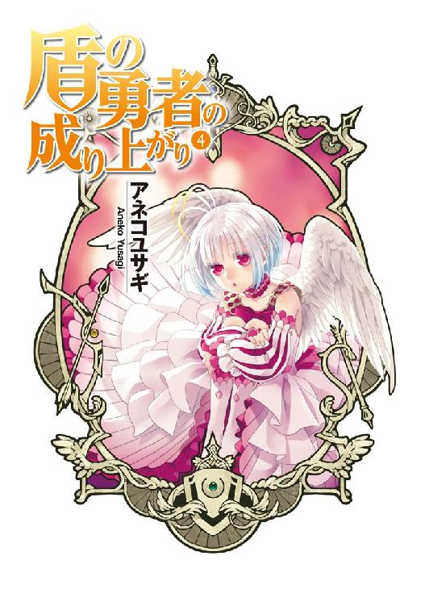
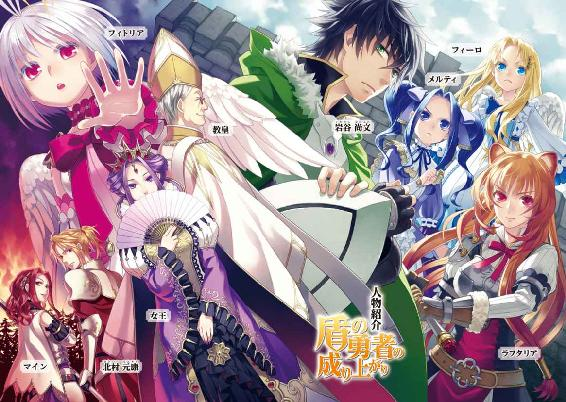
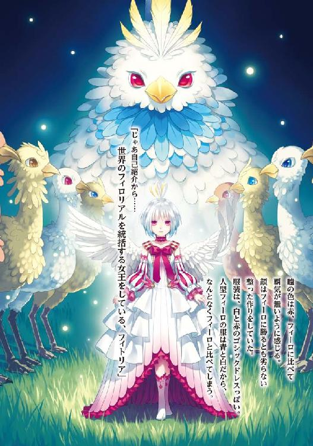
ＭＦブックス
盾の勇者の成り上がり４
アネコユサギ
 プロローグ 逃走中
プロローグ 逃走中
「しつこいな！ あの脳ミソハーレム野郎」
苛立って思わず毒づいた。
それもそのはず。俺達は現在メルティ洗脳誘拐容疑でずっと追われているからだ。
今、俺達は木々の多い茂った山道を隠れるようにして進んでいる。
後方には敵が迫っているのだ。
「クソ！ この世界に来てから碌なことがない！」
咄嗟に愚痴った所為でこれまでの事を思い出してしまった。
俺の名前は岩谷尚文。
元々は現代社会で自他共に認めるオタクな大学二年生だった。年齢は二十歳だ。
事の発端はある日、暇を持て余して街の図書館へ遊びに行った時に見つけた、四聖武器書という書物だ。その本を読んでいて、気が付いたら異世界に召喚されていたのだ。
しかも四聖武器書に書かれた四人の勇者のうちの一人、攻撃できない盾の勇者として。
初めは異世界万歳、夢のようなシチュエーションで勇者街道まっしぐらとか期待に胸を躍らせていた。だが、この世界の連中は俺を卑劣な罠に掛け、無一文にし、悪名まで被せて迫害したのだ。
やってもいない強姦の罪を被せられ、自ら攻撃することもできないにもかかわらず、一人でこの異世界を生きねばならなくなった。
しかも『波』と呼ばれる現象によって、この世界は破滅の瀬戸際にある。
波が到来すると俺はその現場へ強制的に召喚されて戦わねばならない。
厄介なことに俺を無理やりその場所に召喚する伝説の盾は絶対に外せない呪われた武器だ。
なんで俺を罠に嵌めたような連中のために命を懸けて戦わねばならないんだとは思うが、逃げられないのだからしょうがない。
この盾の所為で俺は盾以外の武器が持てず、敵を殴ってもダメージを与えられない。
その代わりというか、強くなるための手段として魔物や素材を盾に吸わせると盾が変化を起こして俺の能力を上げてくれる。
この世界はゲームのようなシステムで動いている部分がある。ステータス魔法と呼ばれるもので、要するに魔物とか敵を倒すとＬｖが上がって強くなれる。
Ｌｖと言われても現実味が薄くてピンとこない気もするが、がんばればがんばった分だけ強くなれる、積み上げた努力を結果が裏切らない、という面ではわかりやすいだろう。物心付く前からマンガやゲーム、アニメが好きだったオタクの俺にはかなり馴染みやすいシステムだ。
現在俺のＬｖは39、色々あって上がってきている。
「どうだ？ 撒いたか？」
「まだついて来ています」
「ちっ！」
今、俺を追ってきている奴の名前は北村元康。年齢は二一歳。
俺とは別の世界にあるという現代社会の日本から召喚された槍の勇者だ。
召喚された勇者の中で一番顔は良い。男同士だがそれは認めよう。
しかし、頭の中は女のことしか考えていないような軽い男だ。
元康は他の二人の勇者と同じく、この異世界と似たようなゲームを経験していて、言わば情報通だ。この世界のルールを熟知し、効率よく強くなる方法を知っている。
にもかかわらず俺には何も教えることなく、罠に嵌めて追い出した筆頭だ。
こんな無駄なことをしている暇があるなら、世界を救うために戦えって感じだ。
他に剣の勇者の天木錬と弓の勇者の川澄樹という別の日本から召喚された勇者達がいる。
錬は一六歳。クールを自称する黒髪の剣士とでも言えば概ね間違いない。
樹は一七歳だったかな。一見地味な少年だが、手先が器用そうな印象を受ける。
錬と樹は追いかけてくる気配はない。今回の事件に不審なところを感じたからだろう。
「魔法で姿を隠しましょうか？」
「任せる」
俺に魔法で隠れることを提案した子の名前はラフタリア。
タヌキのような耳と尻尾を生やしたラクーン種という亜人の女の子だ。
見た目の年齢は一八歳前後、身長は俺より少し低くて発育も良く、整った顔立ちで、一目で真面目そうだとわかる。贔屓目で見なくても可愛いと思えるほど、顔は良い。
髪は若干茶髪が入ったロング。少しカールしているがとても艶があり、四肢もすらっとしていてモデルみたいだとは思ったことはある。
このラフタリアという女の子は俺が異世界に召喚され、冤罪で嵌められて仲間も金も無く追い出された後に貯めた金で買った奴隷だった。
生殺与奪すらも思うままにできる奴隷紋というもので縛られた奴隷である。禁則事項に違反すれば奴隷紋が輝いて奴隷を苦しめる。俺は裏切られたショックから人を信じられなくなり、絶対に裏切らない奴隷として彼女を購入した。この事によってラフタリアは俺に嘘を言うことができない。
自ら敵を屠ることのできない俺の代わりに、武器を持って戦ってくれている。
買った当初はもっと幼い一〇歳くらいの女の子だった。
なんでもこの世界の亜人という人種はＬｖの上昇と共に急成長するらしい。
そのお陰で現在、見た目は大人の女の子になっている。
人間と亜人とが分けられているのはそういう理由があるからだそうだ。
最初の災厄の波が到来するまで、ラフタリアと二人でＬｖと装備を整え、どうにか乗り越えたまでは良かった。だけど、元康は俺が女の子を奴隷にしているというのを聞きつけて、攻撃手段の無い俺に一対一の決闘を申し込んできた。
俺を召喚した国、メルロマルクの王はその決闘を強要し、俺は卑怯な手段で無理やり負けさせられた。だが、自由となったラフタリアはそれでも俺に付いて行きたいと言って、現在も奴隷として俺と共にいてくれている。
そういうこともあって奴隷とはいっても奴隷紋が発動するようなことをラフタリアはしないし、碌に使役の条件を設定していないので、形だけの主従関係だ。
それにラフタリアは勇者の仲間として、世界を救う......波と戦うことを望んでいる。
というのも、元々ラフタリアは波によって住んでいた村、そして両親を失っている経緯がある。
だから災厄の波と戦うというのは雪辱戦でもあるのだろう。
波と戦うという使命を持つ勇者と、波によって全てを失った奴隷......目的は一緒だな。
俺はラフタリアの事を最初は使いやすい奴隷だと思っていたが現在は頼りになる右腕であり、親代わりの気持ちで接している。できれば無理をさせずに、安全な所に居させたいと思うが、ラフタリア自身が使命に燃えているためにそこまで強要していない。
ちなみに現在のＬｖは40だ。
「お任せください」
「いつもすまない」
「何を言っているのですか、私とナオフミ様の仲です。遠慮する必要はありません」
「......そうだな。まったく、あの野郎はしつこすぎる」
「ですね」
思わず愚痴ってしまう。
「フィーロとメルちゃんはどうすればいい？」
「そうだな、フィーロは人型でいろ。何かあったらフィロリアルの姿になれ。メルティは大人しくしていろ」
「わかったー」
「まるでわたしがうるさくしているみたいな言い方やめてくれない？」
「わかったわかった。メルティは後方を確認していてくれ」
今、俺に尋ねてきた二人は両方とも幼女だ。
一人目はフィーロ。
見た目は金髪碧眼で背中に羽の生えた一〇歳くらいの女の子。
くりくりっとしていて純粋そうな透明な青い眼、柔らかそうな頬、無邪気な顔つきをしている。
ワンピースを着こみ、胸にはリボン。シンプルだけどそれだけに本人の顔つきと背中の羽が可愛らしさを引き立てている。
その正体はフィロリアルという馬車を引く鳥型の魔物の女王......らしい。
本来の姿は人よりも大きなフクロウのようなペンギンのような魔物で、足が凄く速い。
色というか、羽の柄は白を基調とした桜色だ。
性格は......天真爛漫？ 食いしん坊で清楚っぽい外見とは反対の性格をしている。
腐ったドラゴンの肉すら食べようとするくらい、食いしん坊だ。
出会いはラフタリアの奴隷紋を再登録した時、奴隷を販売している奴隷商のテントの片隅にある魔物の卵を選ぶくじに挑戦して手に入れた卵だ。
だから生後約二ヶ月。
なぜか途中で羽の生えた天使みたいな姿に変身できるようになって、馬車を引く時以外は割とその姿でいる。
馬車を引くのが何よりも大好きで、俺に自分の価値を見出してもらうことを気にしている時がある。
最近じゃ友達もできて、食う寝る遊ぶ以外に大事なものを見つけたみたいだ。
まあフィーロのお陰で行商ができて相当稼いだんだけどさ。
フィーロからすると俺は飼い主で......ラフタリアは姉みたいな感じかな？ 一応は娘......みたいには思っているけど。
Ｌｖは40、ラフタリアと同じだ。
「ナオフミ様......手を」
「ああ」
ラフタリアの尻尾が膨らんで魔法が発動するようだ。
だから俺はラフタリアの手を握る。
「あー、お姉ちゃんがごしゅじんさまと仲良くしてるー。フィーロもー」
「仲良くしてません！ 状況を考えてください」
「でもー、お姉ちゃん、ごしゅじんさまを一人占めしようとするしー」
「良いから静かにしろって、逃げ切れなくなるだろ。ほらメルティもフィーロに注意しろ」
「わかっているわよ。フィーロちゃん。ここは少し我慢して」
「ぶー......ラフタリアお姉ちゃん。ごしゅじんさまの一番はフィーロがなるんだからね」
「何を言っているんですか」
「早くしないと追いつかれるわよ！」
最後はメルティ。
本名をメルティ＝メルロマルクという。
背格好はフィーロと殆ど同じ、ただ髪の色が綺麗な藍色で目立つな。
髪型はツインテール。気が強そうな目をしている。服装はゴシックドレスが似合うけれど、今は安い素材の農民の服を着ている。顔もラフタリアやフィーロに匹敵するくらい整っていて、将来は相当美人になると思う。性格はよくわからない。言葉尻を摘まんでは嫌味を言ってくる。
さっきも大人しくしていろと言ったら騒いでないと言われたしな。
最初は敬語口調で、割と普通に話をしていたんだけど、どうも一緒にいればいるほど険悪になってきているというか。
まあ、それもしょうがないか。
このメルティという女の子は俺を迫害しているこの国の第二王女で、現在、命の危険から身を守るために俺達とやむなく一緒に行動している。その縁で俺達も追われる立場になっているんだけどさ。
メルロマルクという国は盾の勇者の事を快く思っておらず、その盾の勇者が行商によって評価を上げたことを不服に思い、無理やり罪をでっちあげて、俺達をお尋ね者としたのだ。
その理由がメルティことメルロマルク第二王女兼、継承権第一位の姫様を誘拐したという疑いだ。
国へ引き渡せば良いと思うかもしれないが、そんな単純な話じゃない。国内には継承権の高いメルティを暗殺して優位に立とうという思惑を持つ者がいて、そのままノコノコとメルティを渡したら殺されてしまう可能性が高い。
結果的に俺達は協力関係を構築することとなったわけだ。
俺達が身の潔白を証明するためにはメルティをその母親である女王の元へ送り届ける必要がある。なんとも面倒くさいことに女王はメルロマルクの外にいる始末で、合流の見通しは立っていない。
尚、メルティはフィーロの大親友だ。
フィロリアルが大好きでフィーロと波長でも合ったのか、瞬く間に仲良くなった。
なんか母親である女王から、俺を罠に掛けた父親である国王との仲を取り持てとか言われていたらしい。
で、その後は色々とあって俺とはあんまり関係は良くない。
第二王女と役職で呼んでいたら激怒して名前で呼び合う間柄にはなったけどな。
ラフタリアの事はフィーロと同じく頼れるお姉さんと思っているようだ。
Ｌｖは19。俺達と一緒に旅をしているうちに一つ上がった。
「それで？ ラフタリアさん。何を唱えるのですか？」
ラフタリア相手には敬語で話すんだよな。どうして俺にはきつめなんだろう。
とか思いつつ、ラフタリアが魔法を唱え終わる。
『力の根源たる私が命ずる。理を今一度読み解き、私達の姿を隠せ』
「アル・ファスト・ハイディング！」
魔法で作りだされた木の葉が俺達に降りかかって姿が消え去る。
後は茂みの中で息を潜めた。
するとすぐに俺達が走ってきた方角から元康とその一行が追いかけてきた。
「どこへ行ったんだ、アイツ」
コイツが槍の勇者こと元康だ。
「モトヤス様、先に行かれたのではありませんか？」
元康には三人の仲間が一緒にいる。全員女だ。
今、元康に向かって声を掛けたのはその仲間の一人、名前は知らない。
「先に行きましょう」
「だが、尚文にはラフタリアちゃんがいるだろ？ この辺りに隠れているんじゃないかと思って」
勘のいい野郎だ。大正解だよ。
だが、当てるには何かしら伝説の武器にあるスキルか、魔法を使わないといけない。
そうなったら少々不利だけど、あてもなくいきなり魔法を唱えるなんて雲をつかむようなことをするのもどうかと思う。
「お？ 足跡発見！ こっちだ！」
元康が大きな声をあげて仲間三人を呼ぶ。
足跡の方向は俺達がいる方向とは違う。カモフラージュにフィーロの足跡を付けさせて正解だった。騙されてくれそうだ。
「では追いかけましょう。ああ......私の大切なメルティ。貴方は卑劣な盾の悪魔に洗脳されているのですわ。必ず救い出してあげますわ」
今、メルティの名前を呼んで俺の事を悪魔と罵ったのは、俺に冤罪を被せた張本人であるビッチな王女だ。冒険者名はマイン＝スフィア、本名はマルティ＝Ｓ＝メルロマルクとかいうらしい。
メルティの姉だ。
コイツは人が困るところを見るのが何よりも大好きで、同時に自身は贅沢が大好きなクソ女だ。
今回、俺が追われる立場になったのも全てはコイツが裏で一枚かんでいると推測される。
王位継承権は日ごろの行いの悪さからか、メルティよりも下だそうだ。
現に前回戦った時、次期女王の座は自分のものであるという確固たる結果を得るために、メルティに向かって本気で攻撃してきた経緯がある。
俺はコイツを心の中でビッチと呼んで蔑んでいる。
いつか絶対に痛い目にあわせてくれる！
「ではモトヤス様、先に進みましょう。私はすぐに追いかけますわ」
ビッチは元康を先に行かせてから辺りをキョロキョロと見渡す。
「こんな面倒なことをしなくても、山焼きをすればいいのですわ」
と、懐から何か瓶を取り出し、瓶の蓋を開けて中に入っていた液体を辺りにばらまく。
......スゲー嫌な予感がする。
ここで飛び出して阻止したら即座に元康が駆けつけてくるから何もしない方が良いだろうが。
「ナオフミ......」
「シッ」
メルティが心配そうに俺の肩を揺する。何をするのかなんとなく察しているようだな。
「ファスト・ファイア」
ボッとビッチは魔法を唱えて手から炎を出し、ばらまいた瓶の中身に向けて放った。
するとメラメラと瓶の中身の液体から火が立ち上っていく。
やっぱりそうか。あのクソ女、俺達を炙り出すために山に火を放つってどんな発想だよ。
一国の王女がやることじゃない。やることなすことまるで犯罪者だ。
アイツには道徳がないのか！
ビッチは火を放った後、すぐに元康の方へ駆けていった。
その間にも火はとめどなく広がり、木々がみるみる燃え上がっていく。振り返ると元康が来た方向からも煙が上がっている。
「ナオフミ様！」
「メルティ、魔法で消せるか？」
「ここのは消せるけど遠いのは無理よ。駆けつけるまでに広がりすぎるわ」
く......あのビッチは元康から少し遅れて山に火を放っているのだ。
どんだけ俺達に嫌がらせをすれば気が済むんだ。
大方、この山火事も俺がやったとか言うつもりなんだろう。
どうする？ 消火活動をしている暇はあるのか？
「ごしゅじんさま、けむーい」
「そうだな。フィーロ、フィロリアルの姿になれ。急いで山を出るぞ」
「うん！」
「火事はどうするのよ？」
「焼け石に水だが、メルティ、魔法で雨を降らせられないか？」
メルティは水の魔法が得意なのだ。だから最小限、被害を抑えることができないか聞く。
「やってみるけど期待しないでよ」
メルティが意識を集中して魔法を唱える。
『力の根源たるわたしが命ずる。理を今一度読み解き、恵みの雨を降らせよ』
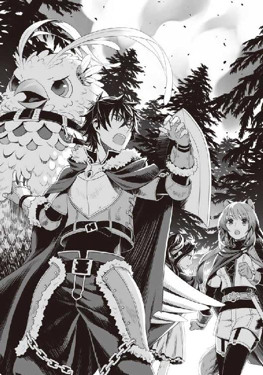
「ツヴァイト・スコール！」
メルティが魔法を唱えると上空に雨雲が出現して雨が降り始める。
ただ範囲はそこまで広くない。
......それでも無いよりはマシだな。
「すぐにこの辺りは火の海になる！ ラフタリア、メルティも逃げるのに異論はないな？」
「まったく！ 姉上ったら、何を考えているのよ！」
「俺に罪をなすりつけるつもりなんだろ」
辺りに煙が立ち込め始めている。雨で少しは被害を抑えることができればいいが......。
ボフンとフィロリアルの姿に戻ったフィーロの背に乗り、俺達はその場から元康が行った方角とは別の方へ緊急離脱した。
山火事の混乱で元康の追撃を撒くことができるだろう。
一話 亜人冒険者の街
元康を撒いて山を下りた俺達はこれからどうするか迷っていた。
「そもそも南西のどこへ行けばいいんだよ」
今回の事件を解決させることができる女王に会うためにメルロマルクの南西にある国へと向かっているんだけど、南西のどこに行けばいいのか教えてくれなかった。
雲を掴むような計画だけど、南西の国というからには国境を越えさえすれば目星は付くのかもしれない。
というか元康はどうやって俺達の所在を掴んでいるんだ？
目撃証言をもとに追いかけてきているんだろうというくらいの想像はできるけど。
......敵側の影か？
影というのは女王の所持する隠密諜報部隊の名称で、時々俺達の事を助けてくれる連中だ。
ただ、影も一枚岩じゃなくて、俺達に敵対しているのもいるそうだ。
この影は現在、俺達に協力してくれる女王派と俺にメルティ誘拐疑惑を掛けて殺そうとしている三勇教派が争っている最中らしい。諜報が得意ならば元康達に俺の所在を教えることなど造作もないのかもしれない。
俺が知る味方の影はなんか忍者っぽい格好をした連中だった。任務は諜報とか影武者とか多岐にわたるらしい。
「休む暇もない。どこかで元康達が遠くへ行くのを待たなきゃ連日逃げ続けることになるぞ」
あの馬鹿の所為でメルロマルク南西への旅路は大きく妨害されてしまった。
気が付けば目的の道から大きく外れてしまっている。
「フィーロ」
「なーに？」
「あの影って奴を察知できないか？」
「んー......隠れているのを見つけるのはラフタリアお姉ちゃんの方が得意だと思うよ？」
「そうなのか？」
「そうなの？ ラフタリアさん」
メルティも一緒になってラフタリアに尋ねる。
「私にそんな期待されても困ります。まあ、なんとなく違和感というものがある時はありますけど......それもかなり近寄らないとわからないですよ」
「そうだね。ずっと遠くから誰か見ているような気配がする時はあるけど、隠れきるのは難しいと思うの」
影の監視を掻い潜るのは至難の業ということか。だが、こちらにも影が協力し、陽動をしてくれているので、元康の追跡から高確率で逃げることができるのだ。
それに......元康は夜になると追ってこない。大方、あのビッチとかが夜間戦闘を嫌がっているんだろうな。睡眠不足はお肌の天敵とかほざいてそうだ。あの放火魔。
追ってこないなら、それに越したことはないんだけどさ。
「あ」
メルティが閃いたみたいな顔をして俺を見る。
「なんだ？」
「この辺りに知り合いの貴族がいるわ。もしかしたら匿ってくれるかもしれない。槍の勇者様を完全に撒いてから逃げるというのはどうかしら？」
「街へ入るのか？ お前と俺が？ 最近じゃフィーロもアウトだぞ」
まず、俺の人相が割れてる。映像水晶という俺の世界で言うところの３Ｄ写真みたいな道具があって、メルロマルクの国内で俺の顔を知らない者はいない。
フィーロも見つかったら通報される。というのも最近ではフィーロが普通のフィロリアルに変身できるというのがばれてしまっていて、桜色のフィロリアルというだけで怪しまれる。
遠目で確認した村でメルロマルクの兵士が注意していた。
「しかも貴族だろ？」
俺の質問には大きな意味がある。
メルロマルクの貴族というのは盾の勇者に対して嫌悪感を持っている。メルティの話や三勇教の話を聞く限り盾の勇者というのはメルロマルクの国敵なのだ。幾ら俺が行商で信頼を勝ち取っていたといっても、貴族クラスとなると嫌悪されていると見て良いだろうな。
「たぶん、大丈夫だと思うわ」
「なんで？」
「その貴族は母上の右腕をしていた貴族と同じ考えをしていたから」
「どういう意味だ？」
「その方はメルロマルク国内で人と亜人との仲を取り持とうとしていた人なの」
「じゃあそいつにお前の父親とか三勇教を黙らせろよ」
そんな奴がいるならなんで俺の疑いとかを晴らせないんだよ。
女王の右腕って女王と共にいるから国内の事情に疎いとかじゃないだろうな。
「セーアエット領って所を管理していた貴族なんだけどね......波で死んじゃったのよ」
「うわ......」
良い人ほど早く死ぬというが酷すぎないか？
「自らの領土で休暇中に波に遭遇、最後まで領地の民を守るために戦ったらしいわ」
「そうだったんですか......」
「ええ、メルロマルクの最初の波で犠牲になった貴族よ」
ん？ 最初の波？
俺はラフタリアの方を見る。確かメルロマルク最初の波に遭遇したのがラフタリアだ。
するとラフタリアはコクリと頷いた。
「私の住んでいた村は領主様の保護区だったそうです。だけど領主様が亡くなったことで、再興しようとしていた村は......」
ああ、本当の事なのね。
「その貴族が亡くなったことからメルロマルクじゃ亜人との懸け橋となる考えの人が追い出されたわ。その貴族と考えを同じくする者達は父上の命令で左遷されたらしいの。問題はそれだけじゃなく、セーアエット領の者達は暴徒によって悲惨な目にあったとも聞くし」
「......国の兵士が率先していましたよ」
忌々しいと言うかのようにラフタリアがメルティに告げる。
するとメルティは静かに頷く。その意味をちゃんと理解しているのだろう。
「母上が帰ってきたら厳罰に処すと思うわ。一応、母上が書簡を送ったけれど、効果は薄いようだし。事が済んだらラフタリアさん、兵士の特徴を教えて」
「はい」
「お前の親父は本当に碌なことをしないな」
「父上......」
俺の言葉に気を落とすメルティ。
それもしょうがないことだ。実の親や姉に命を狙われているんだからな。
メルティ曰く利用されているだけらしいが、果たして本当にあのクズ王が無関係なのかね。
それよりも謎なのは亜人排斥主義のメルロマルクで亜人優遇政策を進めていた貴族と女王だけどさ。どんな目的があったのか、情報が足りなすぎて、今の俺では皆目見当も付かない。
......思考が脱線したな。話を戻そう。
「で、その領主と親交が深い貴族がこの辺りにいるのか？」
「たぶんね。父上の周りにはいなかったから左遷されて自らの領地に追いやられてしまっていると思うわ」
「些か賭けになるな」
その貴族も風当たりが強そうだ。だが、この辺りは知らない場所ではない。
なんだかんだでフィーロに馬車を引かせてメルロマルク国内は殆ど廻ったからな。メルティが教える街の貴族とも会ったことくらいはある。
盾の勇者ではなく、行商をしている神鳥の聖人として安物のアクセサリーを高額で売りつけた。
インテリっぽい若い貴族だったと記憶している。優男風だった。うん、優男と内心で呼ぼう。
あの時は心の中で笑っていたが、まさか盾の勇者だとわかって購入していたんだろうか？
......ありうる。人当たりは良かった。それにあの街は亜人の冒険者が多かった印象がある。ラフタリアなら怪しまれずに入ることはできるかもしれない。
「街の中に入るのはリスクが高いんだよな。特にメルティとフィーロがな」
「なんで？」
メルティが首を傾げる。というかフィーロ、メルティの真似をするな。
「お前の髪の色は目立つ」
メルティの髪は特徴的で、濃い青......というか藍色だ。
あまり見ない色合いだからどう変装しても髪色だけで気付かれる。
フィーロはフィロリアルの姿もクイーンの姿も、ましてや人型の姿も目立つから隠しようがない。だが、この状態で三人揃ってローブとか着ていたらそれこそ目立つ。
「そんなこと言ったらナオフミだってそうじゃない」
「まあ、そうなんだけどさ」
「ねぇ、ごしゅじんさまー夜に街の壁をフィーロがみんなを乗せて飛び越えて街に入るのはー？」
「発想は悪くないが、見張りに一発でばれそうだな」
「ラフタリアさんの魔法を使って......って、どっちにしても探知の魔法をされていたら見つかっちゃうわね」
「どうしましょうか。頼れそうなのは確かなのでしょうけど」
このまま逃避行するのも悪くはないが、連日元康の相手をするのは骨が折れる。
疲れが溜まっている自覚がある。何も元康だけが敵じゃないんだ。賞金稼ぎの冒険者や兵士とだって戦うことがあるので、少し休みたい。
「あの......」
ラフタリアが手を上げて言う。
「どうした？」
「もしかしたら立ち寄るかもしれない。と、あちらも察してくださっているかもしれませんよ」
ふむ......十分考えられる。
なんだかんだで国内では盾の勇者に対する評価が二分している......らしいからな。
「そうね。あと、ナオフミ、亜人の冒険者とかなら話を聞いてくれるかもしれないわよ」
「なんでだ？」
「忘れたの？ 盾の勇者ってのは人間絶対主義のメルロマルクからしたら敵、なら亜人は？」
ああ、そうだった。メルロマルクと仲が悪い国に亜人の国がある。
三勇教はメルロマルクの国教みたいだし、その敵対国となれば盾の勇者を優遇してくれていて、協力してくれる可能性は高い。
だとすれば亜人なら話を聞いてくれるかもしれない。
思えば行商時に亜人の冒険者が割と初期から購入してくれていた記憶がある。ものは試しだな。
「じゃあ目的の街に着いたら亜人の冒険者に声を掛けてみるとしよう」
「はい」
「上手く行くと良いわね」
「しゅっぱーつ」
こうして俺達は近くの街へと隠れながら出発したのだった。
「す、すいませんでしたー！」
「お、おい！」
匿ってくれるかもしれない貴族の街の近くまで来たところで亜人の冒険者を見つけたので、物陰に隠れつつ、声を掛けて近寄ったんだけど......。
「あーあ......これで一〇回目ね。ナオフミ、アンタ何かしたの？」
「知らねえよ！」
俺の顔を見るなり盛大に謝罪して亜人の冒険者は逃げるように走って行ってしまう。
なんだ？ 盾の悪魔という異名は亜人にも轟いているわけ？
これじゃあ話にならないんだが......。
「通報......されたわけじゃないみたいね」
「そうだな。こっちも急いで逃げたが兵士の一人も駆けつけてこない」
街の警護をする兵士とか俺達を見つけて追いかけてくるかと思ったがその様子はない。
強いて言うなら時々通行していた亜人の冒険者さえ、逃げるかのように別の道を使い始めたというところか。
「私が尋ねてきましょうか？」
「ラフタリア、任せられるか？」
「はい」
「何かあったら全力で助けを求めろよ」
「わかりました」
「お姉ちゃんいってらっしゃーい」
というわけでラフタリアを代表にして亜人の冒険者に声を掛けさせる。
ちょっと不安だな。亜人の冒険者って、なんかピリピリしたように街道を歩いていたからな。
やはり亜人差別をするメルロマルクは居心地は良くないのだろう。
なんでこんな所にいるのかと思うけど、そんなの人の数だけ理由があるか。
しばらく話をしていたラフタリアが戻ってきた。
「ただいま帰りました」
「どうだった？」
「えっと......なぜナオフミ様から逃げるのかとそれとなく聞いたところ、盾の勇者様に直接、話をしてはいけないと注意されているそうです」
「どういうことだ？」
「私も不思議に思って、疑われない範囲で尋ねるとー......盾の勇者が宣言した、とのことだそうで」
過去の盾の勇者はそんなことを亜人共に吹聴したのか？ なんて厄介な。
じゃあラフタリアが俺と話をしてくれていたのは盾の勇者と知らなかったのと、亜人に関する問題に疎かったからか！ どこまで俺に生きづらい世界なんだよ。
「ナオフミ、前に亜人に近寄るなとか言わなかった？」
「覚えがないな」
「おかしいわね。母上から聞いた話だと盾の勇者が自分に近寄るなと命令したから、盾の勇者を信仰している亜人はその通りに従ったと聞いたけど」
......はい？
「ごしゅじんさまが近寄るなって言うから？」
「じゃないの？」
「身に覚えがないぞ。歴代の盾の勇者が言ったからじゃないのか？」
「違うわよ。じゃあその話は間違って伝わったのかしら？」
三勇教の妨害か！
「ナオフミがこの世界に来て数日後の話なんだけど......」
......その頃の事は荒れていたから殆ど覚えていない。
誰もかれもが俺を騙すつもりだと思い込んで、話しかけてきた奴にきつく当たっていた時期だ。
もしかして、俺は本心から仲間になりたいとか思っている奴に近寄るなとか言い放ったのか？
「ナオフミ？ もしかして......」
「......で？ 街には入れそうか？」
話題を逸らそう。じゃなきゃメルティの視線に耐えられそうにない。
「ええ、話をしたところでは友好的な印象を受けましたよ。メルロマルクは馬鹿なことをしている。三勇教も終わりだなと」
「通報とかはされていないか？」
「盾の勇者様が近くにいるけど、通報は絶対にしないと亜人の方々は言ってました」
「ふむ......ちょっと危ないが試してみるか？」
最悪、フィーロの俊足で逃げることができるしな。
マントをローブのように羽織って......。
「もしもし」
「ん？」
茂みに隠れているのに声を掛けられた？
みると眼鏡を掛けた優男が、ちょっと高級そうな馬車を止めて俺達に声を掛けていた。
うん、覚えているぞ。あの街の貴族......優男だったはず。
「そこにいるのはメルティ王女と盾の勇者様ですよね」
「あ、ああ」
「そうよ」
「このような場所で話をするのはなんですので、私共の屋敷で話をしませんか？」
来た方向から察するに迎えに来てくれたんだろう。なんとも気が利くことで。
「そのまま他の勇者共に引き渡すようなら暴れるぞ」
「ナオフミ、幾らなんでも──」
「俺の配下と野蛮な王女が」
「なんですって!?」
メルティが俺を思いっきり睨みつける。
「野蛮なのはアンタでしょ！」
「何を言うか。俺ほど知識人な勇者はいない」
「この前のアクセサリーに関しては、真にありがとうございます。素材はとても質素、どこにでもあるものですが、勇者様のデザインで価値は高いと思っております。相場の五倍ほどでしたが良い買い物をしましたよ」
......メルティの視線が痛い。
「真に申し訳ありません」
ラフタリアが頭を抱えている。
「とりあえず行きましょうよナオフミ。アンタが何をしたのかは後でみっちりと聞こうじゃない」
「なんでお前にそんな話をしなきゃならんのだ」
「今後同じような問題が起こった時のためよ。盾の悪魔って言われるのはナオフミが原因じゃないの？」
「聞いたところで俺の武勇伝にしかならないぞ」
「犯罪を自慢するんじゃないわよ！」
ふん、敵を幾ら騙したところで何の罪悪感も湧かないんだよ。
知恵というのは敵から見たら総じて卑怯に見えるもんさ。
「まあまあ、ここで騒いでは槍の勇者が来てしまうかもしれませんよ」
む......ラフタリアの言うことはもっともだ。俺達は渋々優男の馬車に乗ることにした。
馬車の窓から外の様子を覗きみる。そんなに日数が経っていないのになんか人里が懐かしく感じられる。田舎臭い街並みではあるんだけどなぁ。
やはりこの街は亜人が多めのようだ。冒険者が多い。
それから屋敷に案内され、馬車を降りて屋敷内に入る。
「おじゃまします」
メルティが一礼して屋敷に足を進める。
こういう公式な場だと礼義正しいみたいなんだよな。他の勇者と話をする時もそうだけど。
というか俺の時だけ態度が悪い。毎度思うがなんでだろうな。
まあ、良い印象を持たれるようなことをしてないからしょうがないけどさ。
「追われて大変だったでしょう。しばらくの間、ゆっくりしていてください」
案内された食堂で、優男は食事を持ってこさせて、俺達に提供してくれた。
フィーロの行儀があんまり良くないが、優男は微笑ましいと笑みを浮かべている。
「それで我が領地には逃亡の末に立ち寄ったというところでしょうか？」
「そうだな。元康......槍の勇者の追跡を振り切るために潜伏しようと思って、といったところだ」
「お尋ねしたいのですが、近隣の山に火を放って槍の勇者の追跡を逃れたと報告には上がってますが、真相はどうなのでしょうか？」
あのビッチ。自分がした事のくせに、やはり俺の所為にしたか。
メルティが頭を抱えている。
「お前の姉は揺るがないな。想像通りの行動をする」
「姉上......ここまでするとは」
「やはり真相は異なるようですね」
「ああ、犯人は俺じゃない。犯人は槍の勇者の仲間である王女だ。潜伏してやり過ごそうとしていた所で火を放っているのを見た」
優男の溜息も深い。あの女の蛮行はどこまで行くんだろうな。
「わかりました。力になれると良いのですが......他に何かありますでしょうか？」
「女王と合流するためにはどうしたら良いかと思ってな。元康から逃げるにしてもこう連日相手をしていたら時間が掛かりすぎるからな」
貴族はしばし考えた後に頷いた。
「なるほど、事情は理解しました。私共が協力できる範囲で致しましょう。ですが......何分、私の立場も危ぶまれているため、どこまで協力できるかわかりません」
「そこまで期待していない。できる範囲で良い」
まだ信用に値するかわからないし、そもそも長居するつもりもないしな。
「少し休憩を取りたい。後は他の勇者の動向を知ることができないか？」
敵は元康だけじゃない。錬や樹がいつ襲ってくるか見当もつかないから、調べられるのなら頼んでおいた方が良いだろう。
もちろんこの優男も三勇教の影に見張られている可能性が高いから、情報の収集と物資の補給を済ませたらすぐにでも逃げ出したいところではある。
国境越えもあるし......できれば、安全なコースがあるかの確認をしたい。
「わかりました。勇者様方が現在何をしているかくらいなら調べられると思いますので、お待ちを」
「あまり迷惑を掛けていられない。明日には出るとしよう」
「そんなに早く移動するの？ もう少しゆっくりすべきじゃないの？」
メルティが異論を唱えるように俺に提案する。
「嗅ぎつかれる危険性が高いからな。長居すると迷惑が掛かるだろ」
「そ、そうだけど」
「では勇者様方の動向を報告いたしますので、それまではごゆっくり」
「感謝する」
「もう少しゆっくりしたかったわ......」
「......メルティ様は盾の勇者様と一緒に旅をされて少し変わられたご様子ですね」
「な、何を言っているのよ」
「前は何を話しても公務を優先して感情を表に出されておられませんでしたけど、今の方が民は喜ぶと思いますよ」
と、なんか微笑ましいものを見る目で優男はメルティに笑みを向ける。
「そ、そんなんじゃないわ」
「メルちゃんどうしたの？」
「フィーロちゃん、気にしないで。この人が勝手に私の評価をしてるだけよ」
「ふーん」
「昔のメルティちゃんはどんな感じだったのですか？」
優男にラフタリアが尋ねる。
「常に敬語口調で、落ちついた言動を無理して取っておられましたね。女王様もその辺りは懸念しておられましたが、どうやら盾の勇者様と関わって良い方向に成長なさっておられるようで、私共は嬉しい限りですよ」
「だ、黙りなさい！」
「敬語口調ねー......そういや初対面の時はそんな感じだったな。なんでこうなったんだろうな？」
「ナオフミ様の所為かと思いますよ？」
「俺の所為？ そんなわけないだろ」
俺と一緒に行動するようになって、じゃなくて元々の資質だ。化けの皮が剥がれただけだ。
ま、それでもどこぞのクズな王や自分の事しか考えていない放火魔の王女よりは遥かにマシだ。
「ナオフミの所為よ！」
「変な因縁を付けるなよ。放火魔の妹。ヒステリーは血筋だな」
「なんですって！ よりにもよって姉上と同一視!? とてつもなく侮辱されたわ！」
メルティが思いっきり睨みつけてくる。
やはりあの放火魔の事は嫌いみたいだ。奴を好きになる方が難しいと思うがな。
そういう意味では元康はある意味では凄い。全然褒められることではないが。
しかし、あのビッチの妹なんだからメルティもなんだかんだで因子は持ってるだろ。
たまたま人を貶めることに快感を覚えなかっただけでさ。とは思うが黙っておこう。
「訂正なさいよ」
「ああ、はいはい。メルティはあの放火魔とは違うよな。これで良いか？」
「全然誠意が感じられないわ！」
「そりゃそうだろ」
「なんですって!?」
最近そのセリフが口癖になってないか？
「まあまあ、落ちついて。ナオフミ様はこういう時に何を言っても変わりませんから」
悟ったみたいにラフタリアがメルティを宥める。
フィーロも一緒に頷いている。なんだ、その妙な連帯感は。
「では食事も済んだご様子なので、部屋で休んでください。明日には、可能な限りの情報が集まっていると思いますので」
客室に案内された俺達はそのままゆっくりと休むことになった。
が、すんなり話が進みすぎているので、俺は警戒を解かずに窓の外をしきりに確認している。
食事に毒は無かったようだけど、どこまで信用できることやら。
「ナオフミ、少しは落ち着きなさいよ」
「生憎この世界に来てから、こういう時は素直に休まないように決めているんでね」
「だからって......それじゃあ疲れが取れないじゃない」
「寝ている時に物を盗まれたことがあるからな。下手に寝たら裏切られるかもしれない」
「ああもう......どうしてそうも他人を信じられないのよ」
「お前の姉と父親の所為だろ！」
「わかっているけど、少しは信じなさいって言ってるの！」
「知らんな、俺は俺の思う通りに休むだけだ」
「父上や姉上を怒っているのは何もナオフミだけじゃないから落ちつきなさいよ！」
「誰だよ」
「母上よ。わたしが行くまで事が起こる度に父上や姉上を模した絵や人形に八つ当たりしてたわ」
「へー......自業自得だな。男を見る目がないのと娘の教育がなっていない」
「母上の悪口まで言う気!?」
メルティが入ってからこんな感じで、ピーチクパーチク騒がしくなった。
ただでさえ、命を狙われている立場なんだ。警戒を解いたら殺されるかもしれないだろうが。
「じゃあナオフミ様、私達が見張りを致しますので、早めにお休みください」
「ん？ ああ......わかった」
「なんでラフタリアさんの言うことはすぐに聞くのよ！」
「ラフタリアは信用に値するからだ」
「わたしは信じられないっての!?」
「別に......」
裏切れるような状況ではないからな。
命を狙われている立場だし、戦いにも協力してくれた。信じていないわけじゃない。
これまでの言動も第二王女、そして継承権一位としての立場に見合ったものだ。
そういう意味では信頼に値する人物なのかもしれない。
ただ、それとこれとは別だ。
共に行動した期間もそうだが、ラフタリアとメルティでは積み上げてきたものが違いすぎる。
信頼というのは、そういうものだろう。
「メルちゃん、フィーロこの家の探検したい」
フィーロが突然、これまでの会話とはまるで関係ないことを言い出した。
「ああ、そうね。気分転換にお願いしてみようかしら。じゃあラフタリアさん。わたしはフィーロちゃんと一緒に屋敷内を散歩してくるわ」
「探検だよー」
フィーロが訂正を求めているが、メルティは優しく笑ってから手を振って部屋を出ていった。
やっと騒がしいのがいなくなった。
その途端、どっと疲れが出てきた。
ベッドに横になり、ラフタリアに見張りを頼んでから俺は休息を取ることにした。
ん......誰かが近づいてくる気配がする。アレからどれくらい寝ただろうか？
ビッチに騙されてから寝ている最中に近づいてくる奴がいると目が覚めてしまうんだ。
「それ以上近づくとナオフミ様が起きてしまいますよ」
「えー、フィーロごしゅじんさまとおやすみしたい」
フィーロか、屋敷の探索を終えて戻ってきたみたいだな。
ということは一緒に出かけたメルティもいるのだろう。
途端に騒がしくなってきた。せっかく寝ていたというのに......。
「ダメですよ。前から言っているじゃないですか」
「えーでもラフタリアお姉ちゃん、ごしゅじんさまと一緒に寝たことあるって言ってた」
「寝る前から近くにいる場合は大丈夫みたいなんですよ」
「じゃあ今度起きてる時にお願いしてみるー」
「......嫌がると思いますよ」
ラフタリア、よくわかっているじゃないか。
俺は寝ている最中に近寄られると安眠できない。
現に寝ている俺にフィーロが近づいた所為で起きてしまった。
「......ふぁあ」
ラフタリアの眠そうな欠伸が聞こえた。
「ラフタリアさんも少し休んだ方がいいわ。わたしが見張ってるから」
「お願いできますか？」
「任せて」
「じゃあ、おやすみなさい」
ラフタリアが隣のベッドに横になった後、割とすぐに寝息が聞こえ始める。
それからしばらく、メルティとフィーロは小声で軽い雑談をしているようだった。
メルティが静かにするようにフィーロに教え込んでいる。
「ねえ、フィーロちゃん」
「なーに？」
弱々しく、メルティは小さな声で呟く。
「わたしね、さっきも言われたけど、人と話す時、常に敬語口調を心がけていたの」
ああ、優男が言ってたな。
確かにメルティって最初は敬語だったけど、あっちの方が素だとでも言うつもりか？
「だけど......なぜかナオフミと話をしてから段々ときつい言葉を言うようになってきてて、最初は普通に接することができたのに、今じゃ文句ばかり」
なんかメルティの声が涙声になってきている。
え？ そんな辛いことだったのか？
「さっきも、ナオフミに侮辱されて、自分でも驚くくらいヒステリックな声を上げてしまうし......まるで自分じゃないみたいなの！ フィーロちゃん、こんなわたしは、やっぱり変よね？」
「えっとー......」
珍しくフィーロが返答に困ってる。
相談する相手を間違っているだろ。フィーロが何を答えられるというのだ。ラフタリアならまだ答えられそうだけど。ここで俺が起き上がって説明しても良いが、俺が聞いていたことを知ったらメルティが更に暴れ出しそうだ。
『寝たふりで聞き耳を立てていたの!?』
とかな。そうなったら悩みとか先送りになってしまう。
何が原因かは知らないが、俺と関わった所為でメルティの正義感みたいな何かに火がついて文句を言わずにはいられないんだろう。藪蛇になりかねない。俺が関わることじゃないな。
「メルちゃんは......ごしゅじんさまの事をどう思ってるの？」
「え？ それってどういう意味なの？」
「メルちゃんはごしゅじんさまだけにワガママ言っちゃうんでしょ？」
「た、たぶん」
「メルちゃんは、ごしゅじんさまなら何でも言えるんだよね？」
「え？ そ、そうなのかな？」
「だって、メルちゃん、ごしゅじんさまと話をしている時は、生き生きとしているようにフィーロには見えたよ？」
フィーロ、言うようになったじゃないか。
あのヒステリックなメルティがメルティの本来の姿で、なんとも嫌な女だということか。
親の教育のお陰で敬語口調で且つ真面目に行動することを美徳と教わっていたが、あのビッチの妹としての本性が俺と一緒にいるうちに開花したとフィーロは言っているのか。
「ち、違うわ......断じてそんなことはないわ！ フィーロちゃん、おかしなことを言わないで」
「メルちゃん、おかしなことを言ったつもりはないよー。一緒にごしゅじんさまに可愛がってもらおうよー」
「何を言っているの？ わたしは、そんなんじゃないわ！」
「えー違うの？」
フィーロとメルティ、何を争っているのやら......。
これ......俺の夢か何かだな。メルティもあんな弱々しいことなんて言わないだろうし。
そう自分を納得させた。
次に目が覚めるとラフタリアが隣のベッドでフィーロと共に寝息を立てていて、メルティが黄昏たかのように、窓から外を見つめていた。
起き上がるとメルティが俺の方を向く。
何か神妙な面持ちで俺を見つめるメルティに、先ほどの夢がチラつく。
「起きたのね」
「ああ、そろそろ交代か？」
「......わたしはそんなに眠くないから良いわ」
「そうか」
とはいえ、メルティと二人で黙って窓の外を見るというのもなんだな。沈黙が室内を支配している。
「......ねえナオフミ？」
「なんだ？」
「ここに来てからずっと考えていたんだけど、わたし、ここの貴族に頼んで父上の元へ行くのも手かもって思うのよ」
「大丈夫なのか？」
確かに、狙われているのは俺達であってメルティの方はあくまで誘拐されたという扱いだ。
左遷されているとはいえ、優男がメルティをクズの元へ送り届ければ、メルティの方は大丈夫......かもしれない。
もちろん、城に入ってクズの元へ行けるのならだけどな。
俺達と一緒にクズに会うよりは効率的かもしれない。
「たぶんね......あんまりナオフミ達に迷惑を掛けられないし、わたしはわたしのすべきことをやりたいと思ったのよ」
幼いくせに考えているんだな。メルティの評価を上げねばならない。俺の身の潔白を証明するためにクズ王の元へ行く考えか......。
「安全だと証明できるなら、それも一つの手だな」
「もちろん、危険は承知の上よ。ただ、姉上の息の掛かった者達と一緒に行くよりはね」
メルティにとって、ビッチの関係者は命を狙う刺客だ。そして俺達と一緒に旅をするというのも危険な戦いの連続なんだ。
なら俺達が注意をひきつけているうちに、メルティの方から動くのも手かもしれない。
女王と合流するのは何もメルティがいなきゃいけないわけじゃないだろうしなぁ。
「あくまで案の一つよ。頭の片隅にでも入れておいて」
「わかったよ。なんだかんだで考えているんだな」
「わたしを子供扱いする気!?」
「そういう意味じゃねえよ。見直しただけだ」
「その言い方が──」
と、結局、俺達は言い争いを始めてしまう。だが、この時、話した案が実現する時が、目の前に迫っているなど、夢にも思わなかったのだった。
二話 因縁の貴族
日が落ち切った頃だろうか。
窓の外を見ているうちに、一台の馬車が屋敷の敷地に入ってきた。
メルティとフィーロは屋敷の探索を再開していた。まだ探検したりなかったらしい。
俺は寝ているラフタリアを起こして、警戒態勢を取るように指示をした。
どうしたものか。
馬車から小太りのおっさんが屋敷の扉を叩いて入ってきた。その背後には兵士らしき連中が何十人もぞろぞろと同行している。
それから数分経った。すると貴族が雇ったメイドが俺達の部屋の扉を叩いた。
「なんだ？」
「急いでこの場からお逃げください」
「外を見ていたから理由はわかっている。そいつらに突き出すようなら命はないぞ」
優男が実は俺達を騙すために屋敷に招いたという可能性は捨てきれないからな。
返答次第じゃ、窓を蹴破って逃げる。
「隣街の貴族が......盾の勇者様がこの屋敷にいるのではないかと乗り込んできたのです」
「なんだと？」
じゃあさっきのおっさんが貴族か？ 今のところ嘘は言っていないみたいだ。
「ナオフミ様」
ラフタリアの声に俺はそっと、窓から外の様子を覗きこむ。
すると小太りのおっさんとその配下の兵士が、優男を縄で縛って馬車へと連れ込もうとしている最中だった。
うん。アレは俺を騙そうとしているというのではなさそうだ。
風当たりが強いと言っていた。どうやら難癖付けられて連行されてしまう瞬間のようだ。
どうする？ このまま窓をぶち破って逃げようものならあの優男の身が更に危うくなる。
「どうか、領主様のために、見つからずにお逃げになることはできないでしょうか？」
扉の前でメイドが頼み込んでくる。
......確かに現状では優男のためにやむなく逃げるのは手だ。
「早くしなければ兵士が来ます。ささ、勝手口ならまだ大丈夫ですので、どうか......」
「フィーロとメルティは？」
「現在、お二方も共に逃亡の準備をしている最中です」
「わかった。だが、俺を罠に嵌めようものなら、即座に手痛い反撃をするから覚悟しろよ」
俺達は急いで準備し、扉を開けてメイドの指示するまま勝手口へ向かった。
その途中、台所でのこと。
「ここに隠れてください！」
メイドが人の気配を察して、台所にあるメイド用の休憩室に俺達を押し込んだ。
続いて扉の向こうから声が聞こえてきた。
「こんな所にいたのか。お前、何か隠していないか？」
聞き覚えのない男の声が聞こえてくる。おそらく隣街の貴族が連れてきた兵士の声だ。
「ここには盾の悪魔が滞在している疑惑があるんだ。大人しくこっちへ来い！」
「キャ！」
メイドの悲鳴が聞こえてくる。
「お、お待ちください！ 厨房は私達の──」
「黙れ、我等が使命を邪魔するというのか！」
メイドの悲鳴と兵士の笑い声がした。胸糞悪いな。
「とにかく、この屋敷内に盾の悪魔がいるかもしれないんだ。全て調べさせてもらうぞ！」
どかどかと音が響き渡る。
まだ俺達が隠れている部屋には入ってくる気配はないが......どうしたものか。
見つかった場合の対処だよな。そもそもフィーロとメルティはどこだ？ 合流するにしても......このままじゃ見つからずに逃げるのは難しそうだ。最悪の事態に備えて、とラフタリアの方を向く。するとラフタリアは腰に提げた剣に手を触れ、いつでも飛びだせると頷く。
多勢に無勢だが、勝てなくはない。優男には悪いが......。
カチャッと俺達が潜んでいた部屋の扉が開こうとしていた。
「第二王女がいたぞ！」
そんな声が聞こえてくる。
「わたしはメルロマルク国第二王女、メルティ＝メルロマルクです。なんですかこんなに大勢の兵士を連れて！」
それはメルティの声だった。威厳が籠っているとも言える、しっかりとした口調だ。
俺と話す時のようなヒステリックな声ではない。こう、意思が感じ取れる。
フィーロの声が聞こえないところをみるに一緒ではないようだ。
潜伏していた部屋の扉が閉まる。
どうする？ メルティが見つかったぞ。急いで飛び出すべきじゃないのか？
「盾の悪魔はどこだ！」
メルティに向かって兵士が怒鳴る。
「お黙りなさい！ 貴方は誰に物を言っているのです！」
「これはこれはメルティ王女様」
ザザッと兵士が大きく踵を揃える音が聞こえた。
「あ......」
ラフタリアが声を漏らしそうになり、口を押さえている。
なんだ？ ラフタリアの表情がみるみる青ざめていき、脂汗を流して震えている。
「だ、大丈夫か？」
心配して小声で尋ねるとラフタリアは、震えたまま何度も頷く。
だが、とても大丈夫そうには見えなかった。
「このような場所でかくれんぼでしょうか？ 盾の悪魔はどこにいるのでしょう？」
「残念ですが、盾の勇者様はこの場にはおられません」
「ほう......それはどういう意味ですかな？」
「盾の勇者様にわたしはお願いしたのです。どうかわたしを置いてこの場からお逃げください。わたしが国に残り、容疑を晴らしてみせると」
今日、話をした案を実行しようというのか？ 無謀だぞ！
「なるほど......一応、筋は通っているご様子。つまりメルティ王女様が単身でこの場に留まり、盾の悪魔は既にこの場にはいないと？」
「ええ、どこへ行ったのか、わたしにも皆目見当もつきません」
「お前達、屋敷内はちゃんと調べ上げたか!?」
「は、はい！ 見つかりません！」
メルティに話しかけていた......隣街の貴族は舌打ちをした。
「それではしょうがありませんね。メルティ王女様、ご同行をお願いします」
「わかりました」
他にも何か話しているが、声がどんどん遠くなっていく。
おい、このままメルティを置いていくのか？ 冗談じゃない。
「ナオフミ様」
「ああ」
俺達は急いで扉を開けようとすると。
「ここには盾の勇者様はおられません！」
メルティが一際大きな声で言い放った。
おそらく俺達が近くに隠れていて、今まさに飛び出そうとしているのを察してくれたのだ。
く......ここで飛び出すというのはメルティの意志に反するということなのか。
「わたしが直々に父上に疑いを晴らすように進言します。さあ、早く城へ連れていきなさい」
「いいえ、まずは私共の屋敷へ来てもらいましょう。話はそれからです。全ては神のお導きです」
メルティが息を飲む。それ見たことか、これ以上堪える必要がない！
急いで扉を開けようとしたら、先ほどのメイドが扉を遮るように立っている。
「どうか......メルティ王女様の決意を無駄にしないでください。でなければここの領主様にも更なる罰が与えられてしまいます」
「どうせ無実を証明できれば──」
俺の返答を遮るようにメイドは言葉を続ける。
「せめて、盾の勇者様と領主様が無関係だと思わせることができてから......お願いいたします」
......そうか。優男が匿っていることが証明されてしまったら、その場で殺されかねない。
数名で逃げるから小回りが利くのだ。あの優男やその関係者を連れまわすわけにはいかないんだ。
だから少しでも生き残れる可能性を引き上げるために、メルティを後で回収......しに来たと、無関係だと証明させたいのだ。
俺は裏切られるのも、裏切るのも嫌いだ。
知ったことか......と口にするのは簡単だが、優男には恩がある。これ以上、俺が巻き込まれたことで被害を与えるわけにはいかない。
「領主様が入手した情報です。槍の勇者様は現在、離れた地で盾の勇者様を捜索中です。剣と弓の勇者様もこの辺りにはいないようです」
敵は元康だけではなかったんだ。国内の貴族こそが厄介な敵だったんだ。
メイドがゆっくりと扉を開ける。
「フィーロはどこだ？ メルティと一緒に連れていかれたのか？」
「盾の勇者様と一緒におられた金髪の子ですよね。メルティ王女とは一緒ではありませんでした」
それから俺達は優男のいなくなった屋敷内でフィーロを捜し回った。
まったく、タダでさえメルティが連れ去られてしまったというのに、あの子供まで行方不明とは。
で、どこにフィーロがいたのかというと、屋敷の屋根裏に隠れていた。
俺が呼んでも隠れ続けていたようで、最終手段で魔物紋を作動させて無理やり炙り出した。
近くにいたのが幸いしたな。
「きゅう......ごしゅじんさまひどーい」
「酷いのはどっちだ。さっさと出て来ないのが悪い」
「そうですよフィーロ。何をしていたんですか！」
ラフタリアが叱りつけるのだけど、フィーロは能天気な顔で答える。
「あれ？ メルちゃんどこ行ったの？」
「気付かなかったのか？」
「ん？ なんか騒がしくなった後、メルちゃんがね、かくれんぼしよって言いだしてフィーロかくれたの。メルちゃん、絶対に出ちゃダメだって」
フィーロは状況を飲みこめていない......のか。
メルティを置き去りに国境の方へ逃げ込み、そのまま他国へ亡命すれば......今回の出来事は解決に向かうかもしれない。
あのメルティだって、三勇教に引き渡されたら命がないことくらい覚悟しているはずなんだ。
生き残るには影の干渉が入ることを期待しなくてはいけない。あの貴族の口調から察するに三勇教の息が掛かっていると考えて間違いはないだろう。
そのまま消されるか、元康とビッチに引き渡されて殺されるかのどっちかだ。
相手だって馬鹿じゃない。メルティの言い訳が嘘であることくらい察しているだろう。
俺達を誘き寄せるために......な。優男を拷問するかもしれないな。
このままメルティを見捨てて逃げれば、女王と出会える確率は大きく跳ね上がる。
メルティは俺達に逃げるための時間を作ってくれたのだ。
俺は......メルティが作った逃亡の隙をどうするかを考える。
見捨てるわけじゃない、と言い訳して自らの命を優先するのか？
確かにメルティは憎いビッチの妹だ。だが、メルティは俺を裏切ったことは一度もない。
現にこうして俺達が生き延びるための時間を稼いでくれた。
なら......俺ができることは一つしかない。
たとえ命の危険があるのだとしても、俺を信じてくれた者に、俺は応えなきゃいけないんだ。
「フィーロ、これから言うことをちゃんと聞くんだぞ」
「うん。なーに？」
「メルティが連れ去られた。俺達を守るためな」
「え!?」
フィーロは状況を理解し、ボフンとフィロリアル・クイーンの姿になって走り出そうとする。
「待て、どこへ行くつもりだ？」
「急いでメルちゃんを助ける！」
俺は優男のメイドに尋ねる。
「念のため確認だ。メルティはどこへ連れ去られていった？」
「隣街の領主の屋敷かと思います。そんなに距離はないので......既に到着しているかと」
行商中も思ったのだが、隣街は割と目と鼻の先にある。
売り子をしているラフタリアを嫌悪されて売り物が売れず、その日のうちに出たんだよな。
入るのに凄く因縁を付けられた。そのくせ、出るのは......。
当初は特に疑問を抱かなかったが、考えられる範囲で想像すると出てくる答えがある。
一つは、亜人への風当たりが強いメルロマルク国内で、亜人を特別差別している場所。
国内の情勢にはそこまで詳しくはないが、あり得ない話ではない。
もう一つは、この街の領主と隣街の領主の権力の差。
確かに隣街の方が遥かに大きい。
ぶっちゃけると俺達が滞在している屋敷のある街は村に毛が生えた程度の、割と小さな街でしかない。家柄とか、そういうのを鑑みるにこの二つの理由と見て良いだろうなぁ。
あの貴族が管理している街は確か伝説か何かがあったよな。
なんだったか。過去の勇者が化け物を倒したとか封印しただとか、そういう伝説だ。
その辺りを名物にしていた記憶がある。
「屋敷の見取り図とかないか？」
「私共の中で何度か足を運んだ者がおります。その者の証言を元に見取り図を作ってはどうでしょう？」
なるほど、入ったことのある者の話なら多少は参考になるだろう。
その結果、ある程度簡略化した地図を俺は作った。
貴族の屋敷は三階建てで、中庭付きだ。メルティが入れられる部屋は、おそらく二階の奥だと教えられた。
「わかった。迷惑を掛けたな。じゃあ行くぞ、フィーロ、ラフタリア」
「はい！」
「うん！」
この屋敷の主である優男も連れ去られてしまった。
できる限りこれ以上の迷惑を掛けないためにできることはなんだ？
関係者を装うのではなく、メルティを俺達が取り戻しに来たとでも言うしかないな。
優男は俺達からメルティを奪ったとかの名目を立てさせるべきだろう。
じゃなければ拷問の末に殺されかねない。
......この街はメルロマルクでも珍しい亜人の多い街だ。できる限り守るべきだろう。
それから俺達は急いでメルティを連れていった馬車を追いかけた。
「くそ......」
優男の街では亜人達が殺気だっている。なんだかんだで人望がある領主......であるらしい。
ここで俺が名乗りを上げて先導すれば少しは有利に事が運ぶかとも思うが、むやみに事件に巻き込むのも心が痛む。しかも優男が俺達を匿っていたことがバレて本末転倒でもある。
俺とラフタリア、フィーロの少人数で行った方が効率的にメルティを救いだせるだろう。
そういうわけで、俺達はフィーロに乗って隣街の壁を飛び越えるに至った。
幸いなのはラフタリアの偽装魔法と夜の闇に紛れることですんなり侵入できたところか？
「......あの高台にある屋敷か？」
街の高台に大きな屋敷が建っている。街を治める領主が住むには良い立地だろう。
「はい......あの屋敷です」
ラフタリアが静かに頷いて答える。
「どうした？」
「なんでもありません」
ラフタリアの様子がおかしい。
「前に来た時は......気付きませんでした。ですが、間違いないと思います」
「どうしたの？ ラフタリアお姉ちゃん」
街の塀から貴族の屋敷を睨むラフタリア。妙に緊迫している。
「夜の闇に紛れて近づきましょう。早くしないと大変なことになると思います」
ラフタリアの魔法が上手く効果を発揮していて、フィーロの足で屋根伝いに領主の屋敷へと近づいていく。見つかりかねないが、さすがに夜の街で屋根を見上げる者は少ない。
「街の監視をしている兵士だって、まだ気付いてはいないようだ。盾の勇者に捕まっていた第二王女を保護したという状況なのに」
「......おそらく、あの貴族は夜、人には言えないことをしているからですよ。ナオフミ様がやってくると言われてもまだ対応が遅れているのでしょう」
「何か知っているのか？」
「はい。この街は......他と違いますね。ここの貴族は監視の目が強いと悪事をするのに困るのでしょう」
「......それは、奴隷時代の話か？」
「はい」
静かに、ラフタリアは頷いた。
ここの貴族がラフタリアを拷問し、心に深い傷を負わせた奴だったのか。
そんな奴が、メルティを捕まえたら何をするかわかったもんじゃないな。
「聞いていたかフィーロ。早くしないとメルティが大変なことになるぞ」
「うん！ 絶対にメルちゃんは助ける！」
高台の領主の屋敷にある高い柵をフィーロは乗り越える。
「ウォン！ ウォン！」
警備用の飼育された魔物が即座に異変を嗅ぎつけて駆けつけてくる。ぶっちゃけると番犬だな。
名前はガーディア。真っ黒な毛の長いオオカミのような魔物だ。
背中に音の鳴る器官を備えている。笛を付けた魔物だ。声と音で異変を辺りに知らせている。
「うるさい！」
「ウオ──」
フィーロが駆けつけてくるガーディアを即座に蹴り飛ばして黙らせた。
音を鳴らすよりも早く仕留めるとか、本気のフィーロは恐ろしいな。
「なんだ？」
物音を聞きつけて警備兵が、駆けつけてくる。
「こ、これは──う！」
「すみませんが、静かにしていてください」
騒がれるよりも早く、ラフタリアが剣の柄で警備兵の腹部を突き、気絶させた。
手慣れた感じになってしまった。まるで俺達が怪盗みたいじゃないか。
「ごしゅじんさま？ 早くいこう」
「ある程度見取り図は書いてきたが......ラフタリア、他の事はわかるか？」
「私が知っているのは......地下室だけです」
「そこにメルティがいると思うか？」
ラフタリアは無言で首を横に振る。
ここの貴族は亜人を拷問する趣味を持つ奴だ。
仮にもメルロマルクの第二王女をそこに詰め込んで拷問をするか？ と聞かれると疑問だな。
とりあえずは侵入してみなきゃ始まらないだろう。
......よくよく考えてみればメルティを取り戻すのが目的なんだ。
しかも他に勇者はいない。国の兵士程度なら返り討ちにできる......と思う。
そう考えていた時、警備兵が屋敷の門から大勢出ていくのが見えた。
「なんだ？」
「フィーロ、何かわかりますか？」
ラフタリアの質問にフィーロがつま先立ちになって、警備兵が出ていった方角を見つめる。
街を守る塀の方から松明の灯りが見え、街の入り口辺りから煙が上がっているのだ。
「んー？ えっとねー、なんか喧嘩してるよ？」
「誰と誰がだ？」
「えっとー、亜人さんと兵士？」
なるほど、優男が連れ去られたと騒ぎになって、領主を慕う一部の亜人の冒険者達が押し掛けてきたのだろう。で、兵士たちは俺が先導していると勘違いしたんだ。これは利用しない手はない。
「丁度良い。せっかく兵士が自分から出ていったんだ。奴らが戻ってくる前に正面突破して、メルティを奪還するぞ！」
「おー！」
「え？ ナオフミ様？ 慎重に行くのではないのですか？」
「兵士程度なら今の俺達でも勝てる。しかもここまでザルなんだ。たかが知れている」
確かにラフタリアもフィーロもＬｖは40で、これ以上の上昇をさせるにはクラスアップという儀式を行わないとできない。だが、国の兵士は波での戦闘を見るにラフタリアやフィーロに劣る戦闘力しかないだろう。
やられたらやり返す。屋敷を急襲されたなら、同じことを返してやればいい。
「先手必勝だ。元々俺達は国を脱出して、女王に会うために勇者から逃げていたんだ。その勇者が近くにいないのなら少しの騒ぎぐらい起こしたって良いさ」
「なるほど......わかりました」
「じゃあ行くよー。どーん！」
俺の号令にフィーロが先陣を切って、貴族の屋敷の窓を蹴破って侵入する。
「フィーロ、遠慮するな。その姿のまま壁を蹴破る勢いで突き進め！」
気を付けなきゃいけないのはメルティがどの部屋で捕まっているかなんだけどさ。
見取り図や証言からだと二階だろうけど、間違っている可能性もある。
「そのままフィーロは暴れ続けろ。その間にラフタリアと俺がメルティを助け出す」
「うん！ とー！」
フィーロが廊下の右側へと駆け出すと同時に俺達は中庭を突っ切って二階を目指す。
途中、中庭に変な岩を見つけた。
なんだ？ 石碑？
中庭に石碑を設けるとか変な趣味の貴族だな。
まあ、地下室を作って亜人奴隷を痛めつける悪趣味な奴だ。理解しようがない。
どかんどかんと音を立てて、フィーロが暴れる。
さて......ここの貴族はどんな動きをするかな。
騒ぎの原因として奴が思いつくのは、一つ目は盾の勇者である俺がメルティを取り戻すために乗り込んできた。
この場合、貴族はメルティを人質にするだろう。
二つ目は優男を連行していったことによる亜人の暴動。
この場合は優男を人質にするだろうな。
俺達は亜人達の暴動に乗っかった形だ。まあ、暴れているのがフィーロだからすぐにわかるだろうけど。
「ナオフミ様！ こっちです！」
ラフタリアが中庭を抜けた廊下の先にある部屋の扉を指し示す。
「ここに地下室への入り口があります」
「メルティはそこにいると思うか？」
「......いえ。ですがおそらく、あの貴族に捕まった奴隷の子がいると思います」
「今、俺達に助けられる余裕があるか？ 助けても迷惑を掛けるだけだぞ？」
「それでも......私は......」
ここに捕らえられているということは、間違いなく亜人だろう。
俺と出会う前に、ここでラフタリアは酷い目にあっている。
沢山辛い経験をしたと聞いた。きっと昔の自分や仲間達を助けたいんだろう。
俺達にそんな余裕はないが、今を逃せば助けられる命を助けられないかもしれない。
そういう気持ちがラフタリアの中にあるんだと思う。
「......わかったよ。だが、メルティを助けるのが先だ。敵だって俺達の正体に気付いているはずだからな」
「はい！」
ドゴンと音がして、二階をドタバタと駆けまわる音が響き渡る。
フィーロ......お前、何をしてんだ。
「メルちゃああああん！」
フィーロの声が屋敷内に木霊する。うん。フィーロに敵なしだな。
勇者がいない今、この場でフィーロに敵う者はいないと見て良い。
「侵入者は排除する！」
警備兵が数名駆けつけて来て、俺達を見つけて警戒態勢に入る。
「た、盾の悪魔だ！ 早く領主様に報告するんだ！」
「ラフタリア！」
「はい！」
剣を抜いたラフタリアが警備兵に向けて駆ける。
俺も続く。警備兵が愚かにも持っている剣で俺に切りつける。
俺が現在変化させている盾はキメラヴァイパーシールド。
盾の勇者である俺には攻撃能力はない。だけど、その代わりに反撃能力がある。
キメラヴァイパーシールドにはカウンター効果、蛇の毒牙（中）というものがある。
これは俺が相手の攻撃を耐えきると、キメラヴァイパーシールドに装飾された蛇が動き出して敵に噛み付く。その牙は毒を流し込む効果がある。
「か、硬い！ な、なんだ、装飾品が動いた!? ぐあ！」
案の定、俺を攻撃した警備兵は蛇の装飾に噛まれて苦しみ始める。
蛇の毒牙（中）の毒を受けると、下手をすれば死に至る。
「早々にこの場から逃げ出して急いで治療院にでも行くか解毒剤でも買うんだな、このままじゃ死ぬぞ？」
俺が守ることしかできないと舐めているからそうなるんだ。
「うぐ......」
「くそ、盾の悪魔め！」
毒で倒れた警備兵を担いで仲間の警備兵は下がっていく。
追撃するのは簡単だが、俺達の目的は人殺しではない。メルティの奪還なのだ。
優男はメルティを保護していたに過ぎない。あくまで盾の勇者とは無関係......にするには難しくなってきているけどな。優男を慕う亜人が暴動を起こしているみたいだし。
それでも、宣言する必要はあるか。
警備兵を強襲して悪人のような演技をして尋ねる。
「さあ、メルティ第二王女はどこかな？ 間違っても隣街の貴族なんてどうでも良い奴を紹介するなよ？ 俺達はここだろうが、隣だろうが、メルティ第二王女を取り戻すだけだ！」
警備兵を脅して案内させて行くと、フィーロと小太りの貴族が睨みあいをしている最中だった。
貴族はメルティの首筋に刃物を当て、フィーロが近寄れないように牽制している。床にはあの優男がぐったりと倒れ込んでいる。
見た感じだが......拷問されていたのだろう。メルティの瞳には涙の跡ができている。
趣味の悪い奴だな。
「領主様！」
「貴様等！ 誰が盾の悪魔を連れて来いと言った！ この裏切り者共が！」
「ずいぶんな言いようだな」
フィーロが一人でここまで来ているのだから警備なんてあって無いようなもんだ。
「メルちゃん！」
「フィーロちゃん！ 来ちゃダメよ。わたしは......決めたの、父上の所へこの人に連れていってもらうって」
「本当に連れていってもらえると思えるか？」
「......」
俺の問いにメルティは黙りこむ。
まあ、まともな奴なら連れていくことを優先してくれるだろうが、コイツはメルティを連れていこうとした時に『全ては神のお導きです』とほざいていた。熱心な教徒の可能性が高い。
メルロマルクの国教は三勇教で、俺に冤罪を被せた主犯だ。
仮にメルティの話通りに王が何も知らされずにいるとして、真相を知った場合はどう動く？
その宗教が関わっているとなると、素直に父親の所になんて連れていくはずもない。
「はっはっは！ お前等、一歩でも動いてみろ。メルティ第二王女の首にこのナイフが刺さるぞ」
「一歩でも動かなきゃ良いんだろ？」
「何？」
「エアストシールド」
メルティと貴族の間に盾を出現させるスキルを発動させて壁を作る。
「な──」
「今だ！」
「うん！」
メルティとの間に生み出された盾によって隙が生じた貴族に、フィーロが高速で駆け寄って飛び蹴りを喰らわせる。
「ぐは！」
貴族はフィーロの蹴りを受けて壁に吹き飛んだ。
「ラフタリア！」
「はい！」
ラフタリアはメルティの元に駆け寄って、怪我がないかを確認する。
「あの貴族に追い打ちを掛けろよ」
「ナオフミ様......お気持ちは非常にわかりますが......まずはメルティちゃん達の介抱が先だと思います。既にフィーロによって沈黙していますし」
「どうだかな」
「うん......近くにメルちゃんがいたから、そこまで力を入れてないけど、あの太った人、それなりに強いと思うよ」
国の貴族をしているんだ。クラスアップくらいしているだろうな。
優男の方に駆けより、とりあえず回復魔法を唱えて傷を癒す。
そして抱き起こして、耳元で囁いた。
「迷惑を掛けた。あくまで俺達は無関係者だ。ここで俺との関係性が明らかになると、本格的に拷問を受けることになってしまうかもしれないからな」
「何から何まで......申し訳ありませんね。ご心配なく......あの方はこちらを生かして帰すつもりもない様子。亜人達を正式に処分できるこの事態を喜んでおります」
「そうか......」
「できる限り交渉はしたのですが......どうか、止めてください。お願いします」
俺だって、このまま泣き寝入りするつもりはない。
が、警備兵が次々と駆けつけて来ているみたいだ。
ただ、メルロマルクの貴族に手を上げたという俺の悪事の証拠が増えるだけなのか。
錬や樹が真相に辿り着いていることを祈るしかないが、この騒ぎで完全に敵対化されたらたまったもんじゃないな。
フィーロの蹴りで吹き飛ばされた貴族を見て警備兵が驚きの声を出してる。
優男の応急手当てを終え、立たせる。すると優男はメルティに優しく微笑みかけた。
「メルティ王女と盾の勇者様の優しさ、しかと受け取りました。やはり噂は噂でしたね......」
「俺と一緒だと戦いに巻き込まれるぞ」
これ以上、同行者が増えたら困る。どう見ても非戦闘民だし、俺だって万能じゃない。
「わかっておりますよ。私も私のツテを頼って、事が収束するまで隠れるだけです」
「そうか」
「よかったです」
迷惑を掛けてしまったと思っていたところでこう返されると少し安心する。
ラフタリアがメルティと優男の無事を理解して、キッとフィーロに蹴り飛ばされた貴族を睨みつける。尻尾が逆立ち、本気で怒っているのを俺とフィーロ、メルティも感じていた。
「ぐ......わ、わしにこんなことをしおって、貴様ら、拷問だけでは許さんぞ！ 命をもって償わせてくれる！」
「......それは、貴方によって殺された亜人全てに言えるんでしょうね」
スッと、腰から剣を抜いたラフタリアが殺気を放って告げた。
「当たり前ではないか。奴等は人ではないわ！ わしの街に乗り込んできたとは、そんなにも死にたいようだな！」
「そうでしたね......貴方はそういう人です」
「ぬ？ 貴様、わしの事を知っているようだな......そうか！ 思い出したぞ、前に売り払った奴隷だな！」
「ええ、あの時は......お世話になりましたね」
「ふふふ......よもや盾の悪魔の配下に加わっていたとはな。今でも思い出す、貴様の泣き顔とその声、久々に満足の行くものだった。そうかそうか、またわしの元で絶望を味わいたいか！」
「......いいえ」
ラフタリアは俺の方を振り向き、そして貴族を見る。
ラフタリアの持つ剣が淡く輝いて見える。
幻影剣だったか、ラフタリアは姿を隠して相手を後ろから刺すという攻撃を使えるが、それとも違う何かがラフタリアの剣に宿っているような気がした。
「私はナオフミ様の事を注意できるほど、できた人ではありません。ですから......強く復讐を否定しませんでした」
そういえばラフタリアは注意こそすれど、止めたことはなかった。
元々心優しい女の子なのに、何かおかしいなとは思っていた。
そうか。すっかり忘れていた。ラフタリアにも復讐したい相手がいたんだ。
ならば、俺はその復讐に対して、力を貸したい。
力になりたいと思う。
たとえそれが道徳的に悪いことだったとしても、俺はラフタリアの味方に回る。
あの日、ラフタリアはビッチや元康、クズ王、全ての者が俺を糾弾しているあの場面で、矢面に立って俺を守ってくれた。救ってくれた。
そのラフタリアを傷付けた相手だ。許せるはずもない。
「私は、ナオフミ様のように誰かを守ることはできないのかもしれません。あの村を、取り戻したいという願いも叶わないのを知っています。だけど──」
チャキッと剣を貴族に向けて、ラフタリアは言い放った。
「今、貴方を止めなければ私やリファナちゃんのような人が増えてしまいます。それだけは許せない！」
「フ......亜人風情がわしに歯向かうというのか、良いだろう。その愚かさを身をもって味わわせてくれる！」
貴族も警備兵から鞭を受け取り、構えた。
こいつ......鞭使いか。
しかもあの鞭、なんか凄く嫌な感じがする。何だろうか。
「ごしゅじんさま......なんかあの鞭いやー」
フィーロがメルティを連れて俺の隣に寄りそってくる。
「ふふふ......わしの鞭は長年亜人共の血を吸った一品。たとえ盾の悪魔であろうともこの唯一品に耐えられるかな？」
うわ、呪いの品みたいなものなのかよ。
下手にダメージを受けたら追加効果、呪いとかありそうな代物だ。
それにしても趣味が悪い。敵だけでなく、自分も呪われそうだな。
「くらえ！」
貴族が広範囲に鞭を振るう。
俺とラフタリアは振るわれた鞭を屈んで回避する。
フィーロは狭い屋敷内で避けるためにやむなく人化し、メルティを庇った。
優男もその辺りは察しているのか、屈んでいる。
くそ、こんな狭い室内で暴れるんじゃねえよ。
「ぐは──」
貴族の振るった鞭が警備兵に命中する。
警備兵が着ていた鎧が変形し、血を吐いて倒れた。
鞭の割に威力高すぎだろ。あれは相当警戒しないとやばいな。
「りょ、領主様？」
「何をしている。この盾の悪魔とその一行を今すぐ殺せ！」
「は、ハ！」
警備兵が俺達に向かって突撃してきた。
剣を大きく振りかぶってラフタリアに切りつける。
「邪魔です！」
体をのけぞらせ、紙一重で避けたラフタリアは警備兵の剣に自らの剣をからませて上に弾く。
それだけで警備兵の剣が天井に刺さってしまった。
「あ──」
警備兵が呆気に取られた瞬間、腹に蹴りを加えて吹き飛ばし、貴族に向かって駆け寄る。
「おのれ！ 役に立たないクズ共が！ 戦場だったら死んでおるぞ！」
忌々しそうに貴族は鞭を振るってラフタリアに当てようと試みる。
伸びてくる鞭をラフタリアは避け、剣を向けた。
「くっ......！」
一度は避けた鞭なのだけど、室内のテーブルに引っかけて、ラフタリアの後方に鞭の軌道が回り込む。
なんて器用な奴なんだ。
こんな狭い室内で鞭を使いこなすとか、相当手練れな鞭使いなんだ。
「させるか！ エアストシールド！」
その軌道を読み取って俺はラフタリアに向かう鞭を妨害する。
「どけ！」
く......俺の作りだした盾を起点に鞭が更に曲がってラフタリアを追いかける。
まるで生きた蛇みたいだ。
その鞭がラフタリアの剣に巻きついて、手を縛りあげようとする。
咄嗟にラフタリアは剣を手放し、距離を取った。
「ほう......決断力はあるようだな。だが素手でわしに勝てると思っているのか？」
素手か......確かにラフタリアは腕力がそれなりにあるが、あの貴族相手に勝てるかというと怪しい。かなりやばいぞ。
貴族はラフタリアが落とした剣を鞭で持ち上げて、振り回してきた。
ラフタリアはその剣の攻撃を仰け反って避け、腰に付けたもう一振りの剣......魔力剣を引き抜いて構える。ただ、剣先はまだ出現していない。
魔力剣は武器屋の親父がくれた試作品で、魔力を剣の形にして作りだす剣だ。
「まだ、私にはこれがあります」
貴族がへらへらと笑い始める。
「そんな玩具の剣で何ができる！」
だが──大事なことを忘れているぞ。俺が黙って見ているはずもないだろ！
「上手く行くとおもうな！」
俺は伸びていく鞭を握る。
手に違和感がある。ジュッと火傷のような痛みが後からやってきた。
やはりこれは呪いの類だ。
「わしの鞭を掴むとは愚かな盾の勇者だ！」
「ふん。この程度造作もない」
火傷のような痛みこそあれど、耐えきれないほどではない。
「むしろ俺が押さえたことによって──」
「私が攻撃できます！」
ラフタリアが貴族に向けて魔力剣の刀身を出現させ、袈裟切りにした。
「おっと」
鞭を伸ばしたまま、ラフタリアの魔力剣を貴族は後方へ飛んで避ける。
「なかなかの速さではないか。まあわしほどではないがな」
むしろ小太りのくせに妙に強いじゃないか、この貴族。
警備兵を薙ぎ払ったあの一撃、コイツが一人で波と戦えば良いだろ。
メルティと優男に目を向ける。
「あの人......父上と一緒で昔、亜人との戦争で活躍したって話なの」
なるほど、元軍人というやつか。なら戦闘の心得があっても不思議ではない。
先ほども亜人との戦争とか言っていたし、そりゃあ魔物としかまともに戦ったことのない俺達では経験の差が出るな。
「だが、わしの鞭を封じたからといって勝てると思うなよ！」
「それはこっちの台詞だな。俺は守ることしかできないが、ラフタリアは幾らでもお前を攻撃できるんだ」
「ふん。下劣な亜人風情を配下にしている程度で粋がりおって、恐るるに足らん」
「ラフタリア」
「はい！」
俺の指示にラフタリアは強く頷き、剣先に手をかざす。するとラフタリアの剣が先ほどよりも強く輝き始めた。
「フィーロ！」
ラフタリアがフィーロを呼ぶ。
「なーに？」
「あの人を倒すために、メルティちゃんと一緒に魔法を唱えてください」
「わかったー。メルちゃん、やろう」
「え、でも......わかったわ」
迷ったようにメルティは貴族と俺達を交互に見る。
そして一度頷くと、決意したように意識を集中しだした。
「おや？ さすがは盾の悪魔の洗脳。メルティ第二王女を駒のように扱うとは」
「いいえ、わたしは洗脳などされていません。わたしは......貴方の行いが間違っていると思うからこそ、こうして王女として貴方を断罪します」
「愚かな......」
「じゃあフィーロがんばるー」
「フィーロちゃん。狭い部屋であまり強力な魔法を唱えると、みんなを巻きこんじゃうから注意してね」
「うん。わかったー！」
『力の根源たるわたしが命ずる。理を今一度読み解き、彼の者に水の塊を射出せよ！』
「ツヴァイト・アクアショット！」
『力の根源たるフィーロが命ずる。ことわりを今一度読み解き、かの者を激しき真空の刃で切り裂け！』
「ツヴァイト・ウイングカッター！」
ほぼ同時にメルティとフィーロが魔法を発動させる。
メルティの手からは水の塊が、フィーロの手からは風の刃が貴族に向かって飛んでいく。
「ふん！」
うお、貴族の奴、水の塊をもう一本の鞭を取り出して叩き落とし、フィーロの魔法は避けやがった。
「今です！」
ラフタリアが避けた隙をついて貴族に剣を向けて走り出す。
「この程度でやられるか！」
貴族がラフタリアに鞭を振るう。
させるか。俺は鞭を持ったまま前に出て、貴族が振るったもう一本の鞭も掴んだ。
「何!?」
「でええええい！」
俺の動きに合わせてラフタリアが声を張り上げながら、警備兵が落とした剣を足で拾い上げ、魔力剣を投擲すると貴族の胸に突き刺した。
魔力剣は相手の魔力を削ぐ効果がある。過去にビッチを失神させた。だから効果はあるはず。
「ぐ......まだまだ！」
「いいえ、終わりです！ やああああああああああああああ！」
ドスッと音がしたかと思うと貴族の肩に剣が深々と刺さった。
「ぐぁあああああああああああああああああああああ！ おのれ！ 亜人風情がわしを傷つけて良いと思っているのか！ 亜人との戦争を生き残ったこのわしを！」
「戦争で亜人と戦った？ それは戦場で言ってください。ここは戦場ではありません！」
「許さん！ 何があろうとも殺してくれる！」
「貴方は、ただ、自分よりも弱い相手に当たる卑怯者です！ 貴方と戦った亜人はどんな人ですか？ 私が知るのは女性や子供......皆、弱い立場の人ばかりです！ そんな人が戦いを語る資格など、ありません！」
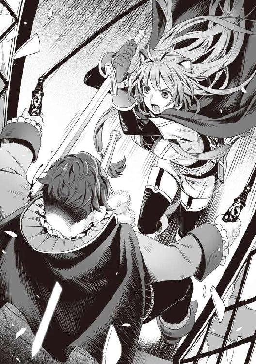
そして勢いのまま、ラフタリアは部屋の窓を突き破って貴族を落とし、突き刺していた剣から手を放して、魔力剣を取り戻す。
「はああああああああああああ！」
「おのれぇええええええええええええええ！」
俺は咄嗟に掴んでいた両方の鞭を放して貴族が落ちていく光景を眺めた。
危なかったな。あのままじゃ俺も引きずられるところだった。
「りょ、領主様が盾の悪魔一行に敗れた！」
警備兵が恐れおののくように逃げ出していく。
「あの日見た旗を私は取り戻してみせます......」
そう呟いたラフタリアは窓から空を見上げてから俺の元へ駆け寄ってきた。
「大丈夫ですか？」
「ん？ ああ、問題ないさ」
まだラフタリアを治療した時に使っていた聖水が僅かに残っている。
この程度の呪いならすぐに解けるだろう。
俺は破れた窓から屋敷の庭をみる。庭には貴族が仰向けで倒れていた。
多分、死んだ......か？
ラフタリアの話じゃ、亜人奴隷を殺す外道だとか、その末路を思うと、納得できる。
「さて、じゃあこれから混乱に乗じて逃げるとするか」
「その前に......」
「ああ、わかっている」
囚われているかもしれない亜人奴隷を救うか。
ラフタリアがそれを望んでいるなら、それくらい叶えてやるさ。
俺は優男の方を向いて頼み事をした。
「ここの貴族は亜人奴隷を地下室に監禁して拷問する趣味を持っていたらしい」
「この国にはそのような貴族が多くいますので、おそらくは......」
「ここで亜人奴隷を助けたとして、俺達は追われる身だ。弱った亜人奴隷を連れて逃げては助けられる者も助けられない。無理を承知で頼めないか？」
かなり酷い頼み事をしているのは自覚している。
だが、ラフタリアの願いを叶えるにはその選択以外、存在しない。
「その事実を知ったら是が非でも協力させていただきます」
優しげに笑う優男。
今のところ嘘は言っていないので、頼むほかないだろうな。
「大丈夫ですよ。私の協力者は亜人の方が多いので喜んで力を貸してくれると思います」
「そうだと良いんだがな」
俺達はその足で、ラフタリアが案内する地下室へ足を踏み入れた。
鍵の掛かった扉があったが、フィーロの強引な蹴りで呆気なく壊れてしまった。
入った途端、異臭で鼻を塞ぎたくなる。
奴隷商のテントの中でも、近寄りたくないと思った死の匂いというのを即座に感じた。
これは......やばいな。
「なんかいやな感じー......」
フィーロが嫌そうに付いてくる。
メルティに至っては怯えつつも、全てを受け入れるかのような決意で付いてきていた。
「この先です」
薄暗い地下室に入ると様々な拷問器具、そして白骨化した死体が転がっている。
ここでどれだけの犠牲者が出たのだろうか。
そう思っていると部屋の片隅にある白骨死体の前でラフタリアが両手を合わせて祈る。
「ラフタリア？」
「この子は......村で一緒に遊んだ女の子なんです。名前はリファナちゃんっていって、その......」
ラフタリアは悲しそうにその子の白骨死体を眺め、顔を伏せた。
友達......だったんだろう。
「リファナちゃんは明るくて元気な子で......昔話が好きだったんです」
その話を聞いて、メルティが辛そうな顔をした。
この国の王女だからな。こんな悲惨な現実を見れば、思うところもあるだろう。
波の所為だと言い訳することもできるが、コレは違う。
世界の混乱に便乗してやりたい放題しているに過ぎない。本当、この国の連中は碌な奴がいない。
「私なんかよりも女の子らしくて、優しい子だったんです......」
「そうか......」
ラフタリアの友人の成れの果てか......悲しい気持ちになってくる。
巡り合わせさえ良ければ生きているうちに会えたのだろうか......。
「盾の勇者様みたいな人と結婚したいって夢を持っていたんです」
「......」
だが、その夢は叶わず、こんな冷たい場所で息絶えた......そう思うと、あの貴族に対して憎しみが湧いてくる。
生きたいと何度も願っただろう。
ただ亜人というだけで地獄の底まで苦しめてから殺された。
どんな気持ちだったのか、想像もできない。
この子達に比べれば俺なんてまだマシな方なのかもしれないが、一つだけ言えることがある。
──仇は討った。
「どうする？ 連れていくか？」
せめて骨だけでも連れていって、どこかで埋葬してあげるべきだろう。
「はい......こんな所にいるのはかわいそうです」
「そうだな」
俺達は静かにその骨を拾って袋に包んだ。
「奴隷はいるか？」
「いました」
優男が奥から返事をする。
骨を包み終わった俺達は部屋の奥に居る亜人奴隷の所へ行く。
体中に傷跡がある。かなり酷い拷問を受けていたみたいだ。
目が死んでいる。
犬のような耳の生えた奴隷だ。一〇歳前後の男の子のようだな。
見た感じだと男のくせに可愛いとも言える外見だ。一〇歳くらいでも女の子みたいな男は居るからなぁ。
「お兄さん達、だれ？」
「その声......」
「お姉ちゃん誰？」
「知り合いか？」
「......はい。キールくん。だよね？」
「お姉ちゃん誰？ 何で俺の名前知っているの？」
「忘れちゃったの？ 大きくなったけど私の名前はラフタリアよ」
「え!?」
キールと呼ばれた男の子は驚いたように顔を上げた。
「嘘だよ。ラフタリアちゃんは俺より小さいし、お姉ちゃんみたいな美人じゃないよ。可愛いとは思ってたけど......」
もう死んでしまった人のような口調でキールは俯く。
「どうせ知り合いの振りしろって言われ......たんだろ！ そんで騙すんだ！」
目が濁っている。絶望に押しつぶされた顔をしていた。昔のラフタリアを彷彿とさせる。
「じゃあ私が本物だって証明してあげるね。キールくんはあの事件の二ヶ月前、お父さんの誕生日祝いにと綺麗な貝を探して海に潜って、溺れかけてサディナお姉ちゃんに助けてもらって──」
幼き頃の思い出というやつか、微笑ましいな。
確かにこれなら実際に経験したことのあるラフタリアにしか言えない。
キールだったか。コイツもラフタリアが本物だと理解するだろう。
「え!? 本当に......ラフタリアちゃんなの？」
キールはラフタリアの全身をマジマジと見つめ、不思議そうに尋ねた。
「そうだよ。あと、近所の平原で毒キノコを食べてお腹を壊して見つからないように隠れていたこともあったよね。みんなには絶対に内緒だ！ って見つけた私に言ってたじゃない。痺れながら──」
「わー！ うん！ 信じるよ！ お姉ちゃんがラフタリアちゃんだって！」
やっとのこと、キールという奴隷はラフタリアだと認めた。
「ラフタリアちゃん。どうしてそんなに大きく......美人になったの？」
幾ら亜人がＬｖが上がると大人になるといっても、実際に見たら驚くよな。
俺だって、あの小さなラフタリアがこうなっていた時は驚いたし。
それも同じ村で育ってきた間柄なら尚のことだ。
「あのね。私は今、盾の勇者様であるナオフミ様の奴隷をしているの」
「え!?」
キールという名の亜人奴隷が俺を見る。
ただ、衰弱が酷いせいか視線が安定しない。ぶれて見えているんじゃないか？
俺は懐から傷薬を出して服用させようとする。
「さわる......なよ！」
「良いから落ちつけ。少しは楽になる」
後は栄養剤か。本当はこんなことに使うべきじゃないのはわかっているが、目の前で危機に陥っている奴を見たら助けるべきだろ。
俺は噂のような聖人みたく優しい奴ではないが、ラフタリアの友人となれば別だ。
「う......」
最初は拒んでいたキールだったが、観念したのか嫌々薬を飲んだ。俺の盾には色々と不思議な力がある。例えば薬の効果が上がる、とかな。効果は程なくして発動した。この盾、こういう場面では本当に役に立つよな。
少しは楽になったのか、顔色に赤みが戻り始める。
回復魔法も万能じゃないからなぁ。傷の方は大分良くなったけど、落ちた体力までは回復しきれない。助かったのだと理解したからか、キールはガクッと力尽きたように寝息を立て始めた。
「こんなことを、我が国は許していたんですね」
メルティが辛そうに呟いた。
「元から外国で母上の仕事を見ていましたから、亜人も人間だってわたしはわかっているつもりでした。だけど......わたしは許せません」
「もっとヒステリックに『こんなこと許せない！』とか怒れよ。メルティらしくない」
「それは本当のわたしじゃないわ！ ナオフミはわたしをなんだと思っているのよ！」
ハッと我に返ったようにメルティは手を口に当てる。
「ヒステリックに顔を真っ赤にして怒るメルティだが？」
「なんですって！」
「さて、いつまでもこんな所にいられない。行くぞ」
優男が自らキールを背負うと立候補したので、そのまま任せて俺達はその場を後にした。
地下室の階段を上りながら話す。
「まずは街を出ることが最優先だ。こんなに大人数じゃフィーロの背中に乗せられないからな」
ただでさえ普段から三人で乗るのも窮屈なんだ。五人も乗れるはずもない。
「まずは貴族様とキールくんとメルティちゃんをフィーロに連れていってもらうのはどうでしょうか？」
「それも手だな」
外壁を飛び越えて行けばいいかもしれない。
街の入り口の方で騒ぎが起こっているし、どうしたものか。
そう思って、床を見ると血痕が屋敷の中庭の方に向かって伸びていて......その先を見る。
「ん!?」
「どうかしました？」
俺は無言で中庭を指差すと、ラフタリアも理解して頷いた。
「ふ、ふははは......もはや奴らを殺すことに手段なんて選んでられるものか！」
二階から落ちて死んだはずの貴族が不気味な笑みを浮かべながら立っていた。
クソ！ どんだけしぶといんだよ。
貴族は肩から血を流したまま中庭の石碑に向かって何か魔法を唱えている最中だった。
やばいぞ。このキールって奴隷はまだあの貴族の奴隷だ。奴隷紋で殺せる。
どうする......せっかく助けたラフタリアの旧友だ。殺されたら意味がない。
しかし、奴隷紋なら呪文ではなく、命令するなり、ステータス魔法の項目から直接殺すなりできるはずだ。
だとすると、何か別のことをしている？
「あれは......早く止めないと！」
優男が焦った口調で俺達に言った。
「どうしたんだ？」
「盾の勇者様はこの街の伝承を知らないのですか？」
「何かを退治したんだったか封じたんだったかという話を聞いたな」
「はい。過去の勇者様が封じた魔物の封印が、この街にはあると言われています」
すごくいやーな予感がしてきたぞ。
「まさか......」
「はい。その魔物を封じている石碑が代々、この街の貴族に伝わっているのです。そして──」
その先はすぐにわかった。あの貴族が封印を解こうとしているんだ。
「お前等は下がっていろ」
「はい」
優男とキールを中庭から追い出して、俺達は石碑の封印を解こうとしている貴族に近寄る。
「やっと来たか、盾の悪魔め！」
狂気を宿した瞳で貴族は高らかに言った。
「何の封印を解いているか知らんが今すぐやめろ」
ラフタリアとフィーロが戦闘態勢に入る。
先ほどのような狭い部屋じゃないから、自由に戦える。
「もう手遅れだ。貴様さえここに立ち寄らなければ、この街は平和だったのだ！」
「平和だったって......お前が勝手にメルティ達を連れ去ったりしなけりゃこんなことにはならなかったんだろうが！」
「全て貴様が悪いのだ、盾の悪魔め！」
「弱い者いじめをしてのし上がった卑怯者の戯言なんて聞く価値もない」
しかし、あの石碑に何が封じられているのか知らないが、急いでやめさせるべきだろう。
余計なことをして余計な戦いをする羽目になる。
俺以外の勇者共なら倒して良い素材を入手するとかやりそうだけど、寝た子を起こすようなことをする必要なんてない。
「わしは卑怯者ではない！ 亜人という下等な生物を殺すわしは正しい存在だ」
ダメだ......絶対に理解できる相手じゃない。
俺だって嫌いな奴が痛い目を見るのは楽しいと思うことがあるから理解できるかと思ったが、死んで欲しいとまでは心の底では思っていない。
それに個人ならわかるが、亜人だからと種族全てを差別する意識が理解できない。
とにかく、コイツは何をするかわからないぞ。
......あの石碑を見ていると焦燥感が湧いてくる。一刻も早くやめさせるべきだ。
俺は一歩踏み出し、貴族を捕縛するためにスキルを唱えようとした。
その直後、バキッと音がして石碑が砕け散り、崩壊していく。
「もはやわしは知らん。盾の悪魔さえ殺せれば、わしは神に祝福されるのだ！ ハハハハハ！」
貴族が壊れた玩具のように高笑いしたかと思うと地響きがして、地面が揺れ始める。
「なんだ？」
「さあ！ 全てを破壊せよ！ 封じられた化け物！ 盾の悪魔を殲滅するのだ！」
屋敷の上空に紫色の光が降り注いでいる。
上を見ると、まるで波の亀裂のように、封印された何かが姿を現す瞬間だった。
「ごしゅじんさま！」
フィーロが全身の羽を逆立たせて、上を睨みつける。
「な、なんだ？」
鋭い爪を持った爬虫類のような足が亀裂から徐々に出てくる。続いて全身が頑丈そうな皮膚に包まれた体が出現し、最後にギョロッとした大きな目、金属すら噛み砕きそうな顎を持った頭が亀裂から現れ、その正体が判明した。
現れたのは、全長二〇メートル以上ある巨大な......肉食恐竜のような化け物だった。
三話 タイラントドラゴンレックス
「お、おい......」
空中に突如出現した恐竜。ドラゴンと言えず、恐竜としての特徴が顕著だな。
具体的にはティラノサウルスレックスをもっと......凶悪そうにして巨大化させた感じだ。
怪獣路線じゃない。完全に恐竜寄りだ。それが......空間の裂け目から突然現れて屋敷の上に落ちてくる瞬間だった。
「はっはっは！ 我等が神々に栄光あれ！」
巨大な恐竜の重みで、屋敷が崩壊していく。その中で狂気の瞳を宿したまま、貴族は恐竜に踏み潰された。
最後まで狂った奴だったな。しかし厄介なことをしてくれたもんだ。あんな化け物、どうやって倒せばいいんだ。
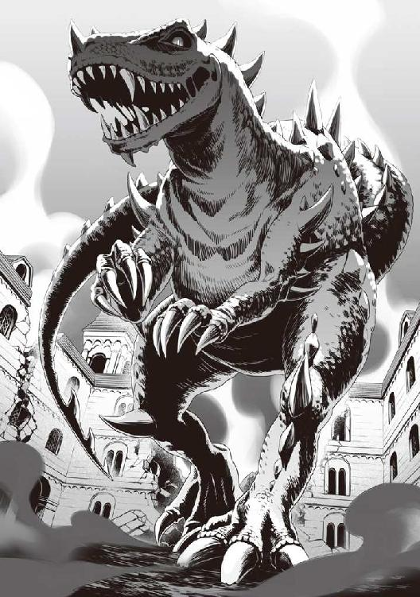
「全員一時撤退！ フィーロ、わかっているな!?」
「うん！」
フィーロが急いで中庭の扉の前に隠れていた優男とキールを背中に乗せて駆けてくる。
俺、ラフタリア、メルティは一心不乱に中庭を抜けて屋敷の出口へ逃げだした。
「ＧＹＡＯＯＯＯＯＯＯＯＯＯＯＯＯＯＯＯＯＯＯＯＯＯＯＯＯ！」
巨大な恐竜が暴れ出し、屋敷がいともたやすく破壊される。
「幾ら異世界だからって恐竜とかもいるのかよ」
今まで見なかったからいないとばかり思っていた。
だが、冷静に考えてみればドラゴンがいるんだから恐竜ぐらいいてもおかしくはない。
ドラゴンと恐竜ってカテゴリー的には近いしな。
「どうしてナオフミを倒すためだけにこんなことまでするのよ！」
「まったくだ。もう少し手段を考えろっての」
盾の勇者に敗北しないためには街一つ犠牲にしてもかまわないというのだろうか？
要するに盾の勇者に敗北＝死よりも辛いこと......どんだけ俺を憎んでいるんだ。
「早く！ このままじゃ追いつかれますよ！」
ラフタリアの言葉はもっともだ。
「フィーロ」
「なーに？」
「もっと大きくなって全員が乗れるようにしろ」
「ナオフミ、幾らなんでも無理なことを頼まない」
「いやいや、フィーロならできると俺は信じている」
「え？ できるのフィーロちゃん？」
「確かに......フィーロならできそうですよね」
優男とキールを乗せたフィーロが隣を駆けていくのだが......。
「えー......ちょっと無理ー、フィーロそこまで大きくなれない」
「そうか」
まあ、そうだよな。
「もっと大きくなったらできるかな？」
「どうだろうな」
未だに成長期なんだろうか？
「ほら、無理じゃない」
「できた方が良いと思わないか？」
「ＧＹＡＯＯＯＯＯＯＯＯＯＯＯＯＯＯＯＯＯＯＯＯＯ！」
メルティが後ろを振り返ってから俺の方を向く。そして何度も頷いた。
動く獲物だからか、恐竜は俺達を追いかけてきている。
話をしている場合じゃないな。このままじゃ恐竜の餌にされかねないぞ。
ドスンドスンと地響きを立てて追いかけてくるこの光景は......何かの映画みたいだ。
実際、あの重量で追われていると地震の中を走るかのように足元がふらつく。
なるほど、ああいう映画で転ぶ連中の感覚が今になってわかった。
走って逃げるだけでもこんなにも難しいのか。転んだら終わりだな。
今のところ、障害物である屋敷を破壊しながら追いかけようとしているお陰で逃げられるが、屋敷がなくなったらフィーロ以外は逃げられそうもない。
「どうする？ 戦うか？」
「ここで!? ここは街の中よ!? どれだけ被害が出ると思ってるの？」
「そうだが......」
勝てるかどうかはわからないが、逃げるだけじゃ解決しそうにない。
「まあ、避難なり誘導なりして人のいない所で戦うのは常識だよな」
ちょうど屋敷から出たところで、通行人が悲鳴を上げてパニックを起こした。
これって俺が現場にいることで盾の悪魔が起こした悪行とかにされてしまうのだろうか？
やばいな。錬と樹がちゃんと捜査していた場合、弁解できない証拠になる。
恐竜は獲物を見失ったとばかりに辺りをキョロキョロと見渡している。
混乱に乗じて撒いたとは思うんだが......なぜか恐竜は俺達の方を見ている。
いやーな予感。あ、名前が判明。タイラントドラゴンレックスって名前らしい。
恐竜の胸辺りが何か淡く光っていて、同様にフィーロの腹部も光っている。
「なあ......フィーロ」
「なーに？」
「お前の腹が光っているのと、あの化け物がこっちを見ているのに因果関係があると思うか？」
「んー......っとね。たぶん、あのトカゲはね。フィーロの事を狙ってると思うのー」
「じゃあフィーロ。アイツを誘導して街を出て行け」
「え？ ナオフミ、もしかしてフィーロちゃんの事を見捨てる気？」
「いや、そうじゃなくてあの化け物を人のいない地へ誘導して戻って来いとな」
「フィーロちゃんを狙っているんでしょ？ ずっと追いかけてくると思うんだけど」
「......そうだな」
フィーロの俊足なら大丈夫だと思ったんだが、さすがに囮にするのはダメか。
「やー！ ごしゅじんさまといっしょが良いー」
「ナオフミ様、さすがに無理を言ってはいけませんよ」
「そりゃあそうだが......」
「盾の勇者様は大変ですね」
他人事みたいに優男は言う。
「とにかく、フィーロを狙ってくるならコイツを人のいない街の外へ誘導してから戦うしかないだろ」
街中で戦ったらどれだけの被害が出るかわからない。
ここから一番近い出口は......うん、案外近いな。フィーロの足なら塀も越えられるし。
「というわけで俺達は街の安全のために奴を街の外へ誘導しようと思う。お前等はどうする？ できれば別行動したいが」
優男とメルティに尋ねる。
キールは意識がないから確認しようがないが、このまま連れていくのは不可能だ。
「私はこの子と一緒に逃げようと思っています......その前に避難誘導を致しますが」
「できそうか？」
「私の街から亜人の方々がいらしているようですし、問題ないと思います」
そう言って優男はフィーロから降りる。
「ここで見捨てるようになってすまないと思っている」
「いえいえ、私が勇者様の手を煩わせた所為でこんな事態になってしまったのです。お気になさらず」
「そうか、それなら良いが......メルティはどうする？」
「ナオフミ達に付いていくに決まってるじゃない」
優男の所の方が潜伏する上では良さそうではある。最初はその案でクズ王の元へ行けないか考えていたわけだし......結局こうして権力のある奴に捕まるとメルティの命が危ないため、俺達と一緒にいるのと大して変わらないのかもしれない。
「話は決まったな」
「う......」
キールが呻いて瞳を開いた。意識が朦朧としているのか、焦点が合っていないみたいだ。
ラフタリアに向けて弱々しく手を伸ばしている。
「キールくん。すごく大変な事態になってしまっているけれど、私達が引きつけるから、絶対に生き残ってね」
「ラフタリア......ちゃん。ダメだ。行っちゃ......」
「キールくん。大丈夫、私は、私のやるべきことをするために行くの。そして......あの旗を取り戻してみせるから、待ってて！」
と、ラフタリアは俺が昔作ってあげたブレスレットを外してキールの腕に通す。
「行きましょうナオフミ様、これ以上被害を出さないために」
「ああ......良いのか？ あの腕輪？」
「むしろ私がナオフミ様に聞くことですよ。申し訳ありません」
「いや、あれはラフタリアの物だ。どうしようと自由だ」
アレはおそらく、ラフタリアなりの約束を意味しているのだ。なら俺に言うことはない。
「キールくん。さよなら......」
「そんな、ラフタリアちゃ──」
「ＧＹＡＯＯＯＯＯＯＯＯＯＯＯＯＯＯＯＯＯＯＯＯＯＯＯＯＯ！」
タイラントドラゴンレックスの咆哮が耳を劈く。
俺達は駆け出していて、キールの言葉の続きが耳に入らなかった。
「じゃあ、行くぞ！」
「はい！」
「らじゃー！」
一斉に、それぞれ行動を開始した。
沈黙を破るように恐竜は動き出して俺達を追いかけ始める。
優男達の方は眼中にない。
俺達はフィーロの背中に乗り、街並みを通り抜け、塀を飛び越えたのだった。
「ＧＹＡＯＯＯＯＯＯＯＯＯＯＯＯＯ！」
タイラントドラゴンレックスは俺達をまっすぐ追いかけて、塀を破壊してきた。
月夜の草原を走る。後方には煙の立ち込める街。
うん。俺の所為じゃない。俺が悪いんじゃないと思いたい。
「やっぱりフィーロを追いかけてきますね」
「そうだな」
「ナオフミ、早く逃げなきゃ追いつかれるわ！」
「わかっている。フィーロ、もっとスピードを上げろ！」
街からできるだけ離れて戦いたい。
上手く戦えたとして、逃げられてその先に街があったら被害が増大しかねないからな。
そう思いながら巨大な恐竜を誘導する。
「そろそろか」
もう街が大分小さくなって見えるほど、距離は稼いだ。
「じゃあ、そろそろ戦闘に入るぞ。みんな、準備は良いか？」
「はい、いつでも戦えます」
「ナオフミ達と一緒にいたら命がいくつあっても足りなそうよ」
「フィーロもわかっているな？」
「うん、フィーロがんばる！」
「よし！」
俺の掛け声と共にフィーロは足を止めて振り返る。
タイラントドラゴンレックスは地面を揺らしながらこちらに向かってくるところだった。
口からは白い息を吐き出し、鋭い牙の間から涎まで垂れている。
あの口で噛まれたら、さすがの俺でも耐えられないかもしれないな。
食われてやるつもりはない。俺達はフィーロから降りて戦闘態勢に入った。
「ＧＹＡＯＯＯＯＯＯＯＯＯＯＯＯＯＯＯＯＯＯＯＯＯＯＯＯＯＯ！」
走ってきた速度のまま、俺達に向かって喰らいつこうとしてくる。
「させるか、エアストシールド！」
俺が噛みつこうとしてくるタイラントドランゴンレックスに向けて魔法の盾を出現させる。
昔、ドラゴンゾンビと戦った時の事を思い出すな。
あの時は割と戦えたから今回もどうにか、なるか？
ガツンと音がして、俺のスキルで出現した魔法の盾はいとも容易く噛み砕かれた。
ただ、若干の隙ができた。
「えーい！」
先制したのはフィーロだった。
思いっきりタイラントドラゴンレックスの顎に下から蹴りを入れる。
しかも鉄の爪を着けているからドラゴンゾンビの時よりも威力は向上している。
だが、フィーロの蹴りを受けてもタイラントドラゴンレックスはドラゴンゾンビほど仰け反っているように見えない。
「うわ......かたーい」
「気を付けろよ！」
フィーロは一度、蹴りを入れた隙を突かれてドラゴンゾンビに食われたことがある。あの時はドラゴンゾンビに牙がなく、内臓も腐っていたから助かったが、今回はそうはいかない。
「うん！」
蹴りを入れると同時に跳躍して距離を稼いだフィーロはその俊足のまま、タイラントドラゴンレックスの股下を駆け、腹部に蹴りを放つ。
前に戦った時よりも技術が向上している。
「ツヴァイト・アクアスラッシュ！」
メルティの魔法がタイラントドラゴンレックスに向かって放たれる。
高圧縮された水の刃が飛んでいった。
「でぇい！」
ラフタリアも急接近して剣に魔力を込めて切りつけた。
それぞれ、ザシュッと切れ味の良いような音が聞こえたが......相手が巨大すぎて、致命傷には程遠いようだった。
「ごしゅじんさま、足場！」
「わかった！ エアストシールド！ セカンドシールド！」
魔法の盾を二枚、タイラントドラゴンレックスの周囲に発生させる。
俺のスキルで作りだされた魔法の盾の出現時間は一五秒。正直に言えば短いと思う時間だが、動きの速いフィーロからすれば──。
「えい！ やあ！ とう！」
魔法の盾を足場にしてタイラントドラゴンレックスに次々と蹴りを放っては動き回る。
「ＧＹＡＯＯＯＯＯＯＯＯＯＯＯＯＯＯＯＯＯＯＯＯ！」
さすがに堪えたのかタイラントドラゴンレックスは怒りの咆哮を放って頭や尻尾を乱暴に振り回し始めた。フィーロは、その攻撃を受ける前に避けきっている。
逆に危ないのはラフタリアだ。
俺が前に出てタイラントドラゴンレックスの尻尾を受け止める。
「ぐ......」
「ナ、ナオフミ様！」
かなり重い。耐えきれなくはないが、尻尾の攻撃でこれだけ衝撃を受けるということは顎で噛みつかれたら耐えきれないかもしれない。
やばいな。
動きが鈍重だから辛うじて戦えている状況だけど、相手を倒せるほどの決定打が足りない。
フィーロが翻弄してくれているから良いが、そのフィーロでさえも決定打を与えられないとなるとラフタリアじゃ厳しいし。
メルティの魔法もそこまで期待できる威力ではない。現にフィーロをサポートするように援護射撃のように魔法を放っているが、致命傷には至っていない。
これが本当のゲームとかだったなら、どれだけ時間が掛かろうと体力を削っていけばいずれは倒せる......のかもしれないが、残念ながらゲームではない。
不利を悟ると魔物は逃げる。もちろん、逃げさせるのが吉かもしれないけれど、その逃げる先が人の住む街とかだったら最悪だ。
更に、尻尾の攻撃を受けた時わかったんだが、攻撃力が高い。俺以外じゃ耐えきれるか怪しい。
最悪、憤怒の盾に頼るしかない。あれならば耐えられるだろうし、反撃する能力がある。
憤怒の盾というのは、俺が持つ盾の中でも一番強力で、その分危険な盾だ。
俺のこの世界への憎悪によって出現した盾であり、ドラゴンゾンビによってフィーロが殺されたと思った時に初めて使った。
使うと俺の意識は怒りに飲まれ、暴れ出してしまう。
その所為で、俺を救おうとしたラフタリアに重度の呪いを掛けてしまった。
使うと強い力を得られる反面、代償が大きい盾だ。安易に使って良いものじゃない。
だけど、ここ一番という時に使わねば、生き残ることができなかったのも事実だ。
「大丈夫だ」
「はい......では行きます」
「気を付けろよ！」
「はい！」
ラフタリアがタイラントドラゴンレックスに向かって剣を振るう。
ただ、やはり結果は芳しくない。
フィーロも善戦しているが、それもいつまで続くか保証はない。スタミナだって無限じゃない。
タイラントドラゴンレックスのスタミナがどれだけあるかわからないが、間違っても俺達より少ないということはないだろう。
このままじゃいずれこちらの隙を突かれて、手痛い状況に陥りかねない。
......やるしかないか？
ドラゴンゾンビの核を入れた影響か、憤怒の盾はⅡにグロウアップを起こしてしまった。その影響か、ドラゴンゾンビの核を食べたフィーロが暴れ出すという事態に陥っている。
一か八かに賭けるしか......ない。
「ナオフミ」
「なんだ？」
メルティが前線にいる俺に話しかけてくる。
後方援護をしているからこそ見えてくるものでもあるのか？
「ちょっと、辺りの様子がおかしいのだけど」
「ん？」
メルティに言われて周囲を見渡す。
すると、遠くからグアグアと鳴き声が聞こえてきた。
なんだ？
辺りには蛍のような明かりが飛びまわり始めている。
「んー？」
フィーロが耳を澄ますかのように頭に翼を当てている。
「どうした？」
「えっとねー。すぐに行くからその場で待っててって聞こえるよ」
「誰が？」
「さあー？」
タイラントドラゴンレックスと戦っているうちに何が起こっていると言うんだ。
そう思っていると、タイラントドラゴンレックスも事態に気付いたのか、辺りを見渡している。
「ナオフミ」
「なんだ？」
「結界が張られてるみたい」
「結界？」
「うん。ナオフミも見えるんじゃない？ 遠くに霧みたいのが立ち込めているでしょ」
俺は遠くに目を向ける。すると濃霧のようにその先が見えない。
「あれは凄く高位の結界だと思うわ」
「なんだそれ？」
「迷いの森っていう伝説が息づく森があるの。そこには古の勇者の時代に集められた武具が眠っていると言われているわ。だけどそこには人を近寄らせない魔法の霧が立ち込めているんですって」
「よく知っているな」
「母上が伝承が好きで迷いの森に行ったことがあるの。その時の霧と全く同じものがあるんだもの。驚いたわ」
というとあれか？ 今ここで逃げ出しても逃げられないとかそんな奴か？
「あの霧に入るといつの間にか戻ってきてしまうの......きっと私達は何者かが張った結界に閉じ込められたのよ」
閉じ込められた......凄く不穏な空気だ。
ビッチやクズが暗殺者を遣わしてタイラントドラゴンレックスと戦っている俺達が死ぬのを待っている、なんて光景が頭を過る。
つまり、これで逃げ道がなくなったわけだ。
周囲を見る。草木が淡く不思議な光を放っている。
一体何が起こるんだ？
すると大量のフィロリアル達がこちらに向かって駆けてくるのが見えてきた。
辺り一面、フィロリアルだらけだ。この姿はトラウマになりそうだ。
「うわぁ......フィロリアルさんだ」
メルティが瞳を輝かせて喜んでいる。
このフィロリアル馬鹿が！ 喜んでいる場合か。
「ＧＹＡＯＯＯＯＯＯＯＯＯＯＯＯＯＯＯ！」
タイラントドラゴンレックスがその光景に咆哮を上げて攻撃を再開した。
く......。ここはやるしかない。
憤怒の盾に変えるために、盾に手をかざす。
『ダメ』
バキンと盾にかざした手を弾かれるような痛みを覚える。
見ると盾に淡い光が集まっている。
別に盾に手をかざさなきゃ変えられないわけじゃない。
俺は再度、憤怒の盾に変えようと試みた。
しかし......。
──干渉により、変更を阻害されています。
と、視界にアイコンが浮かび上がって、憤怒の盾に変えることができない。
ただ、残り時間が表示されているから、その時間を過ぎれば変えられるのだろう。
「だ、誰だ！」
聞き覚えのない声によって憤怒の盾に変えるのを阻止されてしまった。
俺の邪魔をするとは、どういう了見だ。
『大丈夫だから、待ってて。その力に......頼らないでも良い』
「く......」
「とー！」
フィーロがタイラントドラゴンレックスの顎に蹴りを入れてから着地、そのまま俺とラフタリアを担いでメルティの方まで逃げ出した。
「どうした？」
「え？ 下がれって言われたよ？」
俺には聞こえなかったぞ。ってさっきの声か。
フィロリアル達は俺達を囲んでいる。その数は数えきれないほどだ。
闇の中で光るフィロリアルの目が、数えるのも嫌になるほど存在を主張している。
一体何が起こったんだ？
考えられる可能性としては、フィロリアルの縄張り争い。タイラントドラゴンレックスを群れで狩るのだろうか？
それともフィーロが侵入したことによる、縄張り争いか？
フィロリアルの群れがまるでモーゼの十戒のワンシーンのように二つに分かれた。
「グアー！」
その先から一匹のフィロリアルがこちらに向けて悠々と歩いてくる。
姿は普通のフィロリアル、色合いは空色、なんとなくフィロリアル姿のフィーロと似ている。
大きさは高さ二メートルくらい。ダチョウのようなっていうのはフィロリアル共通の特徴だな。
ただ、フィーロに比べて羽毛が多めな印象を受ける。そして頭には目立つ冠羽がある。
桜色と白が基調のフィーロだけど、あのフィロリアルは空色と白。ただ、空色の部分が多い。
後ろには何か豪華な馬車を引いて......馬車の上に何か宝石が嵌っている。
なんか見たことがある宝石だな......どこで見たのだろう。
ふと盾を見る。すると馬車に施された宝石と同じ形の宝石があった。
「あ、あの時のフィロリアルさん！」
「知っているのか？」
「うん。ナオフミの所へ来る前に、出会ったフィロリアルさんなのよ」
「へー......」
なんか、群れのボスって感じで威厳があるな。
フィーロのようなだらしなさが無いな。
タイラントドラゴンレックスもその辺りを理解しているのか警戒している。
すぐにでも噛みつこうとしているようだけど、相手の出方を確認している感じでもある。
「わぁ......すっごいカッコいい。うらやましいー」
フィーロが目をキラキラさせて馬車を見ている。
俺は嫌だぞ。あんな成金馬車に乗るの。
あんなのに乗っていたら何を言われるかわかったもんじゃない。
「グア！」
馬車を引くフィロリアルを繋いでいた綱が勝手に外れ、フィロリアルが前に出てくる。
別のフィロリアルが馬車を後方に下げた。
「なんだ？ 何が起こるんだ？」
「グエエエエエエエエエエエエエエエエエ！」
馬車を引いていたフィロリアルが大きく鳴くと周りの植物が緑色に輝き、風が巻き起こる。
一体何が起こるんだ？
見ると馬車を引いていたフィロリアルが黒いシルエットになって膨れ上がっていく。
でかい......。
ぶくぶくと膨れるシルエット。おそらく、変身しているのだろうが、フィーロの変身なんて目じゃないほどの大きな変化だ。
最初の見た目は普通のフィロリアルだったのに、今では全長六メートルはある。
そして......タイラントドラゴンレックスと同じくらいまで大きくなったところで止まった。その姿は魔物の姿のフィーロと殆ど同じだ。
「わぁ......おっきい！」
メルティが興奮を隠し切れない様子で呟く。
白と桜色のフィーロと比べて、そのフィロリアル・クイーンは白と空色だ。
大きな違いはフィーロの頭に無い王冠のような飾り羽だろう。
「待たせた。勇者様と......フィロリアルを好きな女の子さん」
巨大フィロリアル・クイーンはさらりと喋ってからタイラントドラゴンレックスの方を向く。声音がフィーロによく似ていたな。少しトーンが低いか？
「しゃべった！」
「フィーロも喋るだろ」
「そうだけど！」
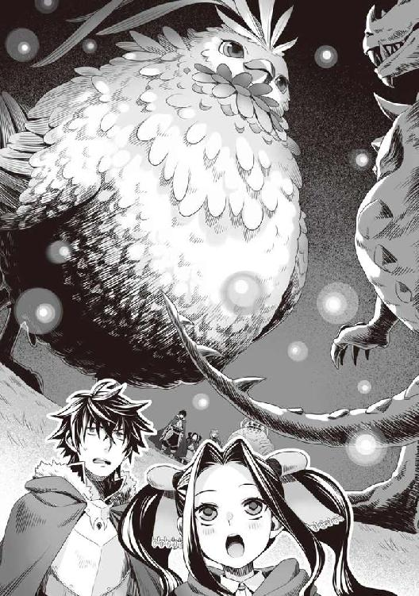
「ふわぁああ......おっきいねー」
「え、ええ......」
俺達が唖然としていると巨大なフィロリアル・クイーンは一歩足を踏み出してタイラントドラゴンレックスと対峙する。
「どうやら、竜帝の欠片が体質に合わず巨大化しただけの魔物みたい」
巨大フィロリアル・クイーンがタイラントドラゴンレックスに告げる。
「今すぐその欠片を渡すのなら、命までは奪わない。すぐに去って」
巨大フィロリアル・クイーンの声にタイラントドラゴンレックスは敵意を込めて咆哮する。
そのまま喰らいつこうと走り出した。
「しょうがない」
巨大フィロリアル・クイーンが足を上げて、タイラントドラゴンレックスを蹴る。
そう......あくまで軽く蹴ったように見えた。
なのにタイラントドラゴンレックスはまるで蹴られたボールのように吹き飛んだ。
ドスンと地に落ちたタイラントドラゴンレックスは震えながら立ちあがった。
そして一回転し、強靭な尻尾を巨大フィロリアル・クイーンの顔に叩きつけようとする。
「浅い」
パシッと軽く片翼で受け止められたタイラントドラゴンレックスは怒りの咆哮を上げて牙の生えた巨大な口を広げ、相手を噛み砕こうとする。
「てい！」
巨大フィロリアル・クイーンがその顎に向けて蹴りを加えた。
玩具のように後ろに一回転して地に伏すタイラントドラゴンレックス。
そこに巨大フィロリアル・クイーンは追いうちをかけるかのように脇腹を蹴り飛ばす。
あの巨体が......宙に浮いた！
「ていていてい！」
ゆっくりと跳躍した巨大フィロリアル・クイーンがタイラントドラゴンレックスに空中で連続蹴りをしていた。
なんだアレ！ ゲーマーな俺から見たらわかるが落ちないように連続コンボをしているぞ！
対戦格闘ゲームみたいだ。エリアルコンボという感じだ。俺の脳内でコンボ数がどれだけあるのか数えてしまうじゃないか！ ちなみに35ＨＩＴ！ と脳内で出た。
これだけでわかるほどの実力差......圧倒的なんじゃないか？
ドスンとコンボが終了し、地に落ちたタイラントドラゴンレックスはよろよろと立ちあがる。
そしてカッと、前方に巨大な魔法陣を出現させた。
「身の丈に合わない魔法を使うの？」
巨大フィロリアル・クイーンが構える。
タイラントドラゴンレックスが魔法を唱えたかと思うと、大きく息を吸い、巨大な炎を吐きだした。
やべぇ。その炎の熱量は、遠くにいる俺達にも伝わってくる。
まともに受けたら憤怒の盾でも危なかったかもしれない。
タイラントドラゴンレックスが吐きだした炎が巨大なフィロリアル・クイーンに向かって飛んでいく。幾ら巨大とはいえ、まともに受けたら丸焼けだ。
「ぬるい......」
巨大フィロリアル・クイーンは手のような翼を前に向けたかと思うと、巨大な炎を魔法の障壁のようなもので受け止めて弾く。
というかなんだこれ、怪獣大決戦か？ 完全に俺達が置き去りになりつつあるぞ、この状況。
「手短に終わらせる」
巨大フィロリアル・クイーンは両方の翼を前にかざして構える。
あれ......見覚えがあるぞ。
そう思った瞬間、巨大フィロリアル・クイーンの姿がぶれて、タイラントドラゴンレックスの背後に立つ。
うん。フィーロが使う切り札のハイクイックという魔法攻撃だ。
「ＧＹＡＡＡＡＡＡＡＡＡＡＡＡＡＡＡＡＡＡＡＡＡＡＡ─────！」
タイラントドラゴンレックスは何度も切り裂く音と共に粉々になって絶命した。
四話 伝説の神鳥
細切れになったタイラントドラゴンレックスの破片から光り輝く何か......いや、核石を巨大フィロリアル・クイーンは拾い上げてから俺達の方を向く。
「待たせた」
「......」
絶句するしかなかった。
フィーロでさえ碌にダメージを与えることができなかった巨大な化け物を、いとも容易く倒してしまった巨大なフィロリアル・クイーンの姿に。
「大きなフィロリアルさん......」
メルティが瞳を輝かせて見ている。お前はよくコロコロと表情を変えるよな。
俺相手じゃ何をしてもヒステリック、俺以外と話をする場合は礼儀正しくて気位が高く、フィーロやフィロリアル相手じゃ好奇心旺盛な歳相応の反応だ。
「盾の勇者様で良いんだよね？」
「あ、ああ」
すごく大きくて見上げることしかできないが、尋ねられた手前、答えるしかない。
仮に敵対した場合、戦って勝てる見込みはないし、勝てる未来が想像できない。
しかも先ほどのメルティの話だと結界のようなモノが張られていて逃げ出せるかもわからない。
相手がフィロリアルであることを考慮するとフィーロに乗って逃げるにしても追いつかれてしまう可能性が非常に高い。
「俺に何の用だ？」
「色々と話したいことがある。だけどこのような姿では失礼。少し待って」
巨大フィロリアル・クイーンは目を瞑って意識を集中したかと思うと少しずつサイズが小さくなり、やがて両翼で体を覆ったかと思うと......翼を開いた。
そこにはフィーロと同じくらいの背格好をした背中に羽の生えた女の子が立っていた。
髪の色は銀、少し空色が混じっている感じがする。髪型はショートボブというのだろうか？
ただ、頭の上に三本のアホ毛みたいのがあるのが印象的だ。
瞳の色は赤、フィーロに比べて覇気がないように感じる。
顔はフィーロに勝るとも劣らない整った作りをしていた。
服装は、白と赤のゴシックドレスっぽい。
人型フィーロの服は白と青だから、なんとなくフィーロと比べてしまう。
「じゃあ自己紹介から......世界のフィロリアルを統括する女王をしている、フィトリア」
ペコリと頭を下げるその動作が、口調に反して子供っぽい感じがした。
何だろう。人の姿で喋っただけなのに、無理して大人ぶっている子供のように見える。
「フィトリア!? ソレって伝説のフィロリアルの名前」
メルティが驚愕の表情で言う。
「そうなのか？」
「そうよ。過去に波が到来した時に召喚された四聖勇者に育てられたと言われる伝説のフィロリアルなのよ」
「過去ね......どれくらい前かは知らないが襲名とかじゃないのか？」
確か俺や元康達が召喚された時、古の時代に起こった波とか言っていたような覚えがある。
そこから考えるに、遥か昔の話でその伝説の人物本人......とかじゃないだろ、さすがに。
代々フィロリアルを統べる女王がそう名乗るような名前なんだろう。
じゃなきゃコイツは何歳だよ。
「今も昔も、この名前はフィトリア一人だけど？」
淡々と小首を傾げてフィトリアは告げる。
威厳っぽいのはあるんだけど所々でフィーロっぽいアホさがあるような気がする。
「じゃあお前は遥か昔から生きているとでも言うのか？」
「うん」
はっきりと言いやがるな。まあ、フィーロを見たら考えられなくもないか。
生まれて数日であそこまで大きくなったんだしな。
あの巨体になるまでフィーロが成長したら飯とかどうしたら良いだろうか。
そもそもただでさえフィーロの食費には困っているんだ。これ以上増やすつもりはない。そんなことになったらフィーロは捨てていくしかないな。
無論、フィーロに掛かった金銭を思えば実行に移せないが。
「なんかごしゅじんさま変なこと考えてるよね」
「ですね。あの顔は、関係ないことを考えている顔です」
「よくわかるわね。わたしは全然わからないけど」
「いずれわかりますよ」
外野がうるさいな。俺の考えを読むんじゃない。
「フィーロがあんなに大きくなったら捨てるしかないなと考えていた」
「ぶー！」
「捨てる!? なんてこと考えているのよ！ しかも少し前に大きくなれって無理難題言っておいて!?」
「限度を知れ。あんな巨体に食わせる飯代は無い！」
「ナオフミ様......さすがにすぐにあんなに大きくなるとは......」
「生まれて数日で大きくなったフィーロだぞ。二次成長したらああなるかもしれない」
「......」
「ラフタリアさん。なんで黙るんですか！」
メルティがラフタリアの手を握って注意する。
あり得なくないから怖いんだよ。
「......さすがにここまで成長するのには時間が掛かるので安心して」
申し訳なさそうに手を上げてフィトリアが俺達に答える。
「ああ、そうなんだ」
「普通のフィロリアルの寿命の数十世代分は時間が必要だから」
これは一安心。フィーロの二次成長で山のように大きく育ったら困るところだった。
しかし、それって遠回しにフィトリアはそれだけ生きていると言っていることになるんだが。
「では盾の勇者様一行......自己紹介して」
む......そうだったな。あっちも名乗ったのだから俺達も名乗らないといけないか。
「岩谷尚文だ。岩谷が名字で尚文が名前だ。盾の勇者であるのはわかるみたいだな」
「うん」
次にフィトリアはラフタリアの方に目を向ける。
「ラフタリアと申します。よろしくお願いしますね」
「よろしく」
「フィーロはフィーロって言うの」
間をおかずにフィーロが自己紹介をした。
フィトリアはフィーロをジッと見つめたかと思うと、メルティの方へ目を向ける。
「前に逢ったよね。フィロリアルが大好きな人、あの時は私を守ってくれてありがとうね」
「はい......メルティ＝メルロマルクって名前です」
「じゃあ、メルたんだね」
メルたん......酷いセンスだ。
俺の世界になんでも『たん』を付けようとする輩がいたが、そっちを想像する。
まあ、どちらかと言えば俺もその連中に分類される重度のオタクなんだけどさ。
「メルたん......よろしくお願いします」
ほら見ろ。メルティも困った顔をしているじゃないか。
「ぶー」
なんかフィーロがフィトリアからメルティを守るように前に立っている。
焼きもちか？ 仲の良い友達が他の友達と話をしているのが気に食わない感じか。
フィーロよ、そういう態度がやがて不仲の原因になってネトラレ、などと言われるんだぞ。
考えすぎか？ 俺のやったことのある伝説のトラウマゲーにあったシーンなんだけどな。
......このまま黙っているとなんかうるさそうだから話を進めさせよう。
「で？ あの恐竜みたいな大きな魔物......タイラントドラゴンレックスを倒してくれたことは礼を言うが俺達に何の用だ？」
「まずは経緯を説明するけど、それよりもこのような場所ではゆっくり話せない。案内するからこっちへ」
と、フィトリアは馬車を指差す。俺達を乗せてどこかへ連れていく気か？
「いや、その前に......」
「なに？」
フィトリアが小首を傾げる。
俺はタイラントドラゴンレックスの死骸に視線を送る。
すると事情を理解したのかフィトリアは眉を寄せる。
「ドラゴンに関係するモノを四聖勇者が武具に入れるのはイヤ......」
そういえばフィロリアルはドラゴンと仲が悪いんだったか。どうやらそれはフィロリアルの女王であっても同じ認識みたいだ。
だが知ったことではないな。俺は強さに関しては貪欲なつもりだ。
ましてやあれだけ強かったタイラントドラゴンレックスの素材を無視なんてできない。
「無理だな」
「......わかった。じゃあ眷属に持ってくるように命じておく。早く馬車に乗って」
「臓物の類も持ってくるのか？ フィロリアルは食い意地が張っているからな。骨とかだけだと困る」
「......どうぞ、好きにして」
「礼を言う」
「ナオフミ、せこいわ」
「どうとでも言え」
俺はバラバラになったタイラントドラゴンレックスの残骸を盾に入れる。
肉に骨、鱗、角、牙、その他臓物。これで新たな盾が解放される。
だが......どうやら解放するための条件、必要なＬｖが足りなくて、新しい盾を解放することができない。
確かにタイラントドラゴンレックスは俺達からしたらかなり強い分類だったからな。未だにドラゴンゾンビの素材でも新たな盾は解放されていないのだから当たり前か。
「準備は終わった？」
フィトリアが淡々とした口調で尋ねる。
「ああ......」
「さ、フィーロだったかな？ 貴方も人型になって馬車に乗って」
「えー、フィーロ乗るより引きたい」
「この馬車はフィトリアのだからダメ」
そこは譲れないのか、フィトリアは子供っぽく拒否った。
やはり偉ぶっていても根底はフィーロと一緒なのかもしれない。
「うー」
「フィーロちゃん。フィトリアさんにワガママ言っちゃダメよ」
「わかったー」
渋々フィーロは人型に変身する。
なんだかなー......そうして俺達はフィトリアが所持する妙に派手な馬車に乗せられた。
中は思いのほか広いな。しかし......馬車に乗って移動か。
周りにはフィロリアルの大群だ。下手に移動したら目立ちそうだ。
まあ、フィトリアが結界を張っているらしいから、人は近寄れないんだろうけど。
ここに俺がいることを元康が知ったら追いかけてきそうだ。
「ポータル──」
フィトリアが馬車の外で取っ手を掴んで何かを叫んだ。
その瞬間、辺りの景色が変わった。
「へ？」
「あれー？」
「な、なんですかこれ！」
「す、すごい」
なんだ？ とてつもなく凄い力を持っているみたいじゃないか。
「転移か？」
ゲームとかだと、あらかじめ定められた所に転移する移動魔法とかが存在する。
有名なゲームだと割とあるよな。この世界にもあるのか。
しかし......聞いたことがないとすると相当珍しい魔法なんだろう。
伝説のフィロリアル......確かにその片鱗を見せてもらった。
「ここならゆっくり話ができると思う」
俺達は馬車を降りて辺りを確認する。暗くてよくわからないが森の中のようだ。
森の中にある集落？ いや、遺跡の残骸か？
遺跡というか......崩落した廃墟を連想する。
城の跡地みたいに石垣が残り、所々に石造りの家がある。石垣や家は植物が侵食していて、根の深さを見ると、ずいぶん長いこと放置されているようだ。
その先はどうやら森のようだ。
青白い霧が掛かっていて視界が悪い。木々も生い茂ってはいるんだが、どの木も似たような形状をしていて、入ったら抜け出すことすら難しいかもしれない。
「ここは......？」
「最初の勇者が守った国の跡地といわれてる場所......らしい」
「凄く曖昧だな」
「フィトリアが生まれるより前の場所。いちおう管理してる」
「ここはフィロリアルの聖域なの？」
メルティが瞳を輝かせてフィトリアに尋ねる。
「半分当たり。フィトリアの本拠地は......あんまり人を連れてっちゃダメだから」
「そうなんだ」
「森だな」
「うん」
「ぼろーい」
「歴史を感じますね」
「ものは言いようだな」
ボロイと歴史を感じる......ラフタリアとフィーロの言葉だが同じ物を見た感想としては十分一致する。霧が濃くてよくわからないけどな。
というか案内って転移なのかよ。便利だな。帰りはどうするんだろうか？
「なあ、転移で連れてきてくれたんだったら帰りは頼んだ場所で降ろしてくれよ」
運が良ければ元康達を撒くことができる。それこそメルティの親である女王とやらの力を借りずに亜人の国へ逃げることもできるかもしれない。
「来たばかりなのに帰ることを聞くんですか？」
「あまり長居をするつもりはない」
「えー！」
メルティが不満の声を上げる。
なんだよ。そんなにフィロリアルと話をするのが好きなのか？
できれば手短にしたいんだがな。なんだかんだで俺達はお尋ね者だし。
「とりあえず......ゆっくり休むと良いと思う」
フィトリアが手を上げるとどこから現れたのか暗闇から薪を荷車に乗せたフィロリアルがやってきて、薪を組み、火を吐いて焚き火にする。
まあ、確かにここなら敵はフィロリアル以外はいそうもない。
そのフィロリアルだって、俺達を招いて休ませているのだから強く警戒する必要はないだろう。
夜も更けている、休みながら話をするべきだろうな。
「わかった。確かにあの場所で休むよりはこの場所で野宿の方が安全そうだ。じゃあみんなフィトリアの言う通り、休息を取るぞ」
「はーい！」
「なんか大変な一日だったわ」
「ですね......キールくん達は大丈夫ですかね」
「俺達が気にしたってしょうがない。避難誘導とかしてたら俺達が捕まるからな」
「はい......」
焚き火を前に俺達は思い思い休み始めた。
タイラントドラゴンレックスの余った肉を食事用に持ってきた。
調理機材を取り出して、適当に料理を始める。
幸い井戸の方はまだ使えるようで、水は確保できたからスープもできるな。
「じゃあ、適当に飯にでもするか」
と、俺は料理を作り、ラフタリア達に振る舞う。
「......」
たらー......っとフィトリアが人差し指を口に銜えて羨ましそうに見ている。
転移した所為で数は減ったが配下のフィロリアル共もだ。
......く、食いづらいな。
「あの......ナオフミ？」
「ナオフミ様、視線が多くて食べづらいです」
「俺もだ」
「んー？ そう？」
ラフタリアやメルティも同様に感じているようで周りをキョロキョロと見ている。
フィーロは我関せずといった感じでバクバクと貪っているけどさ。
「お前も食うか？」
「いいの？」
「あの巨体を維持するのに必要な分は無いぞ」
「大丈夫」
で、フィトリアを招いたのだけど配下のフィロリアル共がグアグア鳴き出した。
「静かにして」
フィトリアのツルの一声で周りのフィロリアル共が静かになるが、なんか威圧感のある視線で睨まれ続ける。
「おいしいね！」
「おいしい」
うわ。フィーロと殆ど変わらない顔で俺に言いやがる。二人揃っていると姉妹みたいだ。
まあ、色合いが違うから本当の姉妹じゃないけどさ。
メルティも一緒にいると幼女三人揃っているし、顔が良いから絵にはなる。
「ですよね」
ま、品という点で言えばラフタリアに軍配が上がるような気がする。
メルティも品はあるんだけど、本性がフィロリアルな二匹の食い方がちょっと汚い所為で同類に見えてしまう。
「なによ？」
メルティが不快そうに眉を上げて俺に尋ねてくる。
「別に」
「何か失礼なことを考えてた？」
「ノーコメントだ」
「ということは考えてたわね」
「そこの二匹の所為でメルティの品が悪く見えるなって思っただけだ。友達は選べよ」
「なんですって！」
ああもう、またうるさくなったな。
「まあまあ......それよりも私は......」
ラフタリアが羨望の眼差しを送ってくる周りのフィロリアル共に視線を返す。
うん、俺も気になって飯が喉を通らない。イラッとしてきた。
「ああもう、面倒くさい！ でかい鍋とか用意できないか！ そうしたら作ってやるから食えそうなモノを持ってこい！」
で、結局俺はフィロリアル共の不満を解消すべく、大鍋でスープを作って振る舞った。
それだけで数時間も掛かってしまった。
いつの間にかラフタリアやフィーロ、メルティは寝ているし、飯を作った所為で疲れた。
「ふう......」
なんで野生のフィロリアルに飯を奢ってやらねばならないんだと愚痴りながら片付けをしているとフィトリアが来た。
「なんだ？ おかわりは無いぞ」
「わかってる」
「そうか。で？ 何の用だ。できるなら明日にして欲しいのだが」
俺も少しは休みたい。
ん？ メルティの奴、フィーロを含め、フィロリアルに寄り掛かって幸せそうに寝ていやがる。
人を働かせておいて良いご身分だな。第二王女的には偉いんだろうが。
「そのつもりだったけど、ちょうど良いから話をしたい」
「なんだ？」
「封印された魔物がどんな経緯で解き放たれたのか知りたい」
「あ？ 事情も知らずに来たのか？」
「違う......フィトリアが来たのは新たなクイーン候補を見つけたと報告が来たから」
「クイーン候補......フィーロの事か」
フィトリアは頷く。
「一つ聞いて良いか？」
「なに？」
これはフィーロを育て始めてから常々思っていた疑問だ。
「フィーロはなんで、他のフィロリアルとは目に見えて違う育ち方をしているんだ？」
クイーン候補とフィトリアは言った。
つまり、その辺りの事情を知っていることになるだろう。
「それは勇者が育てたから」
やはりそうか。フィーロが他のフィロリアルと目に見えて違う、具体的には外見はもとより人の姿にも変身できるのは勇者である俺が育てたからなのだ。
「こっちは答えた。経緯を教えて欲しい」
「教えられる範囲がわからない。どこまで俺の事を知っている？」
「今回の終末の波に召喚された勇者、亜人排斥の国の信仰的敵......までは知っている」
「そうか」
これは、国内にいるフィロリアルとかからの伝達だろうか？
フィロリアル同士のコミュニティーがどれだけあるか知らないが、情報収集能力はそこまであるように見えない。
「フィトリアだって万能じゃない。むしろ忘れっぽい」
「自分で言ったら世話ないな。で、だ──」
俺はタイラントドラゴンレックスの封印が解かれる経緯をフィトリアに順を追って説明した。
そしてその関係で、俺が召喚されて、冤罪により国内で差別を受けて、今まで過ごしていたことも語った。
「......ふぅ」
フィトリアは呆れたような溜息をつきやがった。
「なんだよ」
「終末の波だというのに、愚かな争いを四聖勇者がしていると呆れてる」
「悪いのはあいつらだ」
「そこは興味ない。フィトリアはフィトリアを育ててくれた勇者の願いで戦っているだけ」
「......ふむ」
「フィトリアからすれば人間や亜人がどれだけ争おうとも関係ない。世界は人だけのものじゃない。だけど勇者がいがみ合うのは許さない。フィトリアの育ての親の願いを達成できないから」
「お前の育ての親がなんだって？」
過去の四聖勇者が何かフィトリアに頼んでいるのだろうか？
先ほどの会話から、どうやらフィトリアは人間や亜人の争いに介入するつもりはない様子だ。
「お前は協力するつもりはないが勇者ならば手伝うと言っているみたいだな」
「そう。フィトリアと人間じゃ長い時の中での争いになる。昔、それで争いになってフィトリアは関わり合いを持たないようにしたの。関わりを持つのは眷属のフィロリアルだけ」
長寿な化け物のようなフィロリアルを人間はどう扱うだろうか？
便利？ いや、自分達よりも強力な、理解できない化け物がいるのなら排除を考える。
そりゃあ最初は信仰だってするだろうがな。
権力にウンザリしたとか、そんな感じで眷属を率いて人のいない地を根城に行動しているとかか？ 野生のフィロリアルに化けて旅をしているのかもしれないな。
メルティが寝る前にフィトリアと出会った経緯を自慢げに話していた。
で、普通のフィロリアルが人間と関わるのを見守っているとかそんな感じなんだろう。
「四聖勇者は知らない？ 砂時計があることを。フィトリアは頼まれた所はやっているのに他の場所には四聖が参加してない」
「砂時計？ それなら知っているぞ」
「じゃあ、なんで世界中の波に参加しないの？」
......何だろう。凄く、イヤな予感がする。
他の国にも龍刻の砂時計があるのは知っている。
まさか......メルロマルク以外でも波は別計算で存在するとでも言うのか？
「知らんな」
タダでさえ一月に一回くらいのペースで波はやってくるんだ。
これが世界各地で起こっていたら身が持たないぞ。
勇者が参加しなくても良いように自衛することくらい覚えろと各国に言いたい。
過去の勇者はその辺りの補佐をフィトリアに頼んだのだろう。
だけど肝心の波で召喚された勇者達が満足に波に参加しないので抗議している......のか。
「俺は他の勇者と違って何も知らないで召喚されたんだ。そもそも何も説明されていない。他の国に龍刻の砂時計があることだって最近になって知ったくらいだ」
「......なるほど。わかった。じゃあ次の質問」
「なんだ？」
「盾に禍々しい痕跡を感じる。カースシリーズを使ってる？」
「よくわかるな」
さすがは伝説のフィロリアル。カースシリーズに分類される呪い......憤怒の盾を知っているのか。
「その力は確かに強力だけど、代償も大きくなる。やがてその力に飲まれるから使ってはダメ」
「だが、使わねば勝てない戦いもある。俺は制御できているから問題ない」
そう、憤怒の盾が無くては勝てなかった戦いがこれまでに何度もある。確かに代償は大きいが、それは、制御すればどうにかなるんだ。
俺にはラフタリアがいる。怒りは抑えきれるはずだ。
「本当に？」
「ああ」
フィトリアが俺の盾に手をかざし、目を瞑る。
「いずれその呪われた盾は盾の勇者の手に余る......呪われた盾と結合した竜の意識が盾に内包されている。自身を殺した相手の近くでこれ以上の使用は、盾の勇者の制御を超えかねない」
憤怒の盾は竜の核石を入れた所為でグロウアップしたんだ。
核石に宿っている竜の怒りが融合した？
だから強力になったとするならば、その竜が憎むべき相手は誰だ？
......おそらく、竜退治をした剣の勇者である錬であるはずだ。
フィトリアが言いたいのは錬の前で使うと憤怒の盾は更に強力になってしまい、その代償が酷くなると言いたいのだ。
少し前に錬と戦ったが、あの時は距離があった。錬も本気で俺に向かっていたわけじゃない。
だからこそ、何事も起こらずにいたが......錬を相手に戦った時、憤怒の盾が暴走して俺を乗っ取りかねなかったのかもしれない。
「それでも、この先の戦いを乗り越えていくのに必要なものだ」
危険は承知だ。だけど、使わないでいたら守れるものも守れなくなる。
俺は波を乗り越え、世界が平和になったら元の世界に生きて帰るつもりなんだ。
危ないから使うなと言われたって、使わねばいけない場面だってある。
「......わかった。次の話に移る」
「納得はしていないみたいだな」
コクリとフィトリアは頷いた。一時保留という......ことか。
「世界が波で大変だというのになんで勇者同士で争っているの？」
「俺が悪いんじゃない。あいつ等が、国が俺を排斥しようとしているんだ」
「ある程度は聞いた。それでも勇者同士は争う暇はない」
「ずいぶんこだわるな」
「フィトリアの役目は世界を守ること......だけど勇者がいなきゃ、フィトリアだけじゃ守れない」
あれだけの強さを見せておきながら、波から世界を救うことができない？
言ってはなんだが俺の知る勇者、元康、錬、樹の三人よりも遥かに強く見える。
それでも世界を救うことができない？
いや、できなくなってくるのかもしれない。
勇者にはそれだけの可能性が眠っているんだろう。
腐っても勇者ってことか。でなければわざわざ異世界から勇者を召喚する必要もないしな。
「正直、フィトリアは人間がどうなろうとも、どう争っていようとも関係ない。だけど勇者はダメ」
「なんでだ？」
フィトリアは無言で首を横に振る。
「もう......凄く昔のことで記憶もおぼろげだけど、勇者が今回の波で争い合っている。それだけは認めてはいけないのだけは覚えている」
悠久の歳月の末に忘れたと？
いや、元がフィロリアルなんだ。フィーロと同じく記憶力は期待できないのかも。
それでも覚えていることか。察することしかできないが、イヤな空気がある。
先ほどからフィトリアから妙なプレッシャーを感じるのだ。
間違いなく殺気だ。背筋が凍りつく感覚がある。
「フィトリアは覚えてる。もしも波で勇者が争っているのなら、世界のために四聖を処分し、再召喚させるのも必要なことだって」
これか。これをフィトリアは俺に伝えたかったのか。
あの勇者共と仲良くしなきゃ殺すと言っているんだ。そうしないと波を乗り越えられなくなる。
......伝説のフィロリアルがそう言うんだ。何か理由がある。
過去の勇者からの伝言とでも思うしかない。
だが──
「俺は悪くない。あいつ等が仲良くしようという意志がないんだからしょうがない」
そう、俺に冤罪を被せたビッチと俺を排斥しようとするクズ王、そして俺を擁護せずに弾劾した勇者共と国の連中。
その中で必死に金を稼ぎ、信頼を勝ち取ってきたのに、メルティ誘拐の罪を被せてお尋ね者にしてまで俺を殺そうとしている。
やってられるかと思う。メルティを母親である女王に引き渡せばメルロマルク国教である三勇教は致命傷を負うはずだけど、この事件が終わったら迷わず他の国に亡命する。
他の勇者と仲良くするなんて、無理な話だ。
「......そう」
諦めたかのような声を出し、フィトリアは殺気を散らせる。
「なら、しょうがない」
と、引き下がったフィトリアはそのまま夜の闇に立ち去っていった。妙に素直に引き下がったな。
イヤな予感がする。あのまま引き下がるようには見えない。
しかし、俺は......あの勇者三人を頼りにするなんてできっこないのだ。
五話 フィーロＶＳフィトリア
熱い......。
「「「グアグア」」」
フィロリアルの声が聞こえて、体中がもさもさする。なんだこれ？
起きたら、礼とばかりに俺だけフィロリアルに群がられていた。
「な、なんだこれ!?」
「あー！ ごしゅじんさまはフィーロのなのー！」
って、フィーロがよくわからない独占欲で他のフィロリアル共を追い払ってくれたけどさ。
「ふぁああ......」
目が覚めた時には昼を回っていた。
ここで昼飯を作ろうものなら昨日の夜と同じことになるのか？
「ねえ、伝説にあるグリフィンの王と戦ったというのは本当？」
「うん。戦った。正確にはグリフィンを元に人間が改造した化け物だけど......量産されて、その所為で空を飛ぶフィロリアルは絶滅したの。量産された危険なグリフィンは駆逐できたけど」
「じゃあドラゴンの王様を倒したのも？」
「倒したよ。バラバラに引き裂いても再生するから厄介」
「すごーい！ じゃあフィロリアルの聖域には伝説の聖剣が眠っているというのは本当？」
「四聖の剣があるのに伝説の剣？ たぶん違うよ。過去の勇者が残した武器は少しあるけど」
キラキラと目を輝かせて大興奮でメルティはフィトリアを質問攻めにしている。
反面、フィーロは顔を膨らませて焼きもちを焼いている。
微笑ましい光景だ。友情にヒビが入らないといいがな。
「さて、休憩も済んだ。この後はどうするつもりだ」
軽食を終えてから俺はフィトリアに尋ねる。俺達はこんな所で道草を食っている余裕はない。
フィトリアに頼めば女王と合流するべき国へ一発で連れていってくれそうだから交渉は必要か。
「そう......じゃあ」
立ちあがったフィトリアがメルティに向かって魔法を唱える。
それは風で作られた檻のようなものだった。
「な、何これ!?」
出ようと試みるメルティだけど、真空の檻で手を切って僅かに出血する。
「何するの！」
フィーロが敵愾心満載でフィトリアを睨みつける。
「メルたん。貴方には人質になってもらう」
「な、なんで」
「......」
フィトリアは答えず、俺達を見つめる。辺りの空気がピリピリしているのを感じる。
これは......昨日の続きをここでするつもりか!? 俺をここで処分し他の勇者共も殺す......考えを実行に移さんとしていると見ていいか。
「メルティちゃん！」
ラフタリアもメルティに呼びかける。
く......ここであの化け物フィロリアルと戦闘をすることになるのか？
一体どうして戦わねばならない？
確かに不穏な空気はあったが、俺が原因ではない。
こうなったら破れかぶれで憤怒の盾を使って戦うしかないのか。
「ダメ、呪いの力を使うのは」
バシンと俺の盾に光が纏わりつく。
知ったことか！ 強引に盾を変化させようと試みる。
──干渉により、変更を阻害されています。
と、視界に表示された。昨日の夜も似たようなことをしてくれたよな。
「まずは話を聞いて」
「こんな真似をする奴と話をする必要があるのか？」
「聞かなきゃ、勇者一行には死んでもらう」
「な......」
おそらく、できると思う。
それほどまでに現在の俺達とフィトリアには戦力的差がある。
タイラントドラゴンレックスに俺達は手も足も出なかった。
そのタイラントドラゴンレックスにフィトリアは赤子の手を捻るように余裕で勝った。
俺達とフィトリアが戦ったら？
おそらく、負ける。
「あいつ等と和解するのは無理な相談だ」
「何の話ですか？」
「勇者共と和解しなきゃ俺を殺すとアイツは言っていたんだ」
「あの方々と和解ですか？ それは......」
ラフタリアも眉を寄せて困惑する。だって碌に話が通じた試しがないんだ。できないことをできると言う方が失礼だろ。
「わかった......じゃあ」
フィトリアは指を一本立ててフィーロを指名する。
「盾の勇者が育てたフィロリアル、フィーロと一騎打ちをして、実力を認めたならメルたんを解放する。あと、猶予をあげる」
「なんの意味があるんだ」
「いずれわかる」
こいつは何をしたいんだ。
「フィトリアはこの姿で戦う。だからフィーロもこの姿で戦う」
人型で戦う？ これならば勝機があるかもしれない。
本当の姿になられては万に一つも勝つ可能性は無い。だけど弱い状態になる人型時なら可能性がある。幸い、フィーロは人型時でも武器になるものを所持している。
「わかったー！」
フィーロが背中の羽からパワーグローブを取り出して前に出る。
元々は武器屋の親父が用意してくれた俺が馬車を引くための道具だったんだけど、フィーロの魔力で変化を起こし、ツメのようになる。そのお陰で、前回元康達と戦った時には有意義な武器になった。だが......。
「おい。勝手に始めるな！」
「そうですよ、フィーロ。まずはナオフミ様の指示に従ってください」
「でもメルちゃんが！」
「戦わないなら、全員死んでもらう。選択の余地は無い」
「く......」
どうやらあっちは最初からやるつもりのようだ。
見ているだけしかできないというのは不服だ。アタッカーであるフィーロを仕留めてから次々と俺達を殺すとかそういう考えなのかもしれないが、拒否権は無い。
挑むしかないのか。
「......わかった」
「じゃあ、始める」
フィトリアが手を上げるとフィーロと俺達の間に風で作られた壁が出現し、フィトリアとフィーロの二人だけのリングが出来上がる。
「この中じゃ人型でしかいられない。ルール違反はできない」
「メルちゃんは絶対に助ける。フィトリアには負けないもん！」
見てることしかできないとはな......本当に危険なようなら、ルールを破ってでもスキルを放って妨害しよう。
「じゃあ、行くよ！」
フィーロがグローブに魔力を込めてツメ状態にし、フィトリアに向けて駆けだした。
「やっ！」
最初に攻撃を開始したのはフィーロだった。
高々と跳躍してフィトリアの腹に向けて足で蹴り上げようとする。
「キレが無い」
フィトリアはフィーロの蹴りを手で容易くいなして逸らす。
「わ！」
いなされて一回転するフィーロにフィトリアは追撃とばかりに手を握りしめて叩きつける。
「おっと！」
フィーロは体を反らして避ける。すると、地響きと共にフィトリアの足元にクレーターが形成される。どれだけの力を込めて叩きつけたんだよ。
「フィーロちゃん頑張れ！」
囚われたメルティが大きな声で応援する。
「負けない！」
フィーロはフィトリアに向けてツメを振るう。その瞬間、フィトリアの動きがぶれて見えた。
「遅い！」
「きゃん！」
殴打音が鳴り響いたかと思うとフィーロが仰け反った。
「な......なに？」
「あまりにも遅い」
「う......」
フィーロから普段は聞こえない呻き声が漏れ出す。
「すごく速い。でも負けない」
フィーロは手を上下に構えて駆け出す。......いきなり特技のあれをやるのか？
「はいくいっくー」
フィーロの体がぶれて、バシンバシンと音が響くが......。
「だから、遅い」
フィトリアがゆっくりと手を上下させて動き、腕を軽く一回転させた。
ただ、それだけなのに......。
「わああああああ！」
くるくるとフィーロが空中に撥ね飛ばされていた。
バサッと背中の翼を広げて空気を掴んで着地したフィーロ。
「フィーロの切り札が簡単にいなされたー」
「メルたんは友達なんでしょ？ 本気で来ないなら──」
腰に手を当てて、フィトリアはフィーロを挑発する。まるで、期待外れと言うかのような態度だ。
やがてフィトリアはメルティを閉じ込める檻を更に小さくする。
「わ──」
メルティは風の檻に少しでも体を切り裂かれないように体を縮めた。その様子を見たフィーロの余裕が消える。
「メルちゃん！ うー......」
翼を逆立たせてフィーロがフィトリアに向けて両手のツメを振りかざす。
フィトリアは避けもせず、身を守ることすらせずに立っていた。火花が散るが無傷でただ立ちつくしている。
すごいな。あのフィーロの攻撃を軽く弾くなんて......。
なんていうんだろう。俺達の中でも戦闘面では飛びぬけて優秀なフィーロが遊ばれている。
これが経験の差......Ｌｖもかなり差がありそうだな。
「じゃあ、今度はこっち！」
フィトリアがフィーロに反撃の拳を振るう。当たってはいない。かすってもいないようなのだが。
それだけでフィーロの服が破けた。
「その程度の魔力法衣で身を守れるはずもない」
そのまま何度も当てて何度も殴打する。
く......手を出せないこの状況をどうする？
魔力法衣？ フィーロの服は魔法屋にフィーロの魔力を糸にしてもらって作った服だ。
魔力で作られた服だから......魔力法衣か。
フィトリアの手から光り輝くツメが出現し、フィーロに向かって振りかぶる。
すると光の斬撃が出現してフィーロの頭の上を掠った。
「これがフィロリアルの姿だったら当たってた」
フィトリアが易々と言い放つ。
避ける暇もなく放たれた一撃だった。あまりにも速い。そして強力な攻撃。
「負けないもん！」
フィーロは再度、両手を上下させる。
『力の根源たるフィーロが命ずる。ことわりを今一度読み解き、かの者を激しき真空の竜巻で吹き飛ばせ』
「ツヴァイト・トルネイド！」
フィーロの手から竜巻が生み出され、フィトリアに向けて──
『力の根源たるフィトリアが命ずる。理を今一度読み解き、彼の者が作りだした真空の竜巻を無効化せよ』
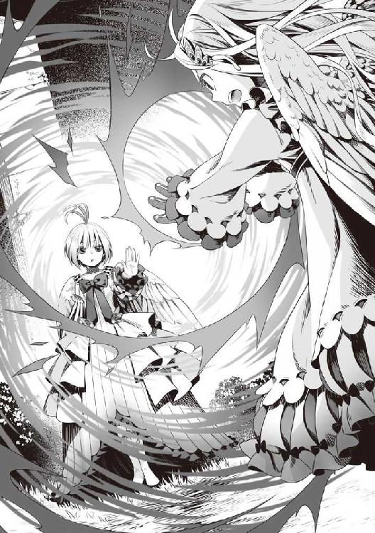
「アンチ・ツヴァイト・トルネイド！」
バシンと魔法で作られた何かがフィーロを囲むように現れ、フィーロの唱えた魔法がまるで何事もなかったかのように消失した。
「妨害魔法......」
えっと、確か初級魔法書に乗っていた現象だったな。
魔法の妨害。但し、論理上では可能だけど実行に移すには相手の本質を解析するだけの力が必要だとか。
魔法は唱えるごとにある程度パターンが変動するシステムらしい。そのシステムを解析、命中する前に相殺するだけの魔法を生み出さねばいけない。
上位魔法クラスとなると詠唱に時間が掛かって妨害も起こりやすいけど、中級では難しいはず。
「負けない！」
果敢にもフィーロはフィトリアに向けて走り出す。だが、このままじゃさっきと同じ結果になるだろう......フィトリアはフィーロの服を魔力法衣と言っていた。
......ここは防御という俺の専門分野だ。
元々、フィーロの服は魔力で作られた服だ。その服は魔力を込めることで修復される。
となれば考えられるのは......。
「待てフィーロ！」
「なーにごしゅじんさま？ フィーロ忙しい！」
「魔力で服を再生させるんだ。あと、服にもっと魔力を込めろ！ そうした方が、良い」
「うん、わかった！」
悔しそうに一旦距離を置いたフィーロが服に手をかざして修復させる。
フィーロの服が僅かに淡く輝いた。
おそらく、これで人型時のフィーロの防御力を向上させられる。
フィトリアはフィーロに高速で近づき、腕を叩きつける。
「ハッ！」
地響きが立つほどの強靭な攻撃をフィーロは両方の手で受け止めた。
「ぐ......重い......でも」
俺がさっき注意した通りに服に魔力を込めていなかったら耐えきれなかったんじゃないか？
重みを堪えたフィーロはフィトリアの腕を払いのけ、跳躍する。
フィトリアも隙ができ、フィーロはツメで切り裂く。
微かに風を纏っている。跳躍力が向上しているのだろう。
「てい！」
全身を使った攻撃がフィトリアに入った──。
かと思えた。しかし、
「ぬるい」
僅かに火花を散らすだけでフィーロの攻撃はフィトリアに碌なダメージを与えられなかった。
やはり、フィトリアの防御を突破することはできない。
やばいな。仮にフィーロが敗北した時、俺はどうするべきか？
フィーロが俺に何度か視線を送る。アドバイスなんて何度もできないぞ。
そう思ったが、どうやら違う。メルティと俺を交互に見ているのだ。
......そういうことか。
俺は無言でメルティの方へ近づいて、檻に触れる。
バシッと風の刃が当たる感覚があるが耐えきれそうだ。
ここで風で作られた檻を俺が破壊して、戦い自体の幕を引くことをフィーロは望んでいるのだ。
確かに、これだけの実力差があっては、勝てる見込みはない。
「メルティ」
「ナ、ナオフミ」
「少しジッとしてろよ」
俺が風の檻に腕を入れ、散らそうとしたその時。
いきなり空に向かって吹き飛ばされた。
「ズルは見逃さない」
次の瞬間、俺の胴に風の竜巻が飛んできて、腹を思いっきり殴打されたかのような感覚を覚える。
「グフ......」
俺の防御を易々と突破された!?
「ナオフミ様！」
「ガハッ！」
地面に倒れ込んだ俺は痛みに視界が歪んでいた。
く......腹を見ると鎧が歪み、内出血している。意識を集中して、回復魔法を唱えないとシャレにならない。鎧の方は......自動修復があるから直るけど......やばいな。
「ごしゅじんさま！」
「よそ見しない」
「むー......」
「......魔力消費した状態で戦えるの？」
「戦えるっ！」
「無謀な......では一撃で決める」
フィトリアがぶわっと背中の羽を逆立たせた。
「すぅううう......」
そうして一度深呼吸する。周りに飛んでいる何か......なんとなくだけど魔力要素をフィトリアは集めている。
あんなこともできるのか。
俺も上手く真似できれば良いんだが、普通の魔法すら簡単なものしか使えない今の俺では難しいだろう。昔から上手い奴のマネをするのは上達の近道と言う。
パクリとか脳内を過るが、突き詰めれば学校の勉強は大昔の偉い連中の真似をしているに過ぎない。
つまり俺達は物心が付くころから他人の物真似をして生きているわけだ。
うん。俺の実力が追いついた時にフィトリアの真似ができるように、覚えておくとしよう。
「フィーロもできるもん！」
同じくフィーロもフィトリアの真似をして魔力を集め始めた。
「......遅い」
ただ、既にフィトリアは魔力を集めきっていた。
高速で近づき、フィーロを何度も拳で殴打する。
「う......む......ぐ......」
両手をクロスさせてフィーロは防御の構えを解かない。
フィトリアは一度下がった後、飛び蹴りを放った。
「受け止められる？」
「むきゃあああああああああああああああああああ！」
フィーロが堪え切れず、錐揉み回転して飛んでいき、風の壁に当たって跳ね返された。
「ま、負けないもん」
ボロボロのフィーロが立ちあがり、再度魔力を集める構えをする。
「むー......」
やがて魔力が回復したのか構えを解き、次の動作に入る。
「はい──」
翼を上下に構えるフィーロ。姿勢を低くして両手のツメを前に出す。
後方に風の流れができているのが誰の目にも見えるほど、魔力が凝縮されている。
おそらく、フィーロが放てる一番の必殺技だ。
前提が厳しすぎる。あれは実戦で使えるものじゃない。
「くいっく！」
弾丸のように飛び出したフィーロがフィトリアに一直線に向かっていく。
ツメを前に、低空飛行で、回転をしながらの突進だ。今までで一番速い。
蹴りや切りつけが基本攻撃のフィーロにしては珍しい突きの一撃。
なんて言うのだろう。戦略ゲームとかで飛行機型のロボットの必殺技みたいな攻撃とでも表現すればよいのだろうか。
「へぇ......」
さすがのフィトリアも驚きに目を大きく広げた。
フィトリアの服をフィーロが切り飛ばす。僅かに、ほんの僅かに服が千切れた。
そのままフィーロはフィトリアの顔面にツメを振るった。フィトリアの顔を僅かに掠る。
フィトリアの頬に微かに血が滲んでいた。
フィーロの攻撃で飛んだ血をフィトリアは笑みを浮かべながら見る。
ここで俺は気付いた。ラフタリアに視線を向けると同様に頷く。
......フィトリアの奴、遊んでいる。絶対的強者の目でフィーロがどんな反撃をするのか見ているんだ。だから思いもよらない威力の攻撃を見て笑ったんだ。
伝説のフィロリアル。
言葉通りの存在なのだろう。フィーロが軽くあしらわれている。勝ち目のある相手じゃない。
到底勝てる相手ではないのは覚悟していたが、勝負にすらなっていない。
「むー......」
フィーロも不愉快に思ったのか不機嫌そうな声を出す。
「じゃ、次はこっちの番」
フィトリアが一歩踏み出してフィーロに素早く連撃を放つ。
速い！ 元々フィーロよりも遥かに動きが速いけれど、それを凌駕している。
ハイクイックのような見えないほどの速さじゃないけど、残像が見える。
「う......あああ！」
フィーロが堪え切れず宙を舞い飛んでいく。
その吹き飛んだ先に既にフィトリアは立っていて──
「はぁ！」
思い切り殴り飛ばして元居た場所に叩きつける。
「うぐ......」
その後、フィトリアは......フィーロの動きを待つかのように佇む。
フィーロは痛い部分に手を当て、魔法の光を放っている。回復魔法を唱えているかのように、傷が治っていく。ただ、威力はあまりない。応急手当ての域を出ない。
「う......」
フィーロは弱々しく、魔力を回復させ始めた。
「今に見てろー」
回復を終えたフィーロがフィトリアに向かって駆け寄る。
気の所為か、いや、気の所為じゃない。フィーロの動きが先ほどよりも速くなっている。
フィーロがツメに力を込め、フィトリアが放った攻撃を真似て放っている。
「はぁ！」
三つ放ったところでフィトリアの作った風の仕切りが揺らぐ。
「この程度？」
「あくう......」
......俺は先ほどからフィトリアの動きがまるでフィーロに戦い方を教えているようだと感じていた。だが、その攻撃自体に全くの遠慮を感じることができなかった。だから気付くのに時間が掛かった。
そう、これはあくまで試練だ。死ぬのもかまわない......そんな気概をフィトリアから感じる。
「ほら......早くしないとメルたんが大変なことになる」
フィトリアが手をメルティに向ける。
更に小さくなった檻がメルティの髪の毛の先を切り裂いた。
「きゃ！」
「メルちゃん！ うー......」
背中の羽を強く広げてフィーロが先ほどよりも速く、突撃技でフィトリアに向かっていった。
「たあああああああああああああああああああああああ！」
「うん......まあ及第点だったかな。これが最後......頑張って耐えきって」
片手でフィーロの突撃を止めたフィトリアが回転するフィーロを横から蹴り飛ばす。
「あきゅううううう！」
風の檻にまで突き飛ばされ、それさえもぶち破ってフィーロは吹き飛ばされた。
ゴロゴロと転がり、ボロ雑巾のような格好で地に伏している。
俺はフィーロの元に駆け寄る。
するとフィーロは制止するように手を出し、ふらふらなまま立ちあがった。
「まだ......フィーロは、負けてない」
俺が手助けすると反則負けだと語るように、震える体で立ちあがり、必死の形相で一歩踏み出そうとしている。
その姿は今にも倒れてしまいそうで、それでも負けることは許されないという気概を見せている。
「ここで負けたらメルちゃんを取り戻せない！」
「フィーロ......」
「フィーロちゃん！ もう良いの！ もう良いから」
「やー......フィーロは、メルちゃんを守るの」
と、言い切ってフィトリアによろよろと近寄り、既にグローブに戻っているツメで殴りかかる。
「やあああああああああ！」
それは、とても弱いモノだった。だけど、何よりも強い意志があった。
フィーロの拳がフィトリアの腹に刺さる。
「......」
だが、それはフィトリアを倒すには至らない。
「うん。もういいよ。十分」
そう言って倒れるフィーロをフィトリアは抱きとめ、メルティを閉じ込めていた風の檻を消し去った。
「フィーロちゃん！」
「メル......ちゃん」
「大丈夫、死んではいない」
フィトリアがフィーロに向かって魔法を唱える。
するとフィーロの傷がみるみる治っていき、服も完全に修復された。
「あれ？」
そしてすぐにフィーロはフィトリアの手を払ってファイティングポーズを取る。
「もう終わった」
「終わってない！ フィーロがメルちゃんを守るの！」
「うん。メルたんは......大丈夫だよ。ほら」
フィトリアがメルティを指差してフィーロの元へ行くように指示する。
メルティは恐る恐るといった様子で何度もフィトリアの方を見ながらフィーロの隣に立つ。
「わかった？ もう試練は終わった」
「試練？」
「ちょっとね。フィトリアにも事情があるの」
「そう？」
警戒しつつ、フィーロはフィトリアの話に小首を傾げながら答える。
先ほどまで争っていたのに、緊張感の無い奴だ。
「フィーロ。お前な、試されてたんだよ」
俺はラフタリアと一緒に近づいて補足する。
「そう......だけど試練を乗り越えられないようなら戦う前に言った通りにするつもりだった」
と、フィトリアはそっと答えた。
なぜこんなことをしたのかはわからない。だけど、フィトリアとの戦いを経験したお陰でフィーロは人型でも戦う術を身に付けた。
「フィーロ。戦う相手は考えなきゃダメ。人間相手にフィロリアルの姿で戦うっていうのは、大きな的になるようなモノ」
「そうなの？」
確かにフィロリアル姿のフィーロは大きい。素早く動いて避けられるといっても、相手が相当の腕前だったら当てられかねない。
しかもフィロリアル姿のフィーロの攻撃は蹴りを中心にした手段しかない。
魔法とか突撃とか色々と手段がないわけじゃないが、それは相手を考えないといけないんだ。
フィトリアはフィロリアルの姿だけで戦うということに警鐘を鳴らしている。
戦闘中にモードチェンジして戦えたら？
つまりフィトリアはフィーロに戦い方に固執するなと注意し、戦う術を教えていた。
「これはフィトリアの試練を乗り越えた証......」
と言ってフィトリアはフィーロにティアラを出して見せた。
「なーに？ それ」
「試練を乗り越えた報酬、頭を下げて」
「フィーロちゃん、こうやるの」
メルティがスカートの裾を摘まんで会釈する。
おお、なんだかんだで王女をしているメルティだ。様になっているじゃないか。
「こう？」
「そうそう」
フィトリアの前で会釈したフィーロの頭に、フィトリアはティアラを載せる。
「フィーロ、貴方にフィトリアの第一継承権を与える」
「継承？」
「フィロリアルを統治する次期女王の権利を得たってことだろ」
「えー......」
「フィーロちゃんすごーい！」
メルティが大興奮でフィーロを褒めたたえる。本人は嫌そうな顔をしているけど。
そしてフィーロが頭に載せていたティアラが光り輝いた。
まるではじけるように光は四散し......。
フィーロの頭にアホ毛が一本、ぴょこんと立ちあがった。
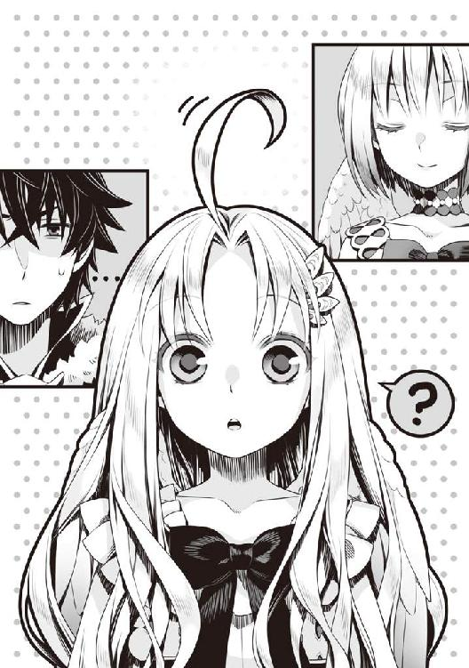
「......」
俺とラフタリアは沈黙する。
あれが褒美？
「え？」
「フィーロちゃん可愛い！」
メルティは何か興奮気味にフィーロを褒め称えているけど......当人は何が起こったのかわかってない感じだ。
メルティ、そのセンスは無い。
待てよ。根っからのオタクである俺的にはアホ毛を萌え属性として捉えるべきなんじゃ......。
しかし......風に揺られてひらひらと舞うフィーロのアホ毛。
うん、無いな。
「何があったの？」
「えっと......」
俺が頭を指し示すとフィーロは恐る恐る自身の頭の輪郭に触れる。
「なんか変なの生えた！ やー！」
フィーロは悲鳴を上げながらぴょこんと伸びたアホ毛を力強く掴む。
ブチン！
「い!?」
思いっきり引き抜きやがった。
フィーロは凄いな......めちゃくちゃ痛そうだ。
「いたーい！」
痛がりながらもアホ毛を抜いてご満悦のフィーロ。
ピョコン。
しかし、抜いたその場からアホ毛が新たに立ちあがった。
「また生えた！」
「ええ!?」
フィーロの奴、なんか涙目で数回、自分のアホ毛を抜いたけど、幾ら抜いても立ちあがるので諦めたように項垂れる。
気持ち悪いな、あのアホ毛。
「幾ら抜いても生えてくるから諦めて。成長する度にその毛は増えていくから」
「えー......そんな風になるのー......」
フィトリアの頭に生えている三本のアホ毛。
一体何の意図で伝説のフィロリアルがフィーロにこんなものを渡したのか......。
ふとフィーロのステータス画面を確認してみた。
......前見た時より能力が向上している。
おそらく、あれは補正能力を付与する加護か何かだったのだろう。
Ｌｖの上がらない状態のフィーロには良い褒美だ。
「あと、盾の勇者にも......」
「ん？ 俺にもか？」
フィトリアは俺を指差してクイクイと手招きする。
いや、待て。このまま近付いたら俺までアホ毛にされるんじゃないか？
「アホ毛はいらないぞ」
「アホ毛？」
説明はしない。教えたらうるさそうだし。
「もっと良いものだから。怪我も治す」
「うーむ......」
何を寄越すかしらないが、変なものだったら嫌だなぁ。
とりあえず拒めそうもないので、近づく。するとフィトリアは俺の腹部に手を当てて回復魔法を唱えてくれた。まだ回復しきってなかったからジワリとした痛みがあったが、今はもう痛みはない。
「盾を出して」
フィトリアは俺の盾を指差して上にするようにジェスチャーを取る。
「こうか？」
盾を上に構える。するとフィトリアはアホ毛を抜いて盾に乗せた。
盾が大きく反応して吸い込む。
フィロリアルシリーズが強制解放されました！
「は？ 強制解放？」
ツリーを確認するとフィロリアルと名の付いた盾が明るくなっている。
大抵の装備ボーナスにフィロリアルの基礎能力向上が付いていて、能力補正、成長補正（大中小）、成長の細かいステータス補正（大中小）と被らない項目が開いている。
あと、目立つのは、騎乗時能力向上（大中小）系統か。フィーロの背に乗ると戦闘力が上がるんだろうな。
ただ、俺自身のＬｖが足りなくて変えることのできない盾も多数存在する。それでも解放された扱いになっていて、条件さえ満たせれば良いようだ。
フィロリアルと付いた盾は全部、条件を満たしたということと思って良さそうだ。
「一応、礼を言う」
「どういたしまして。だけどまだ盾の勇者にだけ話すことがある」
「何をだ？」
「二人だけの時に話す」
何とも変わった褒美をくれたものだ。
というかあのアホ毛にはフィロリアルの力が凝縮されているのか？
今はフィーロのＬｖが上げられないから良いことだと思っておこう。
「あ、あの......」
メルティがフィトリアにおずおずと恥ずかしそうに声を掛ける。
「何？」
「フィーロちゃんを試すためだったんだよね？ 利用してたわけじゃないよね」
「うん。メルたんも何か欲しいものない？」
「えっとね。大きなフィロリアルさんになって頭に乗せて！」
若干興奮気味にメルティは頼み込む。
「......わかった」
呆気に取られていたフィトリアだったが、メルティの頭をポンポンと撫でると、大きくなった。そして優しく抱擁して微笑んだ。何とも懐の深いことで。
「わぁ......」
そして願い通り、メルティを頭に乗せる。
「高い高い！」
大興奮のメルティ。
「盾の勇者達、もう少し下がって」
「ああ」
言う通りに下がる。
すると......一八メートルくらいまで大きくなった。
どれだけ大きくなれるんだよ。もはやビルだ。
「すごいすごい！」
メルティの声が遠くで聞こえる。あんなに高くても良いのか。
というか、このフィロリアル、どれだけ大きくなれるんだ？
いや、元々あの大きさで、変身してフィーロと同じ背格好だったのか。
「はぁ......」
ウットリとしたメルティが声を漏らした。
「夢みたい......」
「夢だったら良かったな」
ドラゴンでさえ倒せそうなフィーロを玩具のように扱うあの強さ......果てしないな。
「さて、今日はまだ始まったばかり、もう少しゆっくりしていって欲しい」
「まあ......俺の行きたい場所に連れてってくれるなら良いのだけど」
「......それに関しては後で話すからゆっくりしていって欲しい。配下の者達も歓迎する」
「「「グア！」」」
「えー？ 新たな女王の誕生を祝ってってフィーロの事？ 勝手に決めないでよー！」
「おめでとう！ フィーロちゃん！ あははは、フィロリアルさん達嬉しそう！」
フィロリアル達が集まってフィーロ達をかついで行く。
「わ、私もですか!?」
ラフタリアも一緒だ。
なんていうのか。異世界に来て、浦島太郎になったような気分だ。
フィロリアルの用意した聖域で祭りのような一日に付き合わされた。
さながら竜宮だな。ここから出た時に何年も経過していたら、俺の疑いは晴れるのだろうか。
六話 神鳥の安らぎ
そんな夢みたいな一日が更け、ラフタリア、フィーロ、メルティはフィロリアル達が用意した巣ですやすやと寝息を立て始めた。
フィトリアは昨日の夜のようにまた、一人で起きていた俺に声を掛ける。
「何の用だ？」
「昨日の続き......」
「しつこいな。無理なモノは無理だ」
だが、今日の昼間、俺達に向けた殺気は本物だった。フィーロのお陰で、辛うじて許されているというのは言わなくても俺には伝わった。
何せ、あのフィーロを赤子のように扱ってしまえるくらいの強さを持っているのだ。四聖が全員、束になって挑んでも勝てないくらいの強さを持っているだろう。
「本当に仲良くしようと......したの？」
フィトリアに尋ねられて俺は黙りこむ。ここで考えないと殺されるのだろう。
......元康は俺を完全に悪と決め付けている。だけど、錬や樹はどうなんだろうか。
メルティ誘拐疑惑で一度戦った後は遭遇していない。
どこにいるのかもよくわからないけれど、別れる間際にこの事件が怪しいのではないかと睨んでいる節はあった。
「疑いを晴らそうとしたの？」
俺は碌にそのことをしていないのに気付いた。
特にビッチに関する強姦疑惑は、怒りが先行しどうせ信じないと思いこんでしまっている。
冤罪だと主張しても信じてもらえなかった。だから俺は奴らを信じない。
だけど、証拠を提出したらあいつ等の認識はどう変わる？
あまり話すような仲じゃない。この世界のことを碌に知らない俺を無一文で追い出した連中に譲歩するようなことをしたくない。
あいつ等の頭の中はきっとよく知るゲームの中で俺ＴＵＥＥＥＥをしたいだけだ。
そんなあいつ等の思考を俺は理解できないのか？
否、俺が異世界に来た当初の事を考えろ。
俺が考えていたことでもあるからだ。ここで、錬の思考を想像してみよう。
ビッチが強姦しようとしてきたと騒ぎたてる。錬はビッチの事をよく知らないが美人だと思っている。
犯人だと思わしき男の意見と被害を主張する女の意見......どっちを信用する？
俺だったら......何も知らなきゃ被害を主張する女の意見を汲み取る。
元の世界で聞いたことのある事件に似ているな。
混雑している電車の中で突然『この人痴漢です！』なんて腕を掴まれて叫ばれた男。
実際は痴漢なんてしていなくても周りはその男を痴漢として警察に突き出すだろうし、仮に冤罪だったと証明されても被害者の男は社会的地位に傷が付く。
俺がビッチにハメられた一連の事件はこの話に酷似している。
「ふむ......」
怒りが僅かに解けるような錯覚を覚えた。
俺が知らないように錬や樹は俺の事を知らない。それは元康だって変わらない。
まあ、元康は女の事しか考えていないような奴だけど。
この事件の切り口を一つ見つけた気がする。
錬達は今回の事件を調べてくれているのだと想定すると、もし遭遇したならば話をする価値はある。
もしも......次に機会があったら試してみよう。
うまくいけば......表面上では和解することは可能だ。
もちろん、ビッチとクズ王を痛い目にあわせた後だろうが。
「前に話したことを覚えてる？ ここから出た時にどこへ連れていくか」
「ああ」
「フィトリアは四聖の勇者が近くに居る場所に降ろすつもり」
「お前もついてくるんだよな？」
あれだけの強さがあるのならこの状況を打破することだってできる。
何より、勇者同士の和解を要請しているんだ。これくらい聞いても良いだろう。
「これ以上、フィトリアは関わらない。関わるだけの価値があるかを見せて欲しい」
「ワガママな奴だな」
「それだけ、今の四聖に価値を見いだせない。あくまでフィーロに期待したに過ぎない」
完全に上からの目線であるが、世界のためにと思っているのならば、争い合う勇者を殺して再召喚するのも一つの手......か。
冷酷だと言えなくもない。
だけど、それくらいしなきゃ世界は救えないのだという気概を感じる。
......もしかすると俺──じゃないな、俺達勇者が考えている以上に世界は危機的状況にある？
「それに、フィトリアはやることが多い」
「何をするんだ？」
「波から世界を救う。なにも人のいる場所にだけ波が起こるわけじゃない」
「人のいない地にも砂時計はあると？」
フィトリアは頷く。これは知りたくなかった。人里だけじゃないのかよ。
「フィトリアの担当はそんな場所。できれば手伝って欲しいけど、まずは強くなって」
つまりフィトリアは余裕があるうちに俺達と接触して、試練を課したのか。
この先を乗り越えるのに見合う人物であるか。乗り越えられないなら殺すと言っているんだ。
厄介な問題を突き付けられたぞ。ここじゃ逃げることも叶わない。
「できるならちゃんと話し合いをして。世界は勇者を仲たがいさせるほどの暇はない」
「まるで勇者同士は争うことが多いのが前提のような言い方だな」
「長い年月で何度も見た」
「......わかった。できる限り善処しなきゃいけないんだろ？」
「他にも覚えて」
「なんだ？」
「四聖が一人でも欠けた状態で波が来ると、それだけ波が厳しくなる。それなら波の無い時に四聖を全員殺して召喚し直した方が世界のため」
くっ......これも知りたくなかった。つまり勇者が一人死ぬ度に世界に負担が掛かるのか。
そして四聖は全員死んだ状態なら再召喚できる。厄介な話だ。
話し合いをしろと言ってはいるが、うまくいかないと殺されるな。
どんだけ面倒な命令をこのフィロリアルの女王はするんだ。
俺が考えているとフィトリアが立ちあがって振り返る。
「......何度目の波の後かわからないけれど、世界が全ての命に犠牲を強いる時がくる」
「......」
「勇者はその戦いに参加するか、選択を迫られる。フィトリアはその時を待っている」
「選択？」
「人々のためか世界のためかの二択。もしも他の勇者と仲良くできない、使命を放棄したいのなら、それまで生き残って。その時、世界のためを選べば多大な犠牲こそあるけれど使命は果たせる」
「人々のためを選ぶとどうなる？」
「......茨の道、だけど過去の勇者はその道を選んで欲しいと願っていた。だけど今のままじゃ無理、盾の勇者一人じゃ乗り越えるのは難しい」
「むう......お前はどこまで知っているんだ？ 詳しく教えろ」
「フィトリアも忘れていることが多い。だけど、覚えてる。世界を救うのと人々を救うのは別」
世界と人々は別？
フィトリアの感覚だと人間がどうなろうと知らないと言っている節がある。ならば世界のためとは何だろうか？ 波の事を指しているのはわかるがその先はわからない。
とにかく、来るべき時がある。
波の最後がそれなのかもしれない。その時に俺は何を選ぶのだろう。
人々のためと言われても、戦う義理はない気はするがラフタリア達のために、きっと戦う道を選ぶ気がする。
「だからそのためにも、他の勇者とは協力して」
「善処するとしか言いようがない。それに見合うかわからないが報酬は貰ったからな」
フィーロのパワーアップと新しい盾。これだけあるのなら言うことを少しは聞いても良い。
「試練は乗り越えられた。フィトリアは盾の勇者を他の勇者よりは評価はしている」
「なぜだ？」
「新たなクイーン、フィーロを育てた盾の勇者が悪人の筈はない」
「俺は悪人だ」
思わず出てしまった。
だって......年端もいかない女の子奴隷を購入し、自分の手足として戦わせているんだ。
間違っても善人ではない。
「......」
俺の沈黙にフィトリアは夜空を見上げてから呟く。
「そういうことにしておく。だけどフィーロによって首の皮が繋がったのを忘れずにいて」
今日の試練、もしもフィーロが合格でなかったら、フィトリアは俺を殺すつもりだった。
実際、それだけの実力がある。俺も負傷した。
「......わかった」
「盾の勇者は、ちゃんと勇者達と話ができるだけの力はあるとフィトリアは思っている。それに、あまりにも......四聖が弱い。このままじゃフィトリアが手を下さなくても、遠からず死ぬ」
「そんなにも、この先の戦いは厳しいのか？」
「うん。そして、どうしても......あの盾を使わないといけないのなら──」
フィトリアが俺の鎧に手をかざす。
ふわっと何かが軽くなる感覚を覚えた。
蛮族の鎧に付けている竜の核石が陰陽道のタオみたいな宝石の形になった。
蛮族の鎧＋１？（神鳥加護）
防御力アップ 衝撃耐性（中） 火炎耐性（大） 風耐性（大） 闇耐性（大） ＨＰ回復（微弱） 魔力上昇（中）
敏捷上昇（中）魔力防御加工 精神汚染耐性 自動修復機能
「これは？」
「呪いの盾の侵食を抑える。それでも......抑えきれるものではないからできる限り使わないで」
「期待しないでもらいたいな。勇者同士で話をするというのもな」
「お願い......」
その日、フィトリアは一番の笑みを俺に向けながら寄り掛かった。
「重い、どけ」
だが、フィトリアは一向に退く気配がない。
「......」
無言でフィトリアは俺に寄り掛かっていた。
その姿はなぜだろうか、今にも泣きそうな子供に見えた。
なぜ？ という疑問が最初に頭に浮かぶ。
次に理由を考えた。フィトリアは勇者に育てられたと言っていた。
その勇者は今どこにいる？ 元の世界に帰ったか、もしくは遥か過去に寿命で亡くなっている。
......フィトリアは俺を育ての親代わりみたいに感じているのか。
しょうがないな。
フィトリアの頭を撫でる。するとフィトリアはギュッと俺に強く抱きついてきた。
フィトリアにとって、過去の勇者との約束が唯一の生きる希望......なのかもしれない。
世界を守る約束が......長い年月を生きる活力か。
なら使命に対してやる気なのも頷ける。
悠久の歳月の中でどれだけ人間と関わりを持ってきたのだろうか。こんな世界だ。騙されて絶望することもあっただろう。だからこそ、勇者以外は信用していないのか。
すごく不器用な子供だな。威厳があるように見えるのは、本人が頑張っているからなのだろう。
こんな子供に仲良くしろと頼まれたら断るのは難しいじゃないか。
少しくらい、頑張ってみようと思う。
やがてフィトリアは、フィーロとよく似た寝息を立てて俺に寄り掛かったまま眠り始めた。
......フィーロもいずれ、俺が去った後、同じように次の勇者に俺を重ねてこうして抱きつくのだろうかと考えているうちに、俺も眠くなってきて、眠るのだった。
「お世話になりました！」
メルティとフィーロが元気よく手を振る。
翌朝、フィトリアがそろそろ出発した方が良いと言って、馬車に乗るように指示した。
そして馬車に乗るとフィトリアはフィロリアルの聖域からタイラントドラゴンレックスと戦った草原に転移して俺達を降ろした。他の勇者がこの近くに来ているのか？
「なあ、他の勇者は近くに居るのか？」
「近くに反応がある......」
と、フィトリアは馬車を見つめていた。なんだか怪しい返答だ。
その後、フィトリアは普通のフィロリアルの姿に変身し、翼を上げて手を振った後、走り去っていった。
「なんか不思議な体験でしたね。ナオフミ様」
「そうだな。じゃあフィーロ」
「うん」
ちなみにフィトリアがフィーロにちょっとしたプレゼントを用意してくれた。
それは荷車だ。木製の荷車で、あまり質は良くないけどさ。
色々と厄介になった。それだけ面倒事を押し付けられたが。
フィーロ曰く、俺が購入したのが気に入っているが、今はしょうがないと妥協してくれた。
フィロリアル・クイーン形態になったフィーロが荷車を引き始める。
「出発だ」
「はい！」
「おー！」
「頑張ろうねフィーロちゃん！」
随分と脇道に逸れたが、目的地は南西の国境だ。
「もう少しだというのに......」
今、俺達の視界には国境を見張る石造りの砦......関所があった。
見張りが砦の上で辺りを監視している。
行き交う人々はそんなにいない......関所にいる見張りが馬車の積み荷をチェックしている。
「まったく、妙に監視が厳重だな」
「わたし達がいるからでしょ？ 北東の関所よりは兵士が少ないから良いじゃない」
「そうなんだがな」
なぜか、元康が関所前にいる。放火魔も一緒だ。
もっと別の場所にいろよ。お前は俺の話を聞かないだろ。
とは思うが、俺の思い込みの所為で会話が成立していないのかもしれないとフィトリアに言われたばかりだ。
まあ当人であるビッチがいるから会話にならないかもしれない。
だけどここは正面から挑まないと抜けられそうにない。
フィーロやメルティ、ラフタリアの話なら少しは聞いてくれるかもしれないと淡い期待をしておこう。
ここから更に迂回すると、それだけ日数が掛かるし......目的地は目の前でもあるんだ。
何より、元康だ。今までだってどうにかなったじゃないか。もしも会話が成立しなくても関所を突破して行けば良い。
そう──強行突破だ。
「メルティ、ゴールが近いんだ。悪いが関所を強引にでも突破するぞ。まあ、その最中に元康と話をするがな」
ピーチクパーチク騒ぎそうだけど、念は押しておこう。
「わかったわ」
「ん？ どうしたんだ？」
「何が？」
「印象が悪くなるからやめろとか言うかと思った」
「......」
サッとメルティは視線を逸らしてバツが悪そうに呟く。
「あんなことをしちゃうほど、国が荒れているなら荒療治も必要よ」
アレか、盾に負けるくらいなら封印された化け物の封印を解いて街を滅ぼしたって良いとか思うあの領主の事を言っているんだな。
メルティは決断力があるんだな。これは好印象だ。
このまま逃げ続けるくらいなら正面突破して被害を減らすのも手だ。
「よし、じゃあ行くぞ！ 準備は良いか？」
「万全です」
「フィーロ、体が軽いよ」
「わたしも全力で行くわ」
「......よし！」
俺が手を上げるとフィーロが荷車を強く引いて走り出した。
そのまま関所に突撃する。
「盾の悪魔が現れたぞ！」
相変わらずご挨拶な連中だな。
こっちは妥協して話をしようと考えているのに、これだ。
フィトリアに言われて考えを改めたが......間違っていたんじゃないのか？
「車止めを展開させろ！」
関所の扉の前に尖った杭が何重にも絡んだ車止めが設置される。
荷車でこれを越えるのは厳しい。
それでもフィーロは速度を緩めない。
「来たな！」
元康がこっちに向けて槍を構える。
お前はフェミニストだからな。フィーロに手など出せないだろ。
そう思ったところで、元康の槍が輝く。
「マイン！」
「はい！」
ビッチが魔法を詠唱する。
「ツヴァイト・ファイア！」
「エアストジャベリン！ そして──」
マインの唱えた魔法を追いかけ、元康がスキルで生み出された光り輝く槍を俺達に投げつける。
「合成スキル、エアストファイアランスだ！」
炎の槍が俺達に向かって飛んできた。
やばい！
俺は咄嗟にフィーロの背中に飛び乗ってスキルを唱えた。
「エアストシールド！ セカンドシールド！」
スキルで作りだされた盾が元康の放ったスキルを受け止める。
しかし、完全に威力を殺しきれず炎の槍をフィーロは荷車から飛び出す形で避け、ラフタリアはメルティと手を繋いで荷車から脱出した。
あの元康が何の遠慮もなくスキルをぶっ放してきた？
しかもなんだそれは。魔法とスキルが合わさって合成スキルになるのかよ。
アレだ。魔法剣とかそういう類の攻撃だ。
今までやってこなかったのは手加減していたからなのか？
「いきなり何をするんだ！」
逃げる前に話くらいはしようと思ったが問答無用で攻撃するとか。
「マイン！」
「わかっていますわ！」
ビッチな王女が兵士共に視線を送る。
するとバチバチと俺達を中心に魔法で構成された檻が現れる。
「キャ!?」
「なーに？ これ？」
「な、なんだ？」
大きさは四〇メートル四方。かなり大きな雷で構成された檻だ。
魔法......なのか？ それとも何かしらの道具で作られたモノか？
「やっと見つけたぞ、尚文。絶対に逃がさない」
「元康......」
してやったりとでも言うかのような表情で元康が俺達を睨みつける。
なんだ？ 普段の元康にある軽い雰囲気がない。
「ナオフミ、これは確か捕縛の雷檻っていう魔法道具だったはずよ」
メルティが檻の方を見て教えてくれる。
「設置型の罠で、術者と対象を閉じ込めるの」
「術者もか？ この罠は何が目的なんだ？」
「対象を逃がさないことを目的としてる」
なるほど、俺達がフィーロの脚力に頼って逃亡を図るから逃げられないようにしたわけか。
「わたしでも壊すことはできるけど、ちょっと時間が掛かると思うわ」
「罠を正しく解除させる方法は？」
「道具を使用した相手から鍵を奪えば......」
俺はフィーロから降りて元康を睨む。
「戦うのですか？」
「その前に交渉するつもりだが、そうなりそうだ」
ラフタリアも剣を取り出して構える。
「ラフタリア、お前は防具が心もとない。できれば下がっていてくれ」
「ですが......」
「フィーロが戦う？」
「そうだな。戦うことになったならな」
元康は何だかんだで美少女に弱いからな。先ほどは遠慮なく攻撃してきたが、避けることを前提にしていたのかもしれない。
「メルティは檻を壊せないか？」
「やってみるけど......期待しないでね」
「じゃあラフタリアはメルティを守りながら様子を見ていてくれ」
「はい！」
俺はみんなを代表して歩き出し元康に声を掛ける。
「元康、話を聞け」
フィトリアに注意されたから、なのかもしれない。
元康は何も知らされず、ビッチな王女に騙されている。
そうでなければ、ラフタリアを助けようとか思わないはずだ。
元々考えが軽いだけで、本気で俺を嵌めようと思っていたわけじゃないと仮定しよう。
「洗脳の盾で俺を洗脳するつもりだな！」
まったく、コイツは未だに洗脳の盾が実在すると信じてしまっているのか。
むしろこの考えなしの方が洗脳されているんじゃないかと疑いたくなる。
しかしこいつは槍の勇者。俺が異世界から召喚される時に読んでいた本である四聖武器書を参考にするなら槍の勇者は仲間想いということになる。
仲間想い＝仲間を疑わない。
そしてコイツの後ろにはビッチとクズ王がいる。盲目的に仲間を信じるなんて実にバカな奴だ。
「モトヤス様、早くメルティと、盾の悪魔に洗脳された者達を救うのです」
ビッチに至っては火に油を注いでいる。どこまでも心が醜い女だ。
「前回のように手加減はしてやらねえからな」
「......それはこっちの台詞だ」
思えば異世界に召喚されて二日目と一ヶ月目に元康には辛酸を舐めさせられてきたんだ。
ここらで一矢報いるのも一興か。
って、またこのパターンかよ。学習しろ、俺！
「とにかく話を聞け、勇者同士で争い合っている場合か？ 錬や樹はどうしたんだよ。お前だけしか追ってこない理由を考えないと完全に道化だぞ！」
俺が悪だと思うのなら、俺を追ってこない錬や樹を話題に出そう。
そうすれば元康も何かがおかしいと思ってくれるかもしれない。
「殺したくせに......俺は絶対にお前を信じない！」
「は？」
殺した？ 何を言っているんだ？
錬と樹を殺す？ 俺達が？ どうやって？
「おい元康、何を言っているんだ？ 殺したってどういうことだ？」
「そうやって錬や樹を騙して殺したんだな！」
「は？ どういうことか説明しろ！」
「とぼける気だな！ 俺は聞いたんだぞ！ お前が近くの街に封じられた魔物を解き放った後、錬や樹を不意を突いて殺したって！」
俺達がフィトリアの聖域にいた頃、メルロマルク国内ではそんな事件が？
考えられるのは事件の強引さに疑いを持ち、調査していた錬と樹を都合が悪いから消した。
クズの王か三勇教の連中かはわからないが、罪を俺に擦り付け、元康に囁いた奴がいる！
「誤解だ！ 気付け、俺が錬や樹を殺す理由がない」
「うるさい。俺はお前を信じない。もはや遠慮なんてしない！ たとえ女の子を盾にしようとも錬や樹のためにも手を汚してみせる！」
......ダメだ。話が通じない。元康の中では錬や樹を殺した犯人が俺だと確定してしまっている。
くそ、先手を打たれた。
フィトリア、すまないな。どうやらこの国の連中は世界の事なんてどうでも良いみたいだ。
世界の危機とやらに立ち向かうための四聖勇者はもう二人だけになったらしい。
元康のこの様子じゃ、俺を殺さない限り納得しないだろう。
だけど俺は死ぬわけにはいかない。
俺は盾をキメラヴァイパーシールドに変化させて元康に向かって構える。
元康はビッチ、そして女二人の仲間がいる。更に関所から兵士がやってくる。檻のお陰で入ってくることができないみたいだけど、それだけ逃げづらくなる。
対してこっちは俺とフィーロが前線に立ち、メルティは罠の解除、ラフタリアは守りに入らせている。
「みんなの仇、討たせてもらう！」
「自分が道化であることを知りやがれ！」
良いだろう。今は前とは違う。
メルティは戦えないが、俺にはラフタリアとフィーロがいる。
盾が本気を出せる状況ならば、負けはしない。
いざ、尋常に......どちらが強いかをここで見せつけてくれる！
「「うおおおおおおおおおおおおおお！」」
俺達は各々の未来を懸けた戦いを始めた。
七話 盾と槍の戦い
「フィーロ、お前は元康を──」
戦闘が始まると同時にフィーロに指示を出す。
女であろうと遠慮しないと決断した元康はフィーロにも殺気を放って、槍を構えている。
『力の根源たる次期女王が命ずる。森羅万象を今一度読み解き、彼の者等に炎の雨を降らせ！』
「ツヴァイト・ファイアースコール！」
随分と傲慢な詠唱をしたビッチが炎系範囲魔法を放ってくる。
「ナオフミ！ フィーロちゃん！」
『力の根源たるわたしが命ずる。理を今一度読み解き、彼の者等に降り注ぐ炎の雨を妨害せよ！』
「アンチ・ツヴァイト・ファイアースコール！」
メルティが檻の解除を行う前に、ビッチの詠唱した中級魔法を相殺する。
しかし、完璧に相殺しきれず、俺達に向けて火の雨が降り注いだ。
辺りが一瞬にして火の海になった。幸い、前線にいた俺とフィーロにしか直撃はしていない。
「そう何度も、モトヤス様を蹴らせたりしませんわ」
ビッチの奴、本気で俺達に向かって魔法を唱えやがった。
メルティも魔法は得意なんだろうが、相手が悪い。
ビッチとではＬｖという大きな差がある。
「フィーロ、大丈夫か!?」
「うん。大丈夫ー」
火の雨を受けてもフィーロはダメージを受けていないようだ。
俺は......まあ、波の時に騎士団から魔法の洗礼を受けても無傷だったわけだし、痛くも痒くもない。
『力の根源たるわたしが命ずる。理を今一度読み解き、恵みの雨を降らせよ』
「ツヴァイト・スコール！」
メルティが自身とラフタリアを守る雨を降らす。
「さあ！ モトヤス様は盾の悪魔に意識を集中してください！ 鳥は私達が魔法で近づけさせません」
ビッチは配下と共に魔法の詠唱を始めた。
「いっくよー！」
詠唱を気にせずフィーロは元康に向けて駆け出す。
「待てフィーロ──」
むやみに突撃したら何が飛んでくるかわからない！
「ウィング・タックル！」
風で作られた大きな塊が元康を蹴り飛ばそうとするフィーロに向かって飛んでいく。
「ほ！」
ボフンと人型になったフィーロがグローブを即座に手に嵌めてツメにして元康に切り掛かる。
「く......」
元康が槍を立ててフィーロの攻撃を防御した。
なるほど、フィトリアとの戦いで人型時での戦闘方法を学んだのか。だから避けられる。
「行くよ！ たあああああああああああ！」
フィーロが素早くツメを元康に向けて振りかぶる。まるでネコ科の戦い方のようなヒット＆アウェイ。敏捷なフィーロ独自の戦い方だ。元々は強靭な足による力技が常だったのに、フィトリアから教わった戦い方でここまで成長したというのか。
「ごめんね、フィーロちゃん！」
元康がフィーロに向けて槍を構えてスキルを放つ。
「流星槍！」
させるか！ 俺はフィーロを守るように前に出て盾を突き出す。
元康が高らかに跳躍したかと思うと槍が光り輝き、俺達に向かって投げられる。
槍の形をした、エネルギーで構築された攻撃が俺に降り注ぐ。
「ぐう......!?」
一番防御力の高い盾の部分で受ける。
ずしんと体の奥に響くような重い一撃が盾を通じて俺に降りかかった。
全身の骨がミシリと嫌な音を立てる。いきなり必殺技とか何考えているんだ。
まあ、現実の戦いだったら出し惜しみなんてする必要もないか。
「どうだ！ まだまだいくぜ！ 乱れ突き！ 昇竜槍！」
連続でスキルをぶっ放す元康。俺のキメラヴァイパーシールドの専用効果、蛇の毒牙なんて目もくれず撃ち込んでくる。
くそ......Ｌｖが高いからって調子に乗りやがって！
「マイン！ みんな！」
「はい！ ツヴァイト・ファイア！」
「「ツヴァイト・エアーショット！」」
「炎と風、そして俺のスキルによる合成スキル！ エアストバーストフレアランス！」
「ぐふ......」
防御しきれなかった所から激しい痛みが走る。
蛮族の鎧に火耐性と風耐性が無かったらどうなっていたかわからないな。フィトリアが加護をしてくれたお陰だ。
血が吹き出ているのが見なくてもわかった。
回復魔法を......かける余裕を元康は与えてくれるつもりはないようだ。
「シールドプリズン！」
盾の檻が元康を中心に展開される。
「大風車！」
槍をブンブンとバトンのように振り回し、出現した盾を元康は、薙ぎ払う。
く......攻撃力が俺の防御力を大きく上回っていて止めることができない。
これでスキルのクールタイムが無くなったらまた連続でスキルを放ってくる。
さすがに防戦一方では勝機は無いにも等しい。
「ごしゅじんさま！」
フィーロが腕を交差させて元康に駆け寄る。
「邪魔をしないでくれ！」
元康がフィーロの腹に向けて槍の柄の部分を当てる。
その前に俺は魔法を唱えた。
『力の根源たる盾の勇者が命ずる。理を今一度読み解き、彼の者を守れ！』
「ファスト・ガード！」
ガツンと音を立てて、元康の手加減した一撃はフィーロの腹部に刺さることなく跳ね返された。フィーロはフィトリアとの戦いで人型時の服に高い防御力を宿せるのを知ったからな。
俺の援護魔法も合わさって、相当硬くなっている。
「馬鹿な！ 硬い！」
「フィーロ負けない！」
その隙を逃がさず、フィーロは元康に切り掛かる。
「厄介な、だが俺も引くわけにはいかないんだ！」
攻撃を避け、反撃する元康にフィーロはバックステップして魔法を唱える。
『力の根源たるフィーロが命ずる。ことわりを今一度読み解き、かの者を激しき真空の竜巻で吹き飛ばせ』
「ツヴァイト・トルネイド！」
『力の根源たる次期女王が命ずる。森羅万象を今一度読み解き、真空の竜巻を霧散せよ』
『『力の根源たる私が命ずる。理を今一度読み解き、真空の竜巻を霧散せよ』』
「「「アンチ・ツヴァイト・トルネイド！」」」
フィーロの魔法も三人がかりの相殺によってただのつむじ風になる。
更にフィーロは意識を集中させる。俺は元康の腕を掴んで動きを止めた。
「放せ！」
「誰が放すか！ フィーロ！」
「うん。はいくいっくー」
フィーロは高速で移動し、俺が捕まえている元康の背後に立つ。
「ぐ......」
ザシュザシュと何度も音が鳴り響いて元康を切り裂いた。
「この程度で勝てると思うな！」
俺の拘束を解き放ち、槍を回転させて俺の顔を目掛けて突いてくる。
速い！ 首を横にずらして避けたが、危なかった。
「は！」
「うわああああ！」
ラフタリアによって檻の中にいた一人の兵士が切り倒された。
兵士共が隙あらばラフタリアとメルティに向けて攻撃しようとしているがこの二人だって馬鹿じゃない。身を守ることくらいできる。だが、それもどこまで持つか......。
どうする？ 元康さえ倒せれば切り抜けられそうではあるが、ビッチ達が邪魔だ。
ジリ貧だ。俺の体力が尽きるのが先かビッチ共の魔力が尽きるのが先かで結果が大きく変わる。
「ん!?」
ビッチ共......魔力を回復させる魔力水を飲んでいる。
やばいぞ......これじゃあ、あの魔力水が切れるまで俺は耐え続けなければならなくなる。
「なかなかやるじゃないか。その力で錬や樹を殺したんだな！」
「だから違うと言っているだろうが！ 話を聞けっての！」
スキルを放って息を切らす元康。こっちはかなりのダメージを受けてるよ！
血が体から滴っているのを感じる。
「それにこの強さは、情報通とは違ったタフな育ちをしているからだ。お前のような異世界万歳俺ＴＵＥＥＥをしたいわけじゃねえ」
これまでこの世界に来て、色々と試行錯誤を繰り返してきた。
強くなるためには手段を選んだつもりはない。解放できる盾の装備ボーナスは貪欲に埋めてきたつもりだ。それでも......負け職では勝てないのか？
「無礼者！」
「なんだ!?」
元康の気が逸れた。ビッチの叫び声だったのだ。俺も元康の見ている方角に目を向ける。
元康の仲間の一人の肩に魔力剣が突き刺さっていた。
おお、これで奴等は魔法を使いづらくなったぞ。
ラフタリアが防戦一方になっていた俺達のために援護してくれたのだ。
メルティの方は......檻の破壊をこなしつつ、近寄ってくる兵士を魔法で撥ね飛ばしている。
だが、それでも近寄ってくる兵士がいる。
「第二王女！ 覚悟！」
「メルちゃん！」
「ぐあああ！」
メルティが対処しきれない状況にフィーロがフィロリアル・クイーン形態に戻って兵士共を薙ぎ払う。ハイクイックほどじゃないが素早く動いている。フィトリアとの戦いのお陰だ。
「ナオフミ様とフィーロにだけ注意を向けすぎて隙だらけです！」
「この！」
仲間をやられてビッチが剣を振りかざしてラフタリアに切り掛かる。
「前にも剣で戦い合いましたよね。貴方は私に勝てません！」
キンと音を立ててラフタリアはビッチの突きを受け止めて弾く。
うん。かなり善戦している。後はメルティがこの檻を破壊してくれることを祈ろう。
「マイン！ く......」
元康がビッチの方へ駆け寄ろうとするのを俺が阻む。
「聞け、元康。全てはお前の周りにいるビッチな王女と三勇教の陰謀だ。錬や樹を殺したのは俺達じゃない」
「信じられるか！ どけ！」
何度も会話を試みるがやはり元康に聞く耳はない。仲間想いなんて言うが裏を返せば盲信しているようなもんだ。頭が固くて信じない相手の言葉は耳に入らない。
どうする。俺に攻撃手段は無いし、フィーロに攻撃してもらうにしてもメルティを守るために離れてしまっている。もちろん、呼べば来るだろうが......。
「ナオフミ様！」
ラフタリアが尻尾を膨らませながら俺を呼んだ。それだけで何を伝えたいのかわかった。
なるほど、さっき見本を見せてくれたのは元康だもんな。
俺はビッチの元へ駆け寄る隙を探っていた元康を敢えて通し、同時にラフタリアと呼吸を合わせる。
『力の根源たる私が命ずる。理を今一度読み解き、姿を隠せ』
「ファスト・ハイディング！」
意識を集中させた瞬間、俺の視界にスキル名が浮かび上がる。
なるほど、こうするのか。
「ハイディングシールド！ チェンジシールド！」
「マイン達に何をするんだ！ パラライズスピア！」
元康がラフタリアに向けてスキルを放つ......が。
「何!?」
ラフタリアの目の前に突然、盾が出現した。
そう、これが俺とラフタリアの合成スキル。
ハイディングシールド。見えない魔法の盾を作りだすスキルみたいだ。
その盾をチェンジシールドでカウンター効果のある盾にする。
俺が変えたのはソウルイーターシールド。カウンター効果はソウルイート。
「ぐあ！」
ソウルイーターシールドが元康に食らいつき、魔法の玉となって俺に飛んでくる。
「ＳＰが吸われただと！」
やはりそうか。ソウルイーターシールドのカウンター効果は相手のＳＰを奪う。
元康のＳＰがどれほどのものかはわからないが、これである程度は戦えるはずだ。
「ナオフミ様を弱いと思わないことです」
ラフタリアはそう言うとハイド・ミラージュで姿を隠して移動する。
「どこだ！」
「モトヤス様！ お任せを」
ビッチがラフタリアの潜伏魔法を消そうとしたが、既にラフタリアは十分距離を取っている。
「舐めやがって！」
今度は俺に向かって元康がイノシシのように駆けてくる。
「喰らえ！」
元康が安堵する俺に向けてスキルを放つ。確か、このモーションは流星槍だったはず。
強化された鎧によって良くなった動体視力なら......行ける。
俺は光り輝く槍の柄を力強く掴む。
「な、馬鹿な！ 流星槍を掴んだ、だと!?」
「さっきから馬鹿の一つ覚えみたいにスキルをバカスカぶっ放ちやがって！ もう完全に見えるんだよ！ ノロマ！」
キメラヴァイパーシールドのカウンター効果、蛇の毒牙（中）が元康に食らいつく。
「う......体が」
やっとのことで毒が回り始めたか。
元康が槍からどうやったのか薬を取り出す。
え？ 今どこから出した？
「させるか！」
「舐めるな！」
邪魔しようと手を伸ばすが、呆気に取られた隙に飲まれてしまった。
「ふう......毒がそんなに効くと思うなよ」
槍から解毒薬を出すってなんだよ。やり方がわからん。
「毒が効かない......ねえ？ 他にも効く手段は色々とあることは既に証明済みだと思うがな」
フィーロの速さに手も足も出ない元康は俺の返答にうっと言葉を詰まらせる。
「いい加減、少しは人の話を聞け！ 俺達は錬や樹に手なんて出してねえよ！ 全てはお前の背後にいる女の陰謀だと何度言えば理解する」
「誰がお前の話なんて聞くか！ 俺は、俺の信じる仲間達を信じるだけだ！」
仲間？ 女の間違いだろ。
とにかく、これでフィトリアの頼み通り、最大限譲歩はしたつもりだ。
憤怒の盾にできる限り頼らない方法でな。
「交渉決裂だな。できればこの手段は使いたくなかったが」
もったいぶって盾に手をかざす。このままじゃジリ貧なのは確かだ。
メルティがこの魔法の檻を破壊することができない限り、増え続ける増援の兵士にいずれ俺達は押し切られかねない。その前に逃げなければ終わる。
「フィーロも忘れちゃダメだよー」
俺はラフタリアの援護をするように指示を出す。
「さっきの攻撃方法を見て、お前も警戒するんじゃないか？」
「く......」
「メルティ」
「何よ？」
「わかるだろ？」
「......わかったわよ」
俺の考えは一つだ。
ラフタリアの魔法によって見えない盾を出現させ、元康が動いたところでカウンター効果の盾にフィーロやメルティの魔法を合成させてダメージを与える。
下手に魔法を使うと妨害されるが、この方法はどうなんだろうな？
「お前の仲間の攻撃方法は火と風が多いみたいじゃないか。俺には効果が薄いことくらい......わかってんだろ？」
何が幸いするかわからないもんだ。フィトリアの加護で元康より優位に立ちまわれている。
「それと、俺にはまだ奥の手があることくらい理解できないわけじゃないだろ？」
憤怒の盾を元康は一度見ている。
まだその盾を使っていない状況で元康は俺達相手に苦戦しているんだ。
このまま憤怒の盾を使ったらどうなるだろうな？
まあ、フィーロが暴走するのだろうがその程度は目を瞑れる。
「まだだ！」
元康が懲りずに俺に向けて槍を放つ。
「エアストジャベリン！」
投擲された槍が俺に向けて飛んでくる。
「喰らうか！」
飛んでくる槍を掴む。ガキンという金属音が掴んだ手から響き、僅かに痛みが走る。
俺が槍を完全に掴んで威力を消すと、槍は元康の手元に瞬間移動した。
「メルちゃん」
「うん。フィーロちゃん、呼吸を合わせて！」
「わかったー！」
メルティとフィーロが二人で息を合わせて魔法を唱え始めた。
『力の根源たるわたし（フィーロ）達が命ずる。理を今一度読み解き、彼の者を──』
「合唱魔法!?」
ビッチ達の顔色が変わる。
何だそれは？ ......いや、魔法書で読んだ覚えがある。
高位の魔法の中には術者が協力して、魔法を唱えることがある。
合唱魔法はその一つだ。
最低二人必要なその魔法は一人で唱えるよりも複雑な魔法が唱えられる。
この合唱魔法の上位が儀式魔法と言われ、それはもう高威力の戦争でも使われる大規模魔法を発動させることができる......らしい。
『暴風雨で薙ぎ払え！』
「タイフーン！」
メルティとフィーロが合わせた手から魔法が紡がれ、小さな、それでいて威力の高そうな水気を含んだ竜巻が元康達の方へ飛んでいく。
さすがに魔法を無効化することができず、元康達はそのまま耐えることになる。
「く......俺が守ってみせる！」
元康が前に立って、槍を横にしてメルティとフィーロの唱えた水竜巻を受ける。
「ぐああああああああああああ！」
元康が堪え切れず宙を舞う。
だが、メルティとフィーロの魔法もそれが限界なのか、水竜巻は消え去った。
ドサッと元康が地に倒れる。しかし、即座に起き上がった。
「俺は......俺はここで負けるわけにはいかないんだ。ここで負けたらメルティ王女も、ラフタリアちゃんやフィーロちゃんも盾の悪魔のものになってしまう」
......ここまで来て正義を確信しているコイツにはある意味、賞賛の感情が浮かんでくる。
というか、なんで俺が悪役のような扱いを受けているんだ。
まさか、元康には俺がゲームでいう中盤のボスのように映っているのか？
なんという不愉快な扱い。誰がボスキャラだ。
「絶対に、助けるんだ。錬や樹のためにも」
「女好きの道化も、ここまで来ると哀れだな」
洗脳なんてしていないというのがわからないのか。
この執念をもっと別のところに向けられれば良いのに......もったいない。
「く......」
決定打を俺達に与えられない。仲間が蹂躙されかかっている。
そこまで考えて、まだ闘志を失わない精神は、確かに勇者だ。
だが、盲目的に自身の正義を主張し、身内を疑わないというのはどうなんだ。
「諦めろ、お前は俺達に勝てない。素直に話を聞いてくれ」
もはや意地だ。この石頭をどうにかしないと先に進めない。
......逃げるまではな。
「メルティ、さっきから援護してくれるのはありがたいが、早く魔法の檻を壊してくれ」
「今、やってるところ！」
「モトヤス様！ 早く盾の悪魔を倒さないと逃げられてしまいます！ さあ、早く私に盾の首と妹のメルティを助けて差し出してください！」
「わかっている！」
その味方が実は全ての黒幕だというのを知らない。欲しいのはメルティの首だろ。
元康、本当の悪は目の前にあるというのを理解しろよ。
しかし、ビッチは諦めが悪い。
ラフタリアに視線を向けるとコクリと頷く。
ハイド・ミラージュで隠れて、今度こそビッチを黙らせて欲しい。
前回使った魔力剣は残っている。ビッチを昏倒させたら、今度こそ逃げよう。
......ついでに殺してやりたいという感情は多大にある。
だけど、ここで俺の無実を証明するためには殺すわけにはいかない。
殺すのは俺の無実が証明され、あのクズ王をどうにかしてからでなければ、ならないだろう。
そうでなければ、俺はあのクズと同格になってしまう。
気に入らない相手に対しては身内であろうとも犠牲にし、手を緩めない。
そんなので良いのか？ 否、俺は無実を証明してみせる！
「まだだ......まだ俺は負けられないんだぁあああああああああああああ！」
元康が玉砕覚悟なのか、槍を俺に向けて突撃してくる。
「フィーロ！」
「うん！」
次の一手で決め......る直前に場違いな音が響く。
そういえば、さっきまで周りに居た兵士共が居なくなっている。何かが起こっているんだ。
パチパチと変なところから拍手が聞こえてくる。
「いやぁ......さすがは槍、とても強い意志ですね。良い足止めでしたよ」
直後に強大な魔法のプレッシャーが辺りに充満する。
八話 裁き
ピクリとフィーロは背中の羽毛を逆立てて、フィロリアル・クイーンの姿に変身し、来た道を高速で戻ってメルティを背に乗せ、潜伏しようとしているラフタリアに手を伸ばす。
「え──」
「メルちゃん！」
「ど、どうしたのフィーロちゃ──」
「ウワアアアアアアアアアアアア！」
「わ、私は王女よ、魔物風情が何の権威があってそんな無礼を──」
その足で、ハイクイックしたのか姿をぶらせながら元康、ビッチとその仲間を俺の方へ乱暴に蹴り飛ばして近寄らせる。
なんだ。思いのほか簡単に元康を倒すことはできるんじゃないか。
と、思ったが肩で息をしている。
しかも元康をはじめ、ビッチ達に対してダメージを与えていない。
「な、フィーロちゃ──ふべ！」
フィーロをはじめとした敵味方が全員俺の足元に集まった状態だ。
「ごしゅじんさま！ 全力で防御！ あの黒い盾にして！ じゃないと無理！」
「い、いきなり──」
「いいからはやく！ 上にいっぱい盾を出して！」
「くっ！ わかった！」
フィーロの剣幕に押され、咄嗟に憤怒の盾に変化させ、シールドプリズンを張り、エアストシールドとセカンドシールドを発動させる。
プリズンが出現すると同時だっただろうか、空から巨大な光の柱が俺達に向けて降り注いだ。
「ぐう......」
ズシンと体の芯まで響く重い攻撃だった。
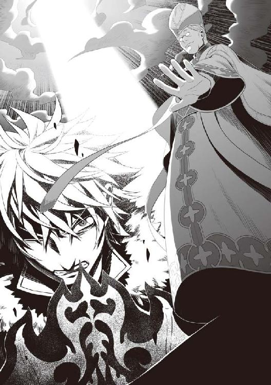
強固な状態のエアスト、セカンドシールドが一瞬で弾け、シールドプリズンで辛うじて持ちこたえた。
「フィーロちゃん？ 大丈夫なの？」
「うん。なんかね、大丈夫なんだよ」
フィーロの頭に生えたアホ毛というか冠羽が光っている。それのお陰か？
盾を憤怒の盾にすると、フィーロが食べた竜の核石の影響か暴走してしまっていたのに、それが制御できるようになっているようだ。
何から何まで力を貸してくれて助かるな、フィロリアルの女王。
確かに話し合いをしろという無理難題にできる限り応える意味はありそうだ。
バキンという音が響き、俺はみんなを守るために盾を空へ掲げた。
プリズンも破壊され、光が俺に降りかかる。盾の防衛範囲が目に見えてわかるほどの極太の光だ。
俺の足元に転がる奴等を包むようにフィーロは羽毛で押さえ込む。
「うぐぐぐううううううう......」
目減りするように俺の体力を光が削っていく。
「もう少し......終わった！」
光が突如消え失せ、俺は盾を上に構えるのをやめる。
同時にフィーロも立ちあがって、羽毛に隠していたみんなを放り出す。
辺りは......焦土と化していた。
元々は国境を守る砦だった場所が今はみるも無残に廃墟と化し、俺を中心に隕石が落ちたかのようにクレーターができている。その周りには兵士共がニヤついた顔つきで俺達を見ている。
元康やビッチ諸共魔法で消し飛ばそうとした？ 何が起こっているんだ？
「こ、これは一体......」
「高等集団合成儀式魔法『裁き』を受けて平然としていますか。さすがは盾の悪魔」
声の方を見ると、以前城下町の教会で俺を出迎えた教皇がやんわりとした微笑を浮かべていた。後方には何十人もの教会関係者らしき連中。他に騎士も混じっている。
「お前は......！」
そして教皇は俺達、そして元康達を眺めた。
援軍？ いや、あの一撃は確実に元康達も巻き込むものだった。つまり援軍ではない......？
さっきの魔法の威力は憤怒の盾で辛うじて堪えられるという強大なものだった。というかフィーロ、余計な真似を......ここまで話を聞かない元康一行を助ける必要なんてないじゃないか。一度手痛いお灸が必要なんだよ。コイツには。
既に他の勇者は死んでいるらしいし......一人減ろうが関係ない。人の話を聞かないしな。
ぶっちゃけ、ラフタリアとメルティさえ守れば良かった。
まあ良い。それよりも気になるのは教皇の真意だ。
「あんな威力の魔法を槍の勇者やこの国の王女がいる所で撃つとか......何を考えているんだ？」
「槍の勇者様......ですか」
コイツ等にとって剣と槍と弓の勇者は信仰の対象。こんな巻き込むような真似はしないと思っていたのだが......教皇は笑みを絶やさずこちらを見ている。
なんだろう。不気味な印象を受ける。人が目の前で死んでも同じ表情でいるかのような、仮面のような笑みと表現すれば良いのだろうか。顔色というか、そういう微細な変化はあれど根底がわからないというか。そんな感じだ。
考えてみれば錬と樹が何者かに消されているんだ。
元康は俺を犯人にしたかったようだが、実際は違うのだから真犯人がいる。
つまり、コイツが真犯人だと考えるのが妥当か。
「私共が信仰いたしておりますのは人々を救い、波から世界を救う勇者の事です。各地で問題を起こし、ましてや信者を貶めるような勇者は偽者なのですよ」
まるで日常会話をするかのように教皇は答えた。
「なん、だと」
元康が唖然とした表情で教皇を見つめている。
「次期女王候補の方々は正義のために、いえ、既に盾の悪魔によって殺されているのです。今、そこにいるのは生きる屍なので、気にする必要はありません」
「なんとも......まあ」
ラフタリアも酷い暴論に怒りを通り越して呆れていた。
この教皇、前に会った時は温和で公正な人物に見えたが俺の思い込みだったようだな。
「聖水を恵んだ慈悲に感謝をしなければいけないのに盾の悪魔は侵略行為をしました。ですから私が神の代弁者として浄化に来たのです」
すげぇ理屈。つまり俺に聖水を正しい値段で提供したのは余裕のある施しで、脅威になったから殺すとかいうのか。あの時はまだ全貌を解明できていなかった......のか？
怪しまれないようにしていたという可能性もある。
「ふざけるんじゃないわよ！ 私は次期女王よ！ 盾になんて殺されるはずがないじゃない！」
「いえいえ、こちらでは既にそう決まっているのですよ。ご安心ください、マルティ王女。貴方の代わりに国を継いでくれる者はこちらで準備しております。全ては神のお導きです」
ビッチの奴、自分がピンチだからって凄い剣幕で反発していたが、教皇の陰謀に会話は無意味と察したのか、みるみる表情が青く変わる。
「嘘......よね......」
「ははは、まさか。貴女のような俗物はこの世界から退場してもらいましょう」
「ふざけるな！ 俺達を騙したというのか！」
ボロボロの元康が槍を教皇に向けて怒鳴る。
「俺達はメルティ王女とこの国を救うために戦っていたんじゃないのか!?」
「ええ、そうですよ。全てはこの国、果ては世界のための聖戦です。人々を誘惑し先導する盾の悪魔と人々の信仰を揺るがせる三人の偽勇者を我が教会が駆逐し、権威と威信を確固たるものにするための戦いですよ」
「偽勇者ね......」
俺の呟きに表情を若干歪ませて教皇は不愉快そうに答える。
「ええ......各地でそれぞれ問題を起こす偽勇者によってこの国の信仰が揺らいでいるのです。剣の偽勇者は疫病を蔓延させ、生態系を狂わせ、槍の偽勇者は封印された化け物を解き放ち、弓の偽勇者は権威を示さず我が教徒を苦しめる」
どれも俺が尻拭いをしたものばかりだ。
樹のやった行いはわからないが......税率の高い悪い領主は総じて金持ちだからな。寄付に力を注いでいたのかもしれない。
あの封印された化け物を解き放った領主も熱心な三勇教徒だったようだし。
「ですから要らぬ調査を始めた偽者の剣と弓は処分させてもらいました」
さも当然というように教皇は答える。
「何!?」
おいおい元康、何ビックリしてやがる。普通流れでわかるだろう。
「剣と弓はそれぞれ指定した場所におびき寄せ『裁き』によって存在ごと抹消させました。これも神のお導きです」
錬と樹......どうやら俺の思った通り、今回の事件があまりにも強引だからと独自に調査をしていたようだな。
樹は......錬の言うことは信じたというところか。
こんな真似を仕出かす連中だ。その腹黒さに感づいた樹なら正義のためとかで行動するだろう。
先を越されて不意打ちを受けたか......。
「殺したのか!? この世界のために戦ってきた......錬を！ 樹を！」
元康がすごい剣幕で捲し立てる。
お前等、そんなに仲良かったっけ？ 二人には悪いが、俺は同情とか何も感じないぞ。
気になることといえばフィトリアが言っていた勇者が欠けると危ないという話だが......。
「殺すなんて滅相もない。我々を騙した偽者の悪魔を浄化したと言ってもらいたいですね」
「な......」
「そして王と女王にはこう言っておきましょう。偽者の勇者達によってこの国は支配されかかっていました。私達が救いましたが、残念ながら姫達は......とね」
すげぇ......なんという屁理屈。信じる奴がいるのか？ うーむ......でもあのクズなら既に俺に殺されていたと言えば呆気なく信じるかもしれない。
仮にここで俺達が志半ばで力尽きたとしたら......。
俺のいた世界でも実は──とか、後で真相が明らかになった哀れな権力者とかいるだろうなぁ。
無理やり戦争を仕掛けられた挙句、処刑された権力者とか。
真実は俺もわからないがこれだけは言える。
奴等は自分勝手な理屈で俺達を処分しようとしている。
「尚文、休戦だ。力を貸して欲しい」
絶句する元康が俺の方に振り向いて言った。
「随分と虫の良い話だな。直前までお前が俺にしていたことを忘れたとは言わせないぞ。そもそも何度俺の呼びかけを無視したかわかっているのかお前！」
話を聞かずにバカスカ攻撃スキルを撃ってきたことを水には流させはしない。
そもそもほんの少し前まで洗脳の盾が本当に存在すると信じていたくせに、この男は。
「そこを頼む！ 俺は......あいつ等の弔いをしなきゃいけない。奴を絶対に許すわけにはいかないんだ！」
「はいはい。お前一人で勝てるだろ」
忘れたとは言わせないぞ。俺に数々の苦渋を味わわせてくれたことをな。
「力を貸してくれないのか？ お前はあいつのことを何とも思わないのか！」
「思うところは多々ある。最終的には血祭りに上げるつもりだ。だが元康、お前に力を貸す義理はない」
檻も壊れたし、フィーロに乗って全力で逃げれば大丈夫そうだ。
フィトリアには悪いがここで和解しても、信じることができそうもないんだよな。
本気で決別するつもりはないが、言ってやりたい。
「つーか」
俺は元康に向けて親指を下に向け笑みを浮かべつつ。
「死ね♪ この下半身でしか考えないクソ野郎」
「てめぇええええええ！」
元康の奴、ふらふらになりつつ、俺に拳を向けた。
「殴って良いのか？」
今、俺は憤怒の盾を着けている。つまり殴るとセルフカースバーニングが作動して殺せる。
「ぐ......」
ラフタリアやフィーロ、メルティに当たるから抑えるけど。
「仲間同士で争いとは、さすがは盾の悪魔と偽者です」
「誰が仲間だ」
「うるさい！ もうお前には頼らない！ 俺は一人でもアイツを倒す！」
「ふふふ、果たして私を倒せるとお思いかな」
教皇が笑いながら部下に武器を持ってこさせる。
何だあれは？ 大きな剣みたいな......。
白銀で彩られた複雑な装飾で......何ともカッコ良い。真ん中にはなーんか嫌な感じの四角い宝石が埋め込まれている。よくゲームで後半の武器になるような......神聖な剣？
「な......あれは──」
ビッチとメルティが揃って青ざめる。
「ナオフミ！ 気を付けて、あれは──」
「まずは盾の悪魔からです。神の裁きを受けるが良い」
教皇が高らかに剣を振りかぶり、離れているにもかかわらず振り下ろす。
直後、衝撃波が地面を通じて俺に向かって飛んでくる。咄嗟に盾を構え、受け止めた。
「ぐふ......」
吹き飛ばされそうになるほどの強力な衝撃だった。元康の流星槍の比じゃないダメージに意識が遠のきそうになった。
地面には大きな亀裂がありありと刻まれていく。
ちょっと待て、今、俺が装備しているのは憤怒の盾だぞ!?
元康や他の勇者の必殺スキルを受けても余裕だったのにこんなにダメージを受けるってどんな武器なんだ。
「ナオフミ、あれはね、伝説の勇者が持つ武器を複製しようとした過去の遺物なの」
九話 複製品
「あれで複製品なのか？」
どう見ても本家より強いだろ！
まあ、剣の形をしているから錬と比べているけど......さすがに元康よりは強いだろうけど、あそこまでとは思えない。良くて一・五倍くらいだろう。それなら憤怒の盾でまだ防御できるはずだ。
だけどさっきの攻撃はそれを遥かに凌駕している。
「なんであんなものが......確か数百年も前に紛失したって......」
「紛失じゃなくて、盗難だったんだろ。盗んだ組織が三勇教会だったわけだ」
大量に作られたはずなのに紛失して現在どこにあるのかわからない某国の爆弾陰謀説みたいだな。
というか伝説の武器の複製品ということは、錬の剣は最終的にアレくらい強くなるということか。
盾の勇者である俺が言うのはアレかもしれないが、個人にあんな力を持たせて、この世界大丈夫か？ そもそもが複製品とはいえあの威力だ。勇者を召喚する必要性があったのかすら怪しい。
そこのところどうなんだよ。聞いてみるか。
「そんな物があるなら勇者なんて召喚するなよ。あれを量産すれば波にだって勝てるだろ」
俺の言葉にメルティは首を振る。
「単純な出力なら伝説の武器に匹敵するかもしれないけど......それに見合う燃料が膨大すぎるはずなの」
「そうなのか？」
「ええ、一回振るうのに数百人の一月分の魔力が必要なの。しかも量産なんて今では無理......アレも伝承の時代から存在する、言わば伝説の武器なのよ」
「そりゃあすげえ」
アニメで見たことがあるな。一発撃つのに日本の電気の殆どが必要とかそういう巨大ロボットの狙撃の話。それみたいなものか？ 乱射できたら化け物だな。
「教徒達が日々、命がけで力を注いできた物でしてね。聖戦のために引っ張り出してきたのですよ。今、この時が聖戦の時！」
聖戦......ね。なんとまあ、準備万端なことで。
伝承の勇者......剣の最終武器の劣化コピーとかそんなところか？ 数百年前に紛失とか言っていたし、長年溜め込んでいた魔力をここ一番で使ってきたということか。
くそっ！ 厄介な物を持ち出してくる。
......いや、それだけ相手を追い詰めている証拠だ。ここさえ乗り越えられれば幾らでも反撃の機会はある。今がふんばりどころだ。
「さて、では試し撃ちはこれくらいにして本気で行かせてもらいましょう」
教皇は剣を前に向ける。すると形状が槍に変わった。形状こそ変わったが、何とも豪華な作りは変わらない。同じ人物の作った武器だと言えば頷ける。
「変化するのか!?」
「ええ、伝説の武器ですからねぇ。剣、槍、弓......どれで浄化してしまいましょうかね」
逃げても良いが......あんな武器を振り回す奴を相手に逃げ切れるか？
現にあの衝撃波は避ける余裕がないほどの速度で俺に到達した。
手加減していたっぽいし、本気で......弓のスキルとかを放たれたらフィーロでも避けて逃げ切るのは無理かもしれない。
「教徒達の力も限度がありますからねぇ。一撃で沈めさせてもらいましょう」
教皇は応援する教徒と騎士達の期待を一身に背負い武器を俺達に向ける。
槍の形状をした複製品が光り輝き、三又の光の槍を作り出す。
「......上級スキル、ブリューナク!?」
槍の勇者である元康が叫ぶ。おそらく、元康がやっていたゲームのスキル名だ。
ということは相当上位のスキルみたいだな。
普通に振りかぶって大ダメージ。スキルなんて受けたら死ぬかも......。
逃げるのは不可能、耐えるのも......元康や他の勇者の理屈だと盾では無理。
八方塞がりとはこの事か......だが、諦めるつもりはない。
「フィーロ！」
「うん！」
俺の意図を完全に察したフィーロは俺を掴んで教皇の方へ思いっきり投げ飛ばす。
教皇が俺のスキルの範囲に入った瞬間。俺は大きくスキルを唱えた。
「シールドプリズン！」
教皇を囲むように盾の檻が出現する。
後はチェンジシールド（攻）をしてから必殺のアイアンメイデンを使えば──
「......なんの真似ですかな？」
奴は構えを解く必要すらなく、スキルの余波だけでプリズンが破壊された。
馬鹿な!? いや、それよりも冷静に考えろ。
アイアンメイデンを発動させることは叶わない。ならば俺の攻撃手段は一つしかない。
セルフカースバーニングで焼き払う。
だけど行うには接近戦に持ち込んであの槍の攻撃を......。
いや、そうじゃない。カウンターの発動を逆手に取ればいいんだ。
「フィーロ、元康を俺に投げつけろ！」
「え!?」
「うん！」
俺の指示通りにフィーロは元康をまだ着地していない俺に向って投げつける。
「どわぁああああああああああああ！」
俺は飛んでくる元康に向かって叫ぶ。
「元康、俺を攻撃しろ！」
「あああ!? なるほど、わかった！」
元康の奴、何だかんだで頭の回転が速いな。
振り向いた俺に元康は槍を伸ばす。ガツンと音を立てて、盾に元康の槍が当たった。
そうだ、それで良い。
「流星槍！」
ついでに元康が教皇に向けてスキルを放つ。
「愚かな」
元康の流星槍は教皇を纏う謎の結界のようなモノによって阻まれた。
「何!?」
「今度はコッチだ！」
セルフカースバーニングが俺を中心に巻き起こり、教皇に呪いの炎が広がっていく。
教皇を守っていた結界が消し飛び、炎は──
「無駄です！」
教皇に従う教徒達が一斉に何かを歌い始める。
『『『力の根源たる私達の神が命ずる。真理を今一度読み解き、奇跡として呪いを浄化せよ！』』』
「高等集団浄化魔法『聖域』！」
辺りが純白の光に染まり、俺の放ったセルフカースバーニングが一瞬で取り払われた。
馬鹿な!? 確かに相性的には神聖な力に呪いの力が相反するのはわかっている。
もしかしたら俺が買った聖水は目利きを誤魔化すほどの品だったのか？ 十分にありうる。
だけどこの呪いは完治させるのに高い聖水が必要だったんだぞ。それを一瞬って......。
「エアストシールド！ セカンドシールド！」
教皇に届く前に足場として盾を呼び出し、元康と一緒に後ずさる。
「おい、元康の仲間、早く回復魔法を掛けろ！ 俺達と敵対しても何の利益もないぞ！」
「は、はい！ ツヴァイト・ヒール！」
俺を含め、元康の傷が塞がっていく。これで多少は役に立つだろう。
まったく、何が悲しくて元康と共闘しなくちゃいけないんだ。だが、目の前の敵を倒さねばこの先、生き残れそうもない。
「ごしゅじんさま。フィーロも行く！」
「気を付けろよ！」
「うん！」
フィーロが人型になって教皇に向けて駆けだす。それは俺やラフタリア、元康も同じだ。
ここで一方的にやられる義理はない。
セルフカースバーニングが効かないからといって手を拱いて見ている必要はないんだ。
幸いあの大技を放つのに時間が掛かるのか、教皇は槍を持って俺達に向けて構えたまま動かない。
「はい......くいっく！」
フィーロが駆けながらハイクイックを唱えて、教皇の後ろに立つ。
しかし、ジーンと硬いものに拳をぶつけたかのように手を振る。
「うー......かたーい」
あのコピー武器の作りだした結界のようなモノに阻まれて攻撃が届かない。
「流星槍！」
流れ星のように大量の光が突きとなって教皇へ放たれるが、やはり届く様子はない。
「ファイアランスとか使えよ！」
「ああ、そうだった。マイン！」
「次期女王に逆らった罪、万死に値するわ！」
ビッチが怒りに任せて魔法を唱え始めた。ビッチの取り巻きも倣って魔法を唱える。
「モトヤス様、援護魔法ですわ。ツヴァイト・パワー！」
おい、フィーロとかにも掛けろよ、気が利かねえな！
「サンキュ！ みんな！」
元康がウザく女共にウインクしてスキルを放つ......さっきよりも放つのが遅い。
「風炎の流星槍！」
風と炎を纏った流星槍か。発動させるまでにタイムラグがあるようだ。
風で炎が瞬き、流星の如く光り、刃が燃え上がる。そして風の力で炎を纏う流星が加速した。
......槍のキレが無い。元康が重そうに槍を教皇に突き出した。
俺だったら間違いなく防御するまでもなく避けられる。
動かない相手前提じゃないと無理だな。とはいえ、こんな奥の手もあるのか。
しかも、先ほど元康は援護魔法も掛けてもらっている。これは期待できるんじゃないか？
だが......ガキンと音を立てて、教皇の防壁を突破できずにいた。
「く......」
その後、元康は教皇から距離を取って、立ちくらみをしたかのように額に手を当てる。
「大丈夫ですか、モトヤス様！」
「ああ、ちょっとな。ＳＰとクールタイムがな」
やはり強力なスキルを放つには代償が必要だったか。
出すのに時間が少し掛かったし、突きも遅かった。それでも貫けないとかどれだけ硬いんだよ。
セルフカースバーニングは発動しても無効化されるし、フィーロや元康の攻撃も効かない。
「教皇様！」
「今すぐに防御魔法を展開させます！」
『『『力の根源たる私達の神が命ずる。真理を今一度読み解き、祝福されし者を守れ』』』
「高等集団浄化魔法『城壁』！」
背後の三勇教徒が教皇に向かって援護をしているのだから手の施しようがない状況だ。
城壁ってなんだよ。教皇を中心にまるで砦のような光の結界が作りだされたぞ。
「たああああ！」
ラフタリアがフィーロと共に剣で切りつけるが、その光の防壁に阻まれる。
「フィーロちゃん！ ラフタリアさん！ わたしも──」
メルティが得意魔法のアクアスラッシュを放つがやはり焼け石に水。一向にダメージが入る気配はない。
教皇は無視して後方の三勇教徒を仕留めた方が良いと決断するよりも早く──
「さて、茶番はこれくらいにしてもらいましょうか。そろそろ発動できそうなのでね」
教皇の持つ槍の先がスパークし、スキルの発動が可能になったことを告げる。
「ではこれまでです。さようなら、悪魔と偽者達」
一際槍が輝き、俺達に向けて教皇は微笑む。まるで悪魔祓いを完了したかのような態度で。
「メルちゃん！」
フィーロは咄嗟にメルティを庇い。ラフタリアは俺の手を握る。
「これまでか......」
元康に至っては諦めたかのように呟き。
「わ、私はこの国の女王になるのよ。こんな無礼をして──」
ビッチは死を前に喚き散らしている。
元康の配下達はそれぞれ冷静さを失って泣き喚いていた。
あれに耐えられる可能性が万が一にもあるのは俺だけか......。
一か八か、俺が前に出て耐えるしかない。
もちろんコイツ等を守るためなんかじゃない。
ラフタリアを、フィーロを、メルティを、俺を信じてくれた連中を守るためだ。
盾を構えて前に出る。
「お供します」
ラフタリアは前に出た俺に付き従い。手を添える。
今までよく付いてきてくれた。
知らなかったとはいえ、盾の悪魔なんぞの奴隷として買われ、無理やり戦いの世界へ巻き込まれた。
「すまない......こんな所に連れてきてしまって......」
「いえ、ナオフミ様なら全てを守れると私は信じています」
「......そうだな。過去の槍の勇者がどうだったかは知らないが、槍の勇者の技だからな」
まだだ。まだこんな所では終われない。
やっと全ての黒幕、そして反撃の機会が目の前に見えてきたんだ。
ブリューナク......ケルト神話の伝説の槍の名前だが、防いでみせる。
教皇が槍を天に掲げ──
「ハンドレッドソード！」
「流星弓！」
突如上空から大量の剣と一筋の矢が教皇に向けて降り注いだ。
「何事です!?」
教皇はスキルを中断して槍のスキル、大風車だったかを放って迎撃した。
声の方向に視線を向ける。そこには──
「おや？ 貴方達は神の裁きによって浄化されたはず。なぜいるのですかな？」
錬一行と樹一行が立っていた。死んだんじゃねぇのかよ！ 生きているんじゃないか！
「勝手に殺してもらっては困るな。俺達の死体を確認したか？」
「危機一髪でしたね。どうにか間に合いました」
臨戦態勢で錬と樹は俺達に声を掛ける。
「まあ、あんな大規模な魔法を放ったら死体なんて確認する気は起きないだろうが、それが命取りだったな」
俺は最初の攻撃の跡地を見る。
確かにこんなクレーターができるような攻撃では死体なんて見つかる可能性の方が低い。跡形も残らなそうだ。俺は耐え切ったけど。
と、錬を見ているとズシリと体が重くなったように感じた。
憤怒の盾が憎むべき敵を見つけたかのように騒ぎ立てる。
フィトリアの話通り、竜の憤怒が錬に向けて怒りを発生させているのだろう。
耐えろ......今は暴れるべきじゃない。
「お前等、どうやって......」
元康が死人でも見るような目で錬と樹に語りかける。
元康の疑問とは違うが、確かに都合良くこんな僻地に勇者全員が揃っているのはおかしいな。
「影とかいう集団に助けられてな」
「ええ、危機一髪でした」
「え？ 影って俺達に尚文の居場所を教えてくれた奴等だろ？ 教会側のはずだぞ」
妙に俺達の逃走経路を察知して先回りされていると思ったら、やっぱりそんなところか。
つまり元康達が俺の居場所を特定できたのも、三勇教派の影から教わっていたということか。
そういえば......。
「......影も一枚岩じゃないとか言っていたな」
「ええ、僕達を助けてくれた影達は女王の命だと言っていました」
なるほど、影の奴等も協力してくれているということか。
となると女王は教皇とは敵対関係にいると見て良いんだろうか。少なくとも四人の勇者全員が三勇教会と敵対関係にいる今、女王が教皇と組んでいる可能性は低くなってきた。
しかし......コイツ等、登場が昔の週刊マンガみたいだな。
出てくるタイミングを計っていたんじゃないかと疑いたくなるぞ。
元康に至っては主人公面してやがる。
となると俺は、ポジション的に宿敵キャラ......？ 冗談じゃない。
良く扱っても誤解を受けている実は仲間キャラってところか。マンガ的に。
残念だが、元康の仲間になるつもりは微塵もないんだが......。
「もうすぐ三勇教を捕まえるための軍隊が来る！ 諦めろ！」
錬が勝利宣言をするかのように言い放った。しかし、教皇は微塵も焦りを見せない。
「何人来ようと私達の勝利は揺るぎませんよ。今ならどんな軍隊が来ようと数など無意味！」
またも教皇はスキルを放つ態勢に入る。
「どうかな？」
「ええ」
二人の勇者一行は教皇に向けて駆け出し、各々のスキルを放つ。
「流星剣！」
「流星弓！」
光の剣閃と矢が一斉に教皇へと降り注ぐ。
しかし、それを複製品の結界で受け止めた教皇は、涼しい顔で立っている。
錬や樹の仲間達も続き、それぞれの技や魔法を放つ。
教皇を中心とした結界が再度展開されてしまっていて、傷一つ負わせられない。
「所詮は偽者、この程度ですか」
「な......」
「これは厳しいですね。まさかこんな隠し玉を持っているとは」
「決定打が無いのかよ！ 何しに来たんだお前等！」
ただ出てきただけか！ ふざけんな。
「何の策もなしに来たと思っているのか？」
「幾らなんでも僕達を舐めすぎではありませんか？」
錬と樹の武器が光りだした。ただ、撃つのに時間が掛かっている。
「雷鳴剣！」
「サンダーシュート！」
バキンと音を立てて教皇の結界は砕け散る。
「撃つのに必要な時間を稼いでいたのですよ」
おお、俺のセルフカースバーニングでやっと破壊できる結界を貫くなんて、腐っても勇者、元康とは次元が違う。これならいけるか？
「俺だって......できなくはない。でもＳＰが......」
「負け犬の遠吠えにしか聞こえないな」
というかそんな強力なスキルがあるなら何で俺に撃たなかった。
ああ、発動までの時間が掛かりすぎて俺が警戒するからか。そういえばさっきの属性流星槍もキレが悪かったもんな。
とにかく、攻撃するなら今しかない！
「みんな、行くぞ！」
錬の掛け声に応じてみんなで教皇に各々の攻撃を放つ。
「フィーロが一番！」
先陣を切ったのはフィーロだった。速度だけならこの中で一番速い。
「でりゃあああ！」
元康が教皇に向けて走りながら槍を突き出した。
「喰らえ！」
錬も続き、剣を振りかぶる。
「皆さん！ 畳み掛けますよ！」
樹が弓を引き絞って矢を放つ。
「ナオフミ様。私も行きます」
「わたしだってやるわ！」
ラフタリアとメルティもそれぞれの攻撃方法で続く。
その攻撃を教皇は棒立ちで受け止めていた。まるで防御する必要すらないというかのように。
何度も勇者一行の攻撃を受けたというのに平然と立っている。
「......愚かな。伝説の武器を所有する私に勝てると思っているのですかな。受けるまでもない」
教皇の負傷を咄嗟に教徒達が回復魔法を掛けて治療する。
あれは厄介だぞ。一撃で沈めなければ配下が完全回復させる。
「さあ皆さん。裁きの詠唱に入ってください」
教皇の命令に教徒達は頷き、魔法を唱え始める。
「偽者に組する者達は全て悪なのです」
すげぇ。もはや狂信的。痛みは無いのか？
「さて、ではトドメと行きますかね」
教皇の奴本気で俺達を殺る気だ。
先ほどよりも高出力のブリューナクと思わしきチャージに入っている。
「尚文」
「なんだ？」
錬が俺に言う。
「力を合わせて奴を倒すぞ」
「本当は協力なんて真っ平ごめんなんだがな」
あれから逃げ切るのは不可能だ。しかも裁きとかいう強力な魔法と併用して打ち出すつもりだ。さすがの俺も耐え切れないだろう。
「まずは後ろの連中を仕留めろ。じゃなきゃキリがないのはわかっているだろ？」
「ああ」
既に錬達は後方にいる連中に向かって駆け出していた。
だが、後方の連中も雑魚と呼ぶには厳しいほどの強さを備えた奴等で構成されている。
勇者は元より、ラフタリアやフィーロでさえ、多勢に無勢で苦戦している。
その間に教皇はスキルを充電し、更に強力な攻撃魔法を唱える。
「皆さん。これは聖戦なのです。正義のため、死ぬことも辞さない覚悟をするのです」
「「「はい！」」」
頷いた狂信者共が突撃してくる。
剣、槍、弓、そして勇者の仲間達全員の攻撃を受けて、血を流しても平然と向かってきた。
足が動かなくなるまで動き、足が動かなくなれば手を、それがダメなら魔法を放つ。
狂信者共は死ぬその瞬間まで攻撃を止めない。
狂ってやがる......！
「く......キリがない」
タダでさえ数が多い。三国志が舞台の無双ゲームを連想させる人数が向かってくる。
代表こそ教皇だが、その教皇を援護する敵はあまりにも多すぎる。
一人一人は倒せなくはないが、倒しても即座に回復魔法で隊列を組み直されてしまう。
ゲームだったら倒したらそれ以上はしてこないが、これはゲームじゃない。
息の根を止めない限りは回復されるし、息の根を止める前に回復魔法を唱えてくる。
もちろん殺せないわけじゃないんだけど、その分時間が掛かる。
「俺が接近するから誰か俺に敵意を持って攻撃しろ。俺の攻撃は味方を巻き込むからな、全力で離れろよ」
有効な攻撃手段が俺にはセルフカースバーニングしかない。となれば接近するのは俺となるだろうし、裁きとかいう強力な魔法を唱えている間は妨害することはできないはず。
何の遠慮もなく放てば、大多数を巻きこめるだろうし。
「わかった」
「じゃあ、行くとするか！」
それぞれの仲間達には魔法で援護するように指示を出し、万が一の妨害に備えて接近戦しかできない奴は魔法を使う奴を守るようにさせる。
アタッカーは勇者、援護は魔法、防御はその他とまあ、期待できない編成だな。
「行くぞ！」
俺が先行で教徒に向けて駆け出す。
攻撃手段が乏しい俺が決定打を与えるには一つしか方法がない。
「尚文！」
元康が俺の盾に槍をぶつけ、セルフカースバーニングを作動させる。
「うおおおおおおおおお！」
裁きの詠唱に入っていなかった教徒がそれを浄化する魔法を掛けて無効化、しかし威力を殺しきれず教徒の一部を焼き払う。
「「「ぐはぁああああああああああああああ！」」」
呪いの炎は回復魔法を遅延させる。その間に攻撃すれば倒すことができるだろう。
俺は咄嗟にエアストシールド＆チェンジシールドでロープシールドを使い、フックを使用して他の勇者達の後方へ下がる。
フックは紐を出す専用効果であり、思い通りに操ることができる。だから俺の腕に紐を結ばせて勢い良く下がれた。
「雷鳴剣！」
「イナズマスピアー！」
「サンダーシュート！」
その瞬間に他の勇者達が一番威力の高いスキルを教徒に向けて放った。
それぞれ雷をイメージしたスキルだ。
ついでに教皇を貫き、後方にいた教徒達も一緒に薙ぎ払う。
「「「ぐああああああああああああ！」」」
木の葉のように教徒達が吹き飛ばされていくが、教皇には効果が無いのかあまりダメージを負っているように見えなかった。
どれだけ強いんだよ。あの伝説の武器とこの首謀者は。
「茶番もこれまでですよ」
勝利の笑みを浮かべた教皇が俺達に槍を向けた。
「みんな！ 一ヶ所に固まれ！ いや、尚文を盾にするんだ！」
「おい、ふざけんな！」
事前に打ち合わせていたかのように勇者共は一ヶ所に集まる。そう、俺の後ろへ......。
「あのスキルは拡散誘導性がある。幾千にも分かれて敵味方を区別して貫くんだ。守るなら一ヶ所に集まった方が被害が少ない」
「なるほど......」
「まあ、本来はターゲット数を指定するんだがな」
ロックオンとかしてから放つスキルという奴か。厄介な。
「ブリューナク！」
教皇もスキルを発動させて、俺達に撃ち出す！
眩く白い光が煌々と輝き、俺達へと向かってくる。
「負けるか！」
「はい！」
「みんな、力を貸してくれ！」
「流星剣！」
「流星弓！」
「流星槍！」
錬、樹、元康が武器を輝かせてスキルを放った。
流星の如く輝く三つの光が融合し、ビームみたいな太さへ変わった。
そして各々の仲間達が攻撃魔法を使って威力を引きあげる。
「フィーロ！ メルティ、お前等も手伝え！」
「うん！」
「ナオフミ！ アンタも手伝いなさいよ！」
「守ることしかできない俺に何をしろってんだよ。ラフタリアだってそうだろ？」
「あ......はい。私もまだ目に見えて効果のある攻撃魔法は使えないです」
申し訳なさそうにラフタリアが頷く。
変則的なことしかできない弊害だな。俺は守り特化で勇者共が相殺できなかった場合に動く。ラフタリアは光と闇の混合である幻の魔法が使えるが、姿を隠すとか明かりを灯すとかしかできない。
メルティが若干冷たい視線を送ってくるが、勇者達の攻撃に力を貸した。
「来るぞ！」
バチバチと音を立てて、それぞれのエネルギーがぶつかる。
「いけえええええええ！」
「このおおおおおおお！」
「でりゃああああああ！」
各流星スキルで構成された極太ビームが教皇の攻撃と攻防を繰り広げている。
仲間達の魔法援護もあり、少しずつだけど教皇の攻撃を押さえ込んでいく。
「フフ......その程度ですか」
教皇の奴が変わらず笑みを浮かべている。
まさか、加減しているのか!?
「馬鹿な......まだ、まだ負けてはいない！」
「そうだ！ 俺達はまだいける」
「ええ、もっと出力を上げましょう！」
三人は持ちうる全ての力をスキルに込めて放った。
ほんの僅かだけど、押し戻している。
よし......だが、なぜだろうか。どうも不吉な予感が拭えない。
「さて、ではそろそろ行きますか」
教皇が淡々と呟き、力を込める。
すると教皇の持っている武器が黒くなったり白くなったりと、明滅を繰り返す。
どう見ても次に来るのは強力な攻撃だ。
「──危ない！」
くそっ！ お前等に今死なれると俺が困るんだよ！
もっと別のタイミングでこの状況が起こって欲しかった......。
俺は勇者達を突き飛ばしてスキルを中断させ、前に出る。
全身を通り過ぎる光線......痛みと爆音に頭がおかしくなりそうになった。
光線は俺の後方へ貫通することなく、俺は仲間を守り切った。
「はぁ......はぁ......」
「ナオフミ様！」
「尚文......」
錬が絶句するように俺を見つめる。それは他の勇者や仲間達も同じだ。
「ほう......まさか耐え切るとは思いませんでした、さすがは盾の悪魔」
悠々と教皇は槍を振り回して言い放つ。
「お前等、だ、大丈夫か？」
霞む目で振り返る。するとＶの字状に地面が抉られている。俺が止めていなければ今頃死人が出ていただろう。幸い、みんな俺の後ろに回っていたお陰で傷は負っていない。
「「ツヴァイト・ヒール！」」
重複する回復魔法を受けて、傷は即座に塞がった。
三人の勇者の必殺スキルを受け、威力が殺されていたのになんて威力なんだ。
「ぐ......ＳＰが......」
「こっちもだ」
「僕もです」
三人ともＳＰが足りないのか、回復アイテムである魂癒水に手を伸ばしている。
大きく回復するには時間が足りないだろう。
怒声が聞こえてくる。見ると錬達が言っていた通り、三勇教討伐軍が俺達の方へと駆けてくる。上手くすれば教皇を援護している連中をこれで封殺できる。
「あの連中の相手もしなくてはいけませんね」
「!? みんな！ 来るな！」
錬が大声で制止するが既に遅い。教皇が槍を剣に変えて、地面に深々と突き刺した。
すると辺りに地震が起こり、後方から近づいてきていた討伐軍の足もとにマグマが噴出した。
「「「うわあああああああああああああ!?」」」
討伐軍の連中がごみくずのように吹き飛ばされていく。
ほぼ壊滅したんじゃないか？ なんて威力なんだよ。
「はははははは、爽快ですね。この伝説の武器さえあれば、私は神になれます。勇者など不要！ 私こそが神となるのです！ 皆さん、古き神を僭称する者達をここで断罪するのです」
「「「はい！」」」
......多少は状況が有利になるかと思ったが、討伐軍が壊滅したんじゃ何もできないじゃないか。
教皇の持つ剣の刀身がまるで炎の鳥のような形を成す。
おそらく、ブリューナクとかいうスキルよりも上位のスキルだ。
やばいな......討伐軍の連中は教皇がこんな隠し玉を所持しているとは思っていないだろう。
下手をすれば一網打尽にされてしまう可能性がある。
「では皆さん。裁きと共に行きましょう」
配下との同時攻撃を行うつもりだ。
若干の時間的余裕は生まれたが、いつ強力な攻撃が飛んでくるかわからない。
「これまでか......」
他の勇者の顔色が悪い。勝算はあったんだろうが、幾らなんでも無謀だったな......。
いや、錬と樹がこの場に現れず元康と俺がやられていたらもっと悪かったのか。そう考えたら最善を尽くしたとも言える。
俺は最善を尽くしたのか？ まだ手段はあるんじゃないのか？
そう、この呪われた盾ならば、この厳しい局面を突破することも可能なんじゃないのか？
フィトリアに何度も何度も繰り返し注意されたこと──引くに引けない問題だ。ここを乗り越えなきゃ後なんてない。どうせこのままでは全員死ぬんだ。賭けてみるのも悪くはない。
「錬、ちょっとこっちにこい」
「なんだ？ 何か策があるのか？」
俺は錬に近づくように言い、錬は訝しげながら俺の方へ来る。
ドクン、ドクンと盾が脈動を強め、震えだす。
意図的に封じていたが、憤怒の盾の中には錬に殺された竜の核が入っている。
視界に今際の記憶が映し出され、目の前の敵を屠りたいと盾が叫ぶ。
そうだ......もっとだ。もっと怒りを爆発させろ！
俺はラフタリアのお陰で制御できている憤怒の盾の怒りを最大限にまで引き出そうと試みる。
「ラフタリア、手を......」
「はい」
ラフタリアと手を繋ぎ、錬に盾のある方の手を向ける。
そしてビッチと元康に視線を向けて、思い出さないようにしていた怒りを呼び覚ました。
全てが憎く、怒りで全てを忘れ、見える全てが黒く染まったあの感情を呼び覚ます。
感情の解放によるグロウアップ！
カースシリーズ、憤怒の盾の能力向上！ ラースシールドに変化！
ラースシールドⅢ
能力未解放......装備ボーナス、スキル「チェンジシールド（攻）」「アイアンメイデン」
「ブラッドサクリファイス」
専用効果 ダークカースバーニング 腕力向上 激竜の憤怒 咆哮 眷属の暴走
魔力の共有 憤怒の衣（中）
瞬く間に心にどす黒い感情があふれ出す。
十話 ラースシールド
「──────────！」
俺は天に向かって声にならない叫びを上げていた。
憎い！ 何が憎いって、この世界にいる全てが憎い！
気が狂いそうになるほどにこの全てが恨めしい。
そうだ。全てをこの力で焼き尽くしてしまえば良いんだ！
視界が赤と闇に染まり、何もかもが憎む対象に映る。
「──！」
誰かの声が耳に入り、水を掛けられたような気がするが、ソレすらも意味を成さない。
「──！」
触れているものがうっとうしい。焼き尽くすか！
「ごしゅじんさまは、本当に世界の全てがきらいなの？」
俺を嵌め、そしていたぶり、殺そうとする全てが憎い！
「ほんとうに？ ほんとうに、そう思っているの？」
ああ、だからどうした！
「じゃあ、フィーロやラフタリアお姉ちゃんとの日々はいやだったの？」
声に......思い出される。
幼い女の子が俺に付き従って、たとえ何があったとしても俺に対して忠誠を誓い、負傷しても俺のために尽くす......その顛末が俺の視界を埋め尽くす。
そして卵から雛が孵り、育ち、大好きだという想いが伝わってくる。
「それ......は......」
「違うよね。だって、ごしゅじんさま何だかんだでフィーロ達のためにがんばってたもん」
闇が晴れるように視界がクリアになっていく。
憤怒の炎に水を掛けられたような何かが心に染み込んできた。
「だからね。ごしゅじんさまの怒り、憎しみをフィーロは食べてくね」
スーッと視界が完全に晴れ、俺は辺りを見渡す。
「ナオフミ様！」
「大丈夫か!?」
俺が叫び声を上げてから数秒も経っていないのだろう。
ラフタリアが心配そうに声を掛け、錬が俺の肩に手を置く。
「ごしゅじんさま大丈夫？」
「お前が抑えてくれたのか？」
「うん。ごしゅじんさまも大変だったんだね」
フィロリアル・クイーン形態になったフィーロは俺を後ろから抱き抱える。よくみると四肢が炎で黒く火傷している。憤怒の盾がグロウアップした時の加護にフィーロの体が耐え切れなくなってきている。とても痛いはずだ。なのに、痛がりのフィーロが俺の心配をしている。
「フィーロもね、ラフタリアお姉ちゃんもメルちゃんもみんなみーんな、ごしゅじんさまを信じているよ。だからがんばって」
「......ああ。そうだな。そうだったな」
ここで怒りに飲まれてはいけない。
あと少しで俺を苦しませた元凶の一つが潰せるのだ。ここさえ越えれば、後はどうとでもなる。
俺達を、メルティを、勇者を、全て自分の都合良く利用する存在を......アイツを、倒す！
「......行くぞ」
「こんな状況でまだ手段があるのか？」
「ああ、俺の一番強い盾に必殺のスキルができた」
「なんだその盾は。さっきも禍々しかったけど、もっと酷くなっているぞ」
憤怒の盾Ⅱの竜を象った形状がラースシールドに変わったことで、更なる禍々しさを宿していた。竜の顔立ちが悪魔のような形に変わり、角の部分は曲がっている。
「いずれお前等に撃つかもしれないスキルだ。それよりもスキルを放つ余裕を作ってくれ」
「お前って奴は......しょうがない。今だけはお前を頼ろう」
「ですね。信用することは難しいですが、こっちも手段がありません」
「一か八かだな」
「魔法は......俺達が何とかしてみせる」
勇者達は頷き、教皇に向けて構える。
「おやおや、無駄な抵抗を......ですがそれも終わりとしましょう。こちらも準備が整いました。トドメを刺させていただきましょうか」
辺りに魔力の気配が強まっていく。上には高密度の光が今にも降り注がんとしていた。
「いくぞ！」
俺の叫びに勇者達は教皇に向けて駆ける。
「フィーロ、俺を乗せて飛べ！」
「はーい！」
求めに応じたフィーロが俺を背負い高らかに跳躍した。
「「「高等集団合成儀式魔法、『裁き』！」」」
上空から光の洗礼が降り注ぐ！
「いけええええええええええええええ！」
俺は盾を上に構える。
ビキビキと音を立てて、上から降り注ぐ光が俺を照らす。
しかし、ラースシールドⅢの防御を貫くことはできない。俺から下は残光すら届かない。
「裁きでも傷を負わない!? そんな馬鹿な!?」
教皇の表情が驚愕の文字で彩られる。笑顔の仮面が剥がれたな。
こちらも相応の代価を払ってこの盾を使っているんだ。それくらいは見せてもらわないとな。
「馬鹿な。ですがこれは受けきれまい！」
剣を高らかに俺に向けて、教皇は振りかぶる。
「フェニックスブレイド！」
教皇の剣から火の鳥が飛び出し、俺に向かって来る。
「喰らうか！」
俺は盾を前に掲げる。そして魔法を詠唱するフィーロと心の疎通を図り援護する。
詠唱するための文字が頭に思い浮かぶ。憤怒の衣（中）の発動条件か？
『力の根源たる盾の勇者と眷属が命ずる。真理を今一度読み解き、炎を喰らいて力と化せ』
「ラースファイア！」
憤怒は今、俺達の力となる。
火の鳥は俺達にぶつかり、全てを焼きつくさんと燃え広がるが、その炎を力へと変換した。
「な！ 私のスキルを喰らっただと！」
勇者達の攻撃とフィーロの力強い蹴りによって教皇を守る結界は即座に打ち砕かれた。
「いくよー！」
フィーロの必殺の突進！
フィロリアル・クイーン形態だが、翼の動きがフィトリアに放とうとした回転攻撃と重なる。
フィトリアに放った必殺技が今、実戦に使える力を宿して教皇へと襲いかかる。
教皇は剣を槍に変えて構えた。
そしてくるくると槍を回転させている。何だろうか、イヤな予感がする。
「無我の境地!?」
元康が驚愕の声を上げる。つまりは槍の上位スキルってところか。
「ぐ......神に逆らってはなりません。私がその神なのです！」
フィーロの攻撃以外が弾かれ、槍から光が溢れる。
「ぐ......」
「痛い！」
教皇の持つ槍の光を伝ってまるで内側から食い破ろうとしているみたいな痛みが広がる。
カウンタースキルか!? どこまでもしぶとい！
「だが、俺達は止められないぞ！」
「そうですかな？」
今度は弓に形状を変えて大きく飛びすさる。
「逃がすか！ フィーロ！」
「うん。はいくいっくー」
瞬時に教皇に追いつき、フィーロが蹴りを加える。
しかし、フィーロが攻撃したはずの教皇はフッと消え去った。
逃がすか、お前は今日ここで倒す。
どこだ、どこにいる。そう思っていると、教皇が増え始めた!?
ん？ 三勇教徒が教皇の姿に見えるぞ!?
「ミラージュアロー!?」
樹の声。
「そのスキルは幻影で惑わし、他人を誤認させるスキルです！ 気をつけて！」
く......目標を特定できないだと!?
みると何十人も教皇が増えているかのように辺りに大量の偽者が現れる。
「ふふふ、少々驚きましたが、そろそろ終わらせてもらいますか」
大量の教皇が弓を構えて、俺達に向けて大きなスキルを放ちだす。
「これが最も強力な単体スキルです。盾の悪魔、その身で味わうが良い」
光り輝く弓。くそ、耐え切れるとは思うが、反撃の手段が無い。
『力の根源たる女王が命ずる。真理を今一度読み解き、彼の者等を氷結の檻で捕え、拘束せよ』
「アル・ドライファ・アイシクルプリズン！」
大量に生み出された教皇の下半身が凍りついた。
するとどんどん教皇の偽者が本当の姿に戻っていく。
「今です」
誰だ!? いや、それを気にしている時間は無い。今は奴を倒すことだけを考えろ。一人だけいる、本物を仕留めるんだ。
ブラッドサクリファイス！
やはり俺の視界に詠唱が浮かぶ。そのまま暗唱した。
『その愚かなる罪人への我が決めたる罰の名は神の生贄たる絶叫！ 我が血肉を糧に生み出されし竜の顎により激痛に絶叫しながら生贄と化せ！』
「ブラッドサクリファイス──ガハッ！」
な、なんだ!?
スキルを放った瞬間、全身から血が溢れ出し、肉が裂け、骨が軋む。
これは......自殺スキルだったのか!?
教皇は俺が勝手に重傷を負ったのを見て、笑みを浮かべる。
だが、次の瞬間──教皇の足元に地面から赤黒い錆びたトラバサミのようなものが出現する。
......いや、金属で作られた竜の頭と呼ぶべきものだ。
普通のトラバサミとは違い、噛み合わせる部分が多重構造となっている。一言で表現するのなら地面から生えたドラゴンの頭であり、口内は肉食獣の歯が並んだものだと思えば良いだろう。
「な──」
鋭い金属音が起こり、一瞬にして教皇は竜の頭の形をしたトラバサミに噛み付かれる。
「ぐぎゃああああ──」
叫び声が木霊する。
トラバサミの中で赤い飛沫と黒い影が瞬いた。
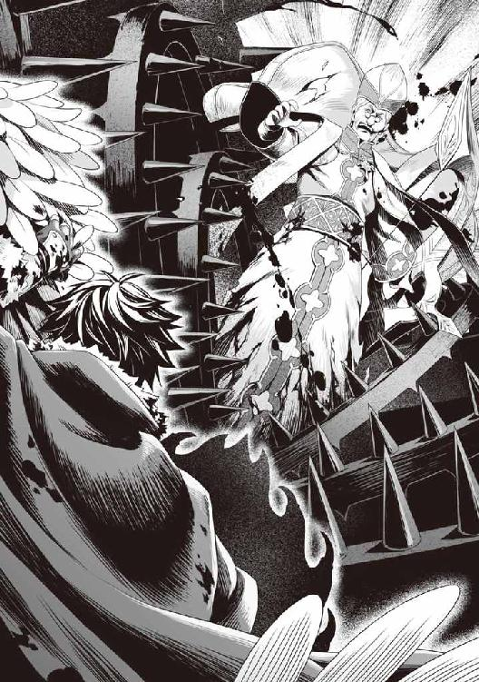
「なんの、この程度──」
最初の一撃目では教皇も大ダメージを受けるだけで済み、即座にトラバサミを破壊するためにスキルを放ったが傷一つ付けることはできなかった。
二度、三度の開閉で伝説の武器の複製品に亀裂が入り、四度目の開閉で金属を砕く音が響く。それを嘲笑うかの如くトラバサミが何度も開閉を繰り返す。
何度も、何度も......高速で繰り返される。
これは......エグイ。
「ぐは......がは──た、たす......か、神......」
そして、殆ど肉塊となった教皇を噛んだままトラバサミが蟻地獄の如く地面に沈んで行き、消えていった。
「......」
その光景を俺達は息を呑んで見つめる。
カースシリーズのスキルはどれも血生臭いものばかりだ。精神を侵食する盾だからだろうか。
これを見た後では、フィトリアが言っていたことに同意するしかない。
常用して良いものではないと今更になって気付かされた。
「きょ、教皇様が悪魔に負けてしまった......」
絶望したかのように三勇教徒達は呟く。
「......貴方達はもうお仕舞いです」
雄たけびと共に立ち直った討伐軍が三勇教徒達に突撃し、捕縛していく。
今、俺達の勝利は確実なものとなった。
しかし......俺は討伐軍を見送ると同時にフィーロからずり落ちた。
ラースシールドによって追加された新たな攻撃スキル、ブラッドサクリファイス。
強力な力だが、その代償はあまりにも大きかった......。
「ごしゅじんさま!?」
俺の血に塗れたフィーロが心配そうに俺を抱える。
盾はいつの間にかキメラヴァイパーシールドに変わっていた。
「ひどい傷！ 誰か！ ごしゅじんさまを助けて！」
フィーロの叫びに討伐軍の司令官らしい女性が駆けつけてくる。
「母上!?」
メルティが司令官に向けて驚愕の声を上げる。
そういえば、討伐軍の先頭にいるコイツは......あのごじゃるがメルティを連れていた時と同じ姿だ。
扇で隠していて口元はよく見えないけど間違いない。
「此度の活躍、目を見張るものでした。盾の勇者様」
教皇の足止めをしてくれたのはコイツだろう。
「皆の者！ 盾の勇者様の治療を最優先にするのです！ これは王命である。必ず盾の勇者様を生かしなさい！」
「「「ハッ！」」」
討伐軍にいた治療班が俺の元に来て、それぞれ魔法の詠唱を始める。
「ドライファ・ヒール」
光が俺を包み込む。しかし......一向に痛みが取れる気配がない。
「こ、これは呪いですか......しかしこれほどまで強いものは......」
治療班が驚愕の表情を浮かべながら解呪の魔法を唱えた。聖水を振りまかれる。
だけど......効果は無いようだ。
「精密検査をします！ 皆さん急いでください！ さあ、貴方も！」
治療班と女王がフィーロに指示を出し、急いで連れていく。
「う......」
体中が軋んで悲鳴を上げている。だけど、ここで意識を失うわけにはいかない。
まだ女王が敵か味方かわかっていないのだから。
「お、まえが、女王か」
「ええ、私はメルロマルク国女王、ミレリア＝Ｑ＝メルロマルクです。助けに来るのが遅れて申し訳ありません」
「......おそ、すぎるだろ」
何にしてもだ。権力があるのだろう？ 国の本当の支配者なのだろう？
今回の事件の全貌を知っているのだろう？
出てくる言葉は山ほどある。
お前の夫と娘はとんでもないクズだとか怨嗟の感情が幾らでも出てくる。
「本当に......この度は、全て私の落ち度です」
「母上......」
「ママ、なんでそんな奴に謝っているのよ！」
女王はビッチが指差して弾劾するのを見て、震えながら額に青筋を浮かべる。
「マルティ......アナタには城に戻ってから言うことがあるので覚悟していなさい」
ゴゴゴ......と、辺りの空気が震えている。
俺が怒られているわけでもないのに、何か背筋が凍りつくような感覚が走る。
パチンと指を鳴らすと背後に影が現れてビッチを捕縛した。
「ちょっとママ！」
「その愚か者を黙らせなさい」
「ハッ！」
「無礼者、ふぐ──」
ビッチの口に布を当てて連行していく。
「マ、マインに何をするんだ！」
呆気に取られていた元康が異議を申し立てる。
「私はそのマイン......マルティの母です。私の権限で城への同行を指示したまでのこと。さあ勇者様方、此度の戦いは終わったのです。休みながらメルロマルクの城へ帰りましょう」
オーラを発する女王に元康をはじめ他の勇者達も黙り込む。
まあ、文句を言うほどの余裕は今は無い。それほどまでに苦戦したからだ。
「さて、盾の勇者様......いえ、ナオフミ＝イワタニ様。アナタの治療を最優先で行わせていただきますので、どうか安静にしていてください。すぐに準備を致しますので」
治療員が様々な魔法や薬、聖水の等の道具を持ち寄ってくる。
元の世界で言うところの救急車で緊急搬送をされているような気分だ。
「しか、し......」
どうしてお前がここに来ているのか。南西の国にいるのではないかと様々な疑問が出てくる。
「なぜ、私がずっと国外に居て、貴方を擁護できなかったか、さらに南西の国に居るはずなのに討伐軍を指揮していたのか......色々と話すことは山ほどあります。ですが、今は傷を癒すことが先決です」
「ナオフミ様！」
ラフタリアが心配そうに泣きながら駆け寄ってきて、俺に擦り寄る。
「心臓が止まるかと思いました！ 大丈夫なんですよね!?」
「さあ......な......」
かなりの深手を負ってしまったような気がする。
立つことも億劫で痛みが全身を襲っているし、倦怠感が凄い。
安全なのを理解したらしいフィーロが人型になってメルティと一緒に、馬車に搬送されようとしている俺に付いてくる。
「酷い傷......早くこちらへ」
フィーロも相当の重傷で四肢に黒い火傷の跡ができていて治療員は治そうと声を掛けた。
「やー！ フィーロはごしゅじんさまと一緒にいるの！」
しかし俺の傷の方が気になるのか、フィーロは彼等の治療を受けるのを嫌がった。
「フィーロちゃん大丈夫。ナオフミはこの人達が治そうとしてくれているの」
メルティが心配そうに声を漏らすフィーロの頭を優しく撫でて囁く。
「でも、ごしゅじんさまが......」
「ナオフミだって、フィーロにそんな傷でずっといられることの方が嫌だと思うわよ？」
フィーロは、そうなの？ って首を傾げて俺を見つめる。
しょうがないな。普段は我がまま放題のくせにこんな時だけ心配性とは。
「良いから治してこい」
俺は搾り出すようにフィーロへ指示を出す。するとフィーロは頷いて治療員の言う通りに治療を受け始めた。回復魔法とは違う、呪いに効果のある魔法を治療師達は唱える。
「なんて強力な呪いなんだ......」
治療師がボソリと呟く。ああ、確かに強力な呪いなんだろうなぁ。
カースシリーズなんていう代物だ。
性能は高いから重要な局面で繋ぎ繋ぎ使ってきた。だけどブラッドサクリファイスの代償は普通の呪いとは大違いだった。フィトリアの言う通りだったな。身の破滅を招く。
「早く『聖域』の準備を！」
セルフカースバーニングを消し去ったアレを使うのか？
ここにいる連中は三勇教の教徒だけではないわけか......何の宗教なのだろう？ 盾教とかだったら威力が高そうだよなぁ。
ぼんやりと考えていると、徐々に目蓋が重くなってきた。
「ナオフミ様！」
「ナオフミ！」
ラフタリアとメルティが俺を揺り起こす。
「ああ。どうした？」
「意識をちゃんと持ってください」
「何だよソレ、まるで俺が死ぬみたいな言い方。大丈夫だ、死なない」
まあ、確かに死にそうな状況だよな。
こんな所で死ぬつもりなんて毛頭ないけど、色々と疲れた。
少しだけ......眠らせてもらいたい。
だが、まだダメだ。確実な安全圏には程遠い。しかし今の状態では動くのもままならない。
ならば......。
「ラフタリア、もしも何かあったらフィーロを使って、メルティと逃げるんだぞ」
「わかりました。ですが、その時はナオフミ様も一緒です」
「悪いな。明日は朝飯が無さそうだ。少し、休ませてくれ」
そんな会話をしていると、視界がスーッと暗くなり、俺の意識は夢の中へと落ちていった。
「ナオフミ様！ 寝てはダメです！ ナオフミ──」
十一話 女王
あれから二日。
「うう......重い」
「すー......すー......」
「むにゃ......ごしゅじんさまー」
「おっきー......い......ふぃーろちゃん......」
目が覚めると俺に圧しかかるようにラフタリアとフィーロ、そしてメルティが一緒のベッドに寝ていた。
「何なんだこれは！ 起きろ！」
起き抜けに三人を起こして叱りつける。三人ともショボンとしつつ、何か笑っている。
俺は緊急搬送され、メルロマルク城近隣の大きな街で治療を受けていた。
ブラッドサクリファイスによって生じた呪いの根は深く、治療に特化した治療院ですらも完全に取り去ることはできないとのこと。
どうしたら治せるのかと聞くと、この呪いは魔法や薬では祓えない呪いで、傷を治すように時間で解けるものらしい。
火傷や傷、体力自体は回復したのだけど、倦怠感というかそんな症状が続いている。
ステータスを確認すると、防御以外のステータスが三割程度低下していた。
完治するまでの間は能力低下するのがブラッドサクリファイスの呪いらしい。
払った代価に応える働きだが、実に困った代償だ。
「どれくらいで治るんだ？」
「見積もりでは全治一ヶ月というところでしょう」
一ヶ月......長いなぁ。波の到来直前じゃないか。
「容態はどうですか？」
そんな風に世の中の不条理を嘆いていると女王が診察を受ける俺に会いに来た。
一応は俺の身体を心配する素振りを見せている。
「......」
いまいち信用できないが......俺が意識を失っている間に治療の指示を出していたのもコイツなんだよな。
女王は治療院の治療師に俺の経過を尋ねている。
「なるほど。では一緒に来ることはできますね」
「どこへ行くつもりだ？」
「城に決まっているではありませんか」
扇で口元を隠しつつ額に青筋を浮かべ、変な重圧を発生させる女王。
「母上、凄く怒ってる......」
メルティが震えながら俺の背後に隠れて様子を見ている。
嫌な雰囲気を感じるが、あれは怒っているのか。
「俺を処刑するとかじゃないよな？」
「そんな愚かな真似をするはずがありません。ぜひ、イワタニ様にその瞬間に立ち会ってもらいたいと私は思っているのです」
「何をするつもりだ」
「それは城に着いてからの楽しみとしていてください。色々と積もる話もありますし、全ては私が行った後にイワタニ様に答えてもらいましょうか」
女王め、断れない状況を作って俺を城へと行かせたいようだ。
そうはいかないと言いたいところだけど、俺の目的である身の潔白を証明するには、コイツが必要になる。
メルティが前に言っていたな。
女王はクズ王とビッチに対して並々ならない怒りを持っているとか。肖像画に八つ当たりをしていたとか言っていた気がする。
何をするかは想像ができる。
その想像通りにしてくれるかはわからないけど。
断る理由も今のところは無い。
まあ、クズの妻にしてビッチの親であることが理由になりそうな気もするが。
「ふむ......」
......まあ、メルティに免じて付いていくか。
「はぁ......付いていけば良いんだな？」
「ナオフミ様!?」
ラフタリアが心配そうに声を出す。
「断ることもできそうにない。行くしかあるまい。こうして治療してもらったわけだし、敵ではないだろう」
「ええ、ぜひ、立ち会ってもらいたいと思っておりますよ」
この手のタイプは利害が一致すれば力を貸してくれる。
何が目的かは知らないが、敵に回るのならばラースシールドをもう一度使うだけだ。
「神鳥の馬車もこちらで預かっております。荷物と一緒に返還しましょう」
「ほんとう!?」
女王の言葉にフィーロが前に出る。
「そうですよ。治療院の前に停めてあるので確認してください」
「はーい！ メルちゃん！ 行こう！」
「うん！」
フィーロとメルティが病室を出て、走り去っていく。
あいつは本当、馬車が好きだよな。二人を見送った後、俺は女王を見る。
「なんか気持ち悪いな」
真意の見えない善意って何か裏があるような気がして仕方がない。
女王が三勇教会を敵に回して、更には盾の悪魔を優遇するに至る、誰もが納得できる理由が欲しい。
少なくとも波と戦わなければいけないなどという、崇高な理由など信じられない。女王の真意を見定めようと、じっと顔を見ていると......女王の手が震え始め、扇が揺れている。なんだ？
「オルトクレイ......マルティ......これで終わりではありませんよ......」
間違いなく女王は激怒している。
突如現れた影がクズ王とビッチの描かれた肖像画を取り出して壁に張った。
すると女王は片手を上げて氷の魔法を放って串刺しにした後、炎の魔法を唱えて肖像画を燃やしつくした。
「まだ足りません。早く......恐怖に歪む顔が見たいですね」
......青筋浮かべてここで暴れるなよ。気持ちはわかったから。
踏み絵じゃないが、自分の夫と娘の肖像画を燃やすほどキレているのが理解できた。
この感情はわかる。うん、信じよう。少なくとも、今だけは。
「お前の指示に従うとしよう」
「感謝します。イワタニ様」
俺の同意を得て、女王は微笑む。その笑みは、強い意志の混じったものだった。
「おお！ マルティにメルティ！ よくぞ盾を倒し、戻ってきてくれた。ところでなぜマルティは縛られ、口に布が巻かれているのじゃ？」
城に入るなり、女王はビッチとメルティを先に行かせて俺達は後に続くように指示を出した。
他の勇者も一緒だ。俺が勇者の中で先頭なのが気に食わないかのような態度だったが。今回の事件の功労者は俺だと女王が大々的に宣言したので文句も言えないようだ。
ちなみに三勇教のその後も教えてくれた。
教皇の死はまだ完全に城下町に浸透しておらず、三勇教会自体はまだ活動している......ように見えて既に封鎖状態だそうだ。関係者は全員捕まえ、護送中だとか。
「しゃべるとうるさいからですよ。この際、縫い付けますかね？」
女王がツカツカと玉座の間に入り、言い放つ。女王の後ろに俺が付いてきているのを理解するなり、クズは怒りに顔を歪めた。
「そやつがなぜここにいる！ 即刻処刑せよ！」
「させませんよ！」
クズの命令よりも女王の方が優先度が高いのか、近衛騎士はクズの指示に従わない。いや、迷ってはいるようだけど、女王の周りにいる騎士に睨まれて棒立ちになっている。
「ぬ。その女王は偽者じゃ！ 捕らえよ！」
「アナタ......私を見間違えるとは......我慢も限界です！」
『力の根源たる女王が命ずる──』
「ぬお!? この詠唱は──」
『真理を今一度読み解き、彼の者を氷結の檻で捕らえ、拘束せよ』
「ドライファ・アイシクルプリズン！」
氷で作られた檻が現れてクズを閉じ込める。
檻の中からドンドンとクズが女王に意見するが、声は通らない。
「まったく......どこまで愚かになったのですか」
パンッと扇を閉じると、氷で作られた檻が消え去った。
「その魔力の高さ、質、確かにワシの妻！ 一体どうしたというのじゃ!?」
信じられないものを見るようにクズが女王に意見する。
「もしや盾に！」
何でも悪いことは俺の所為にしたいのか！
いい加減にしろ。だから、この城には来たくないんだ。
「違います。まったく、アナタはまだ盾の勇者様にそんな力があると思っているのですか！」
クズに近付いた女王はクズの頬を──平手打ちした。
平手打ちされたことに呆気に取られたクズは、ワナワナと震えながら、なぜか俺を睨みつけた。
「イワタニ様の所為じゃないと、さっきから言っているでしょうが！」
「うっ！」
再度平手打ち。
クズが何か言う前に女王は平手打ちを繰り返す。
「私が国外にいる時だけの王の分際で権力を行使し続け、再三にわたって勇者を差別しないように指示したにもかかわらず無視、アナタは戦争をやりたいのですか！」
「じゃ、じゃが──」
「じゃがもへったくれもありません！ 今は人々が一丸となって波に備えなければいけないというのに、アナタという人は！」
反論を許さないというかの如く、女王はクズを叱りつける。
これは他の勇者に、自分の方が偉いというのを見せつけるためだな、と、俺は意図するモノを考えてしまう。
「さて、それでは改めて自己紹介をしようと思います。私こそがメルロマルク国の女王、ミレリア＝Ｑ＝メルロマルクです。このオルトクレイは名こそ偉そうですが、代理の王なので信じないように」
「あ......ああ」
「よろしく......お願いします」
「なんか......すげぇ」
他の勇者共がそれぞれ感想を漏らす。勇者が三人とも完全に呆気に取られていた。
「勇者様方には本日から少しばかりのお時間をもらいたいと私は提案いたします」
「何があるんだ？」
「それは会食時にでもお話ししましょう」
「あの、マインは？」
元康の奴、喋れないように抑えられたビッチを心配しながら質問する。
「喋る必要がないから黙らせているのです。わかりましたか？」
「だ、だけど......これは酷いんじゃないか？」
「酷くありません。ですが、この子の悪あがきが聞きたいのならしょうがありませんね」
女王が指を鳴らすとビッチの拘束が緩んだ。すぐにビッチは自分を縛っていた布とロープを外そうとする。
「ぐぬぬ......」
勇者に無様なところを見られて恥ずかしかった、とでもいうかのようにクズが悔しそうな声を漏らす。
「何が『ぐぬぬ......』ですか！ まだ話は終わってませんよ！」
「ワシは悪くない！ 全て盾が悪いんじゃ！」
「そうよそうよ！」
ビッチがクズの言い分に乗っかる。
「ママ！ 私、そこの強姦魔に強姦されそうになったんだから」
「それがどうかしたのですか？」
「どうかしたのですか......ですって!? ママ、私は初めてなのよ！ なんとも思わないの!?」
「元々処女ではないでしょう？ 私が知らないとでも思っていたのですか？ アナタが処女を喪失したのは──」
「なんだって!?」
元康が信じられないという顔をしている。
「ち、違うわ！ 私の初めてはモトヤス様よ！」
「私が知らないと思ったのですか、おこがましい。そもそも、盾の勇者様であるイワタニ様と本当に関係があったというのなら、まだ救いがあったでしょうに......」
チラリと女王は俺に視線を向ける。
俺が？ このクソビッチと？
「冗談じゃない！」
「もはやアナタは除外ですね。ここはメルティに期待しましょう。苦楽を共にしたのです。可能性はあるでしょう」
いきなり凄いことをぶっ放しやがった。
「何を言っておるんじゃ！ メルティはまだ幼いんじゃぞ！」
「まったくだ！」
クズと意見を同じにするなんて苦痛以外の何ものでもないが、なんで俺がメルティと関係を持たなければならない。
ん？ なんだ？ 錬や樹が微妙な顔で俺を見ている。
すごく心外だぞ。俺はロリコンじゃない。こんな子供に欲情するほど落ちぶれてはいないぞ！
「そうです！ 何を言っているんですか！」
「何の話ー？」
「フィーロちゃんは知らなくて良い話だからね！」
まあ、コイツ等は放っておこう。
「いいえ！ メルティは盾の勇者であるイワタニ様に娶らせるべきです」
「なんじゃと!?」
「本当にわかりませんか？ 長年争ってきた宿敵を組み伏せる、これ以上にない絶好の機会だったのですよ？」
「どういう意味じゃ？」
「どういう意味ですか？」
「ああ、俺達も気になっているところだ」
不思議そうに尋ねるクズ王に樹と錬が続いた。
「それは──」
これは俺にもわかる。俺の想像通り、女王は説明した。
シルトヴェルトはおそらく、盾の勇者を信仰している。いわばこの国の宿敵だろう。
その信仰対象である盾の勇者......つまり俺をメルロマルクの王女が婿にすれば、聖人を抱えている国となる。内心は知りようもないが、少なくともシルトヴェルトの国民を味方に付ける雰囲気を作れるだろう。何の状況も知らない盾の勇者に媚び諂って、子供でも産めば完璧だ。
後はなぁなぁで友好関係を築けばいい。そうすれば事実上の属国だ。
「そんなことに娘を利用して、心が痛まないのですか！」
樹が憤怒したように一歩前に出て言う。
「利用ですか......問題ありませんよ。勇者様方の世界には政略結婚は無いのですか？」
「過去にはあったと聞きますが、見過ごせる問題じゃありません」
「問題ありませんよ。メルティとイワタニ様とは良い関係が築けていることを、見て判断しております......メルティ、盾の勇者様であるイワタニ様を落とすためにがんばりなさい」
「い、嫌よ！」
女王の縁談話にメルティは顔を真っ赤にして嫌がっている。
まあこの年頃で政治に使われるのは嫌だろうよ。
無論、この国を栄えさせるような行動を俺が取るはずもない。
「おや？ 影の話ではメルティの方は脈があると聞きましたが」
「節穴だな」
「なんですって！ わたしに魅力が無いっての!? あ......」
「なんだよ。あー......子供として見られていたのが、そんなに嫌だったのか」
面倒な年頃だな。
「......わかりました。これだけ見せつけられたならしょうがありませんね」
なぜか樹が納得して下がった。
「弓の勇者様！ なぜ引き下がるのですか！」
「やはり脈があるではないですか。どうですか？ メルティは将来女王ですよ？」
「俺はこの世界に骨を埋めるつもりはない」
「問題ありません......メルティがイワタニ様の子を授かれば良いのです」
......嫌なことを言う。
要するに盾の勇者と王族の間に子供がいれば俺は元の世界に帰っても良いということだ。
なるほど、外交が得意と言っていたのはこういう強引な手段も含めてなのか。
凄い発想だな。マンガかよ。
「全ては無能な我が夫と娘が摘み取ってしまった好機の芽。イワタニ様に一人で付いていくまではよかったのです。そのまま味方に引き入れ、飼い殺してしまえば、アナタは今頃次期女王の座を揺るぎないものとしていたでしょうね」
「誰がこんなブサイクと。コイツは私を強姦しようとしたのよ！」
なんだと、このクソビッチ。
今度こそ自分の立場をわからせてやろうか──
「「「ブサイクじゃない！」」」
ラフタリア、フィーロ、そしてなぜかメルティが一斉に反論した。
なんなんだ、お前等は。特にメルティ！
「なによ？ 事実を言っただけじゃない。怒るってことは本当だと思っている証拠だわ」
「そうですね。アナタの純潔がもう無いことは紛れもない事実ですね」
「そんな証拠、どこにもないじゃない。モトヤス様に聞いてごらんなさい。私は処女だったわよ」
「マルティ、嘘を吐くなら最後まで騙せる嘘を吐きなさい。槍の勇者様は騙せても、私を騙すことはアナタには無理ですよ......そもそも、アナタという人は昔からそうやっていつも人を嵌めて喜ぶ癖が──」
クドクドと女王はビッチに説教を始めた。しかし、ビッチの方は聞いている振りをしているだけで、実際は聞いていないのは誰の目にも明らかだ。
きっとこれまでも女王の説教を常習的に受けていたのだろう。
「妹が陰謀に巻き込まれたというのに、アナタは擁護せず便乗し、あまつさえ教会に引き渡そうとする始末」
え？ ビッチは便乗していただけで教会派じゃないのか？ とすればクズもか？
もしかして、この二人、本当にただのバカなんじゃ......。
「大方、次期女王の座は自分のものとでも思っていたのでしょう」
「ち、違うわ！」
いやぁ......あの魔法詠唱を考えるに思ってるだろ。実はあそこのフレーズは自分を指し示す職位、もしくは自身を指せばよいだけだったりする。
それを次期女王が──なんて発しているのはビッチに国の女王になる確信がなければできるものじゃない。聞いた瞬間、内心絶句したしな。
「そうだ！ マインはそんな子じゃない！」
元康が擁護するが、女王は聞き入れる様子はない。
「嘘おっしゃい！」
「本当のことよ！」
「ならば真実かどうか、その身で答えてもらいましょうか」
女王の指示で騎士がビッチの肩を掴んで押さえつける。城の魔法使いが見覚えのある奴隷を登録するためのインク瓶を持ってきた。
「な、何をするつもりだ！」
元康が場の不穏な空気に気付き、声を上げる。
城の兵士が元康とビッチを遮って、魔法使いがビッチに儀式を始める。
女王が針で自らの指を刺し、血を滲ませ、インクに血を落とす。
あれは......何をするのかわかった。
「い、いや！ 放しなさいよ！」
「身の潔白を証明できたらすぐに解放しますよ。勇者様方もご理解ください」
いや、無理だろ。とは思うが錬と樹は、その状況を唖然とした表情で見ている。
さすがのビッチも、何をされるのか察したのだろう。一生懸命暴れるが、兵士達がそれを許さない。逆に元康は何をするのか理解していないが、取り返しのつかないことが起こるのだと理解して槍を構える。
「やめろおおおおおおおおおお！」
させるか。
「シールドプリズン！」
ここぞとばかりに盾をラースシールドに変えて怒りを抑えつつ、というか怒りをコントロールして元康を閉じ込めた。
錬と樹が一歩踏み出そうとしたが、城の兵士共に遮られて躊躇した。
「い、いや！ 来るな！ 私を誰だと思ってるの！」
「第一王女ですかね。それも身の潔白を証明できればですが」
そう言うと女王は片手を下げて、命令した。
ビッチの胸にインクが落とされ、紋様が全身に刻まれる。
「キャアああああああああああああああああああああ！」
しばらくビッチが絶叫を上げた後、紋様は何事もなかったかのように消え去る。
ラフタリアのとは違うな。ラフタリアのは刺青みたいだけど、ビッチのは何も残っていない。
「高度の奴隷紋です。普段は見えませんが条件を満たすと浮かび上がり、対象に罰を与えます」
フィーロの魔物紋の人用みたいなものか。
「条件はイワタニ様への攻撃です。絶対に手を出すのではありませんよ！」
ビッチが涙目でキッと女王を睨みつける。
「マインに何をするんだ！」
盾の檻から解き放たれた元康がビッチを守るように立って女王を睨む。
「さて、マルティ......ここで質問です。『アナタはイワタニ様に強姦されかけたのですか？』」
これは......白状させるのには上手い方法だ。俺も過去、ラフタリアに施したことがある。
それは虚偽の報告ができないからだ。
ここで嘘を言うと奴隷紋が作動して奴隷を苦しめる。
もちろん、その奴隷紋や女王自体を疑ったら始まらないがな。
「そうよ！」
ビッチは眉を吊り上げて肯定した。
即座に奴隷紋が浮かび上がり、ビッチの胸を締め付ける。
「イタイイタイイタイ！」
ビッチが痛みに堪え切れずに転げまわる。
「マ、マイン！」
元康が抱き起こすが、奴隷紋の効果は消えない。
「真実を言わない限り消えませんよ」
「わ、わかったわ。盾の勇者は強姦をしていない！ いないわ！ 私の嘘よ！」
ビッチが嘘を言ったことを認めると奴隷紋はピタリと消え去る。
「ほら見なさい。やはり嘘ではないですか」
「無理やり言わせているくせに、何を言っているんだ！」
元康が女王に敵意を向ける。まあ、元康にしたら完全に女王は悪役だろうな。
「奴隷紋だったか、それで嘘を言うように命じているんだ！」
「では槍の勇者様も一時的にマルティの所有者として登録致しましょう。そうすれば奴隷紋がどのようなものかをご理解できるはず」
「あ、ああ！ 無実を証明してやる！」
元康は女王がビッチを奴隷化させたのと同じようにインクに血を垂らしてからビッチの胸に塗らせ、登録した。
「これで、奴隷登録がどのようなものかをご理解されたはず。項目をご確認ください」
元康が、目で何かを追っている。そうして確認が終わったのか、頷いてビッチに尋ねる。
「マイン。お前はナオフミに強姦されそうになったんだよな？」
「え、ええ！ イタイイタイ！」
再度嘘を吐こうとして奴隷紋が作動。ビッチが転げまわる。
「そ、そんな......」
元康の表情がどんどん青ざめていく。
「他にもありますよね。イワタニ様の財産を盗みましたよね？」
「そんなことしてないわ！ キャアアアアアア！」
嘘しか吐けないのかこの女は......。
半ば呆れつつ、ビッチが痛みで転がる光景を俺は見つめる。
「他にも、イワタニ様を追跡中に山に火を放ったのはアナタでしょう？」
ああ、やはり知っていたか。この女の本性を知っていればわからないはずがないな。
「違うわ──ギャアアアアアア！」
もはや絶叫に変わっている。いい加減、認めないと死ぬぞ。
それにしてもどこまでも虚言しかない女だ。
「あの火事がマインの手によって!?」
元康が震え始めた。
「う、嘘だ！ マインがそんなことをするはずがない！」
「キタムラ様も理解した方が良いですよ。この子は生来の嘘吐き。誰かの陰に隠れて他者を貶めるのが趣味なのですから」
「そんな子じゃない！ コイツが悪いんだ！」
元康が俺を指差して言い放った。
信じることと妄信の違いを理解しないと、いずれ足元を掬われるということを理解していないな。
「全ては我が娘、マルティが黒幕であり、我が夫、オルトクレイが権力を振りかざしてイワタニ様を嵌めたのです」
元康は怒りに任せて俺を指差しているが、錬と樹は納得したように頷き始めた。
「言われてみれば......」
「他に証拠は無いのですか？」
「様々な証拠があります。ご確認なさりたいのでしたら開示いたします」
「そこまで自信があるのですか。確かに、今回の事件の時もマインさんは引っかかることをしていました。守らないといけないメルティさんを攻撃したり......あれは何の意図があったのですか？」
「我が国の第一王位継承権はメルティの方にあります。なのでメルティがいなくなれば自分こそが次期女王と踏んでいたのでしょう」
「なるほど、納得できた」
錬が何度も頷く。ああ、そういえば注意していたもんな。
正義の味方ごっこをしていた樹も頷いている。
「尚文の肩を持つのか？」
「持つだろ。一対一の決闘した時だって後ろから魔法をぶっ放して、挙句周りが見て見ぬふりだぞ？ そもそもあの決闘自体が、今考えるとおかしい」
「しかも翌日の援助金の時も難癖付けて援助を取り消そうとしていました。疑うなというのが無理です」
ここにきて馬脚を現したな。
風向きが俺に有利に変わり始めた。俺の無実は証明されたとみていい。
「次にオルトクレイ」
視線を向けるやクズはビクッと仰け反り気味に後ずさる。
「アナタは何をしていたのですか？ 真相を究明せず、この国で特別擁護しなければならない盾の勇者様を裸一つで放り出すなんて......呆れて物も言えません。昔のアナタなら内心ではどんなに嫌っていても飼い慣らす度量があったでしょうに......」
「そ、それは盾が全て悪いんじゃ！」
「マルティは強姦されていません。狂言なのは証明されました。さて、アナタが仰るお言葉は？」
「ぐぬ......盾が悪いんじゃ！」
それしか言えねぇのか！ どこまでも俺の所為にしたいようだな、このクズは。
状況的に見て、火に油だろ。
「まったく......昔のアナタならもっと知恵が回ったでしょうに......昔のアナタなら！」
女王が額に、手を当てている。怒りも通り過ぎて呆れたか。
「どうやら弁護する余地は全くないようですね」
どこ吹く風とでも言うかのようにビッチとクズは視線を逸らした。
俺に謝るとかそんな気持ちが微塵も感じられない。
さすがにイラッとしてくる。女王はどうして俺をこんな場面に立ち会わせたんだ？
コイツ等が反省なんてするはずないだろうに。
しかし、なぜ、クズ王の方は奴隷化させないんだ？ 何か理由があるのか？
まあ......ビッチみたいな嘘を言ってはいないからか？
「これだけは言わないで済む方法を考えていたのですが、しょうがありません」
扇を開いたり閉じたりしていた女王が、その扇をビシッと二人に突きつけて宣言する。
「アナタ達二人から王族の身分を永久的に剥奪します」
「何!?」
「ママ!?」
クズとビッチがそれぞれ驚愕の声を出す。予想より罪が重くて納得できないようだ。
妥当だな。あ、なんか楽しくなってきた。もっと見ていたい。
「ナオフミ様......何笑っているんですか」
「わからないのか？」
「わからなくもないですが......」
「母上......本気だ」
「んー？」
フィーロは頭を傾けている。意味を全く理解していない。
なんだかんだでおバカだからな。食べる事とメルティの事と馬車の事しか考えていない。
ってなんでフィーロの事を考えているんだよ俺。面白い場面だろうが。
「なんでよ！」
「アナタ達の行いが寛容に許せる範囲から大きく逸脱しているからです。本気で反省しているのなら、私がどうにかしてイワタニ様に許しを請うこともできたのですが......」
「許すと思うか？」
「そこを頷かせるだけの誠意を見せる手段も色々と考えていたのですよ」
誠意ねぇ......興味はあるが、今の方が楽しい結果になっているぞ。
「私が王族じゃなくなったら、この国はどうなるのよ!?」
「何も損失はありません。はっきり言いましょう、アナタは国のゴミです」
「うわ......」
「親が子供になんてことを言うんだ！」
元康が怒り狂って言う。
「わからないのですか？ これは自業自得です。むしろメルティこそが国を継ぐのにふさわしいと証明されました。マルティ、アナタは負けたのです」
まあ、ビッチよりはメルティが継承する方が将来性あるよな。
ちょっと猪突猛進だけど、今回の事件で大きく成長しただろ。
なんで俺にだけピーチクパーチクうるさいんだろうな。
「ワシが王族ではなくなったら関係各所が黙っておらんぞ」
「既に黙らせました。私がこの三ヶ月、何もせず静観していたと思われているのでしたら、大間違いです」
「な──」
クズは驚いて声も出ないみたいだ。パクパクと何度も口を開くばかりだ。
「そもそも、どうして独断専行で勇者召喚を行ったのですか！ 話はソレからですよ」
「......どういうことだ？」
「勇者様方も疑問に思いませんでしたか？ 国の最高権力者がなぜ、召喚に立ち会えなかったのかを」
「確かに」
この言動から、そんな重要なことを他人にやらせるような人物には見えない。
もっと狡猾に俺達を気持ち良く誘導して便利に利用することだってできたはずだ。
少なくとも、この世界に来たばかりの俺程度なら簡単に操れるだろう。
それこそ恋愛結婚に見せかけた政略結婚も可能だったはずだ。
「まず、前提として話さなければいけない問題です。この国は......四番目に四聖勇者の召喚を行うと世界会議で決めた国なのです」
「ちょっと待て！」
いきなりとんでもない発言が飛び出したぞ。
複数の国が勇者を呼ぶ？ 順番がある？
言葉の意味だけだと、この国、とんでもないことを仕出かしているぞ。
「詳しく説明しろ」
「ええ」
女王の話はこうだ。
世界中で波による被害が報告され、各国の王が集まって会議をすることになった。
もちろん、メルロマルクとシルトヴェルトのような犬猿の仲にある国もあるが、今は予言が真実であり、世界が終焉へと向かっているという問題を解決しなければいけない。争うのはその後で良いだろうと概ね話は決まった。
その会議によって決定したのが、メルロマルク国は四番目に勇者召喚を行うというもの。
ちなみに勇者召喚で出てくる勇者は一回に大体一人らしい。多くの場合呼んでも出てこない。
もちろん、召還された勇者は他の国へ出向することになる取り決めらしい。
「で、それがなんでこの国が呼んでしまったんだ？」
「勇者召喚は聖遺物の破片を使って行うのが通例で、定められた時間に定められた儀式によって呼び出されるのですが......」
女王が留守にしている間に独断専行で四聖勇者の召喚を行ってしまったのだという。
「三勇教は昔からこの国の宗教として根付いており、私の知る限りでは三勇教会は比較的保守的な組織でした。ですが、予想外に大きな策を取ってきました」
「それって相当な問題なんじゃないか？」
世界を救う勇者を一ヶ所で呼んでしまったとか。
「ええ......ですからこの国に非難が殺到しましたよ」
「というかこんな戦争を起こしかねない奴に国を任すとか何考えているんだ？」
そこが大きな問題だろう。任せる相手が悪すぎる。
それは錬も樹も同意なのか頷いていた。その仲間達は何か言いたそうだけどな。
この辺りはメルティから聞いたな。ラフタリアが住んでいた村の管理をしていたんだったか有能な奴が波で死んだんだったか。
「こんなとは何じゃ！」
「黙らっしゃい！」
女王の一喝でクズが黙る。
「マインのお父さんはそんな酷い人じゃないぞ！」
元康が異議を唱える。
「元康さんは優遇されていたからそう感じるだけですよ。僕達は納得しています」
「そうだな、確かに差別を受けていると思った」
「そこにも大きな問題があったのですよ。波が起こる前も私は外交を担当していました。内政が優秀で、右腕にしていた者に国を任せていたのですが」
「ですが？」
「波で亡くなってしまいまして......あの者は亜人からの人望も厚かったのですが......」
「質問して良いか？」
「なんですかアマキ様？」
「なんで亜人優遇をする貴族なんて亜人排他主義のこの国で召し抱えていたんだ？」
錬の質問に女王は扇を口元に当てて答える。
「シルトヴェルトとの戦争を回避するため、亜人との和平政策を進めていたのです。同様にシルトヴェルトも人間の保護地区を設立しています」
なるほど、戦争にさせないために歩み寄ろうとしている風に見せかけていたのか。
「妙に素直に答えるのですね」
樹が不審な目で女王に尋ねる。
「無理やり召喚してしまった、この世界の代表として最大限の誠意だと思ってください。偽りなく、誠意を見せなければ勇者様方は協力したいと思わないでしょう？」
女王の返答に樹も錬も顔を見合わせてから頷く。
「但し......既にオルトクレイから槍の勇者様を筆頭に、剣、弓の勇者様はそれなりの誠意を見せられたかと思います。なのでこの後、盾の勇者様を優遇しているように感じたのでしたらその分を分配しているとお思いください」
「わ、わかった」
「確かに、尚文さんは無実だったのですから釣り合いは取れていませんね。わかりました」
「話は戻ります。オルトクレイの所為で亜人保護区が壊滅したということです」
女王はクズの足を思いっきり踏みつける。
「ぐぬううう......」
「その報が私の所に舞い込んだのが勇者召喚を行ったという報せと一緒という始末！」
女王はクズの頬を何度も平手打ちする。
「ふぐう──」
「後任の頼れるものは愚かにもこのダメな夫が左遷させる始末！ 他にも謎の変死とふざけた事件が続きましてね。犯人は三勇教会でしたが！」
「ぐふ！」
「しかも勇者を旅出たせた翌日に、よりによって盾の勇者が犯罪疑惑！」
「ぐは！」
「さらには盾の勇者を差別しているという事実！ その所為で何度戦争になりかけたのか理解なさい！」
「げほ！」
「そして第二の波の終結時、盾の勇者の奴隷を没収しようとはどういう了見ですか！」
うわぁ......切れてるな。
「アナタの独断専行でシルトヴェルト、シルドフリーデンでは暴動が起こって戦争ムードになったんですよ！」
なんか......女王に同情してきた。
頼れる奴がどれも死んだりいなくなったりで、孤軍奮闘で国を守ったと。
すげぇ。どんな話術を使ったらそんな真似できるんだ？
タダのヒステリーで夫を平手打ちしている二十代の女性にしか見えないのに。
というか......ビッチとメルティの母親なんだよな。若作りだな。
「挙句の果てにメルティに会いたいとはどんな我がままですか！」
「ぐぬ！」
「あんなあからさまにアナタが要求するということは近くにいる者に唆されたのでしょう？ それが今回の事件の始まりにして顛末です！」
女王は激怒しながら宣言する。
「三勇教は邪教と認定！ メルロマルクは四聖教を国教とします！」
「な、なんじゃと!? 建国以来の伝統を放棄するのか！」
「問題ばかり起こす邪教に存在価値はありません！」
四聖教？
「ってなんだ？」
「四聖勇者を平等に信仰している宗教よ」
メルティが説明する。
まあ普通に考えて世界を救う四勇者の伝説がある国が沢山あるんだから、あるよな。
「元々三勇教は四聖教から分離したのだけど......続きはこの国の始まりから説明しなきゃいけなくなるわ」
「へー......」
シルトヴェルトに盾の宗教があるのなら、別の国では四つの武器全部を信仰している方が自然だ。
つまりメルロマルクは、昔から争っているシルトヴェルトの信仰する盾の勇者が嫌いと。
それこそ敵の国が信仰しているものは悪魔、アイツの宗教は邪教、自分達の宗教は正しい宗教ってな具合で三勇教会が生まれた感じか。
「ふう......」
一頻りクズを罵り、平手打ちをしてすっきりしたのか女王は扇で口元を隠して俺の方に振り返る。それは俺がやりたいことなんだが。
「他にもいろいろと......ありますが、後でイワタニ様に教えましょう」
「いや......そんな武勇伝聞きたくない」
「マインや王様はそんな酷い人じゃない！ 全て偽りだ！」
先ほどから黙りこんでいた元康が一歩踏み出し、暴れ出しそうになりながら言い放つ。
まだ言うつもりか。
「ですが、納得できることは多いですよ。僕達も殺されかけたのは事実ですし、それが今回の事件やその他の状況が事実だと証明しています」
「ああ、色々な所で調べたが、尚文が差別される謂れはないと納得できる証言が沢山あった。むしろよくここまで国内の評判を得たと思う。洗脳の盾じゃなく、尚文達が自力で掴み取った名声だと思う」
樹と錬が俺を擁護するように答える。
「俺の不始末でやらかしてしまった疫病を鎮めてくれたのは尚文だ。ならば信じる理由としては十分だと思う」
「ええ、教皇のあの武器を見れば僕達から依頼の報酬を奪い取った偽者も誰かわかります」
「ぬぬぬ......」
悔しげに握り拳を作った元康が俺を睨み続ける。
「キタムラ様、これ以上の異議を申し立てるのでしたら、証拠となるモノを見つけてからにしてください」
「......わかった。今すぐにでも証拠を持ってくる！ マイン、行くぞ」
「残念ですが、マルティにはまだ話があります。キタムラ様は話がすむまでお待ちください」
女王がそう呟くと城の騎士が元康に玉座の間から出るように詰め寄る。
「そ、そんな！ マイン！」
「槍の勇者様。どうかお下がりください」
と敬語で元康は玉座の間から追い出された。
さすがにこんな場所で暴れるほど愚かではないか。
「すぐに話が脱線するな」
「申し訳ありませんね」
「元康さんの所為ですから気にしない方が良いかと」
樹も元康が優遇されていて差別を感じていたのか止めない。
「とりあえず、夫と娘にはまだしなくてはいけない罰が山ほどあるということです」
クズとビッチの奴、真っ青だ。年貢の納め時とはこの事だな。
「不満ですか？」
「あ、当たり前じゃ！」
「そうよ！ ママ！ 私は悪くない！」
「......親子の縁は先ほど切りましたよ？ 文字通り勘当です。どこへなりとも......いえ、国への借金と罰金を払いなさい」
衝動で追い出しそうになった女王は一拍置いて言い放った。
そして金額の書かれた紙をビッチに手渡す。するとビッチは先ほどよりも更に顔を青くした。
ビッチでアバズレな上に金遣いまで荒いのかよ。想像通りだな。
「こんな金額、払えるわけないじゃない！」
「アナタが何かある度にギルドで要求した金銭です。勝手に国庫から引き出して......逃げられるとは思わないことです。他、山火事を起こした責任も上乗せしてます。アナタはこれから文字通り奴隷のように国へ奉仕するのですよ......」
「無理よ！」
「嫌なら勇者と共に世界を救ってみなさい。ちゃんと活躍したら考えてあげましょう」
女王はビッチを黙らせると、今度はクズの方を見て。
「なに他人事のような顔をしているのですか！ アナタもですよ、オルトクレイ」
ビクリとクズも仰け反る。本当、コイツは女王に頭が上がらないんだな。
ならもっと上手に立ち回れよ。
「国の将として波の最前線で戦うか、冒険者業に身を落とすか選びなさい」
「く......妻よ、女王よ。ワシは騙されておっただけじゃ。どうか慈悲を」
誰に騙されてんだよ！ 三勇教か？ それとも俺か？ ビッチを犠牲にするのか？
「そうよ。ママ、猶予を頂戴」
「与える慈悲も猶予も過ぎました。......ああ、良い方法がありますね」
女王は俺を手招きする。待ってましたと言わんばかりに俺は前へ出た。
「イワタニ様、この二人にどんな罰を与えましょうか？ 貴方にはその権利があります」
「死ね！ 死刑だ」
十二話 年貢の納め時
ほぼ脊髄反射で口から出た。無意識下でも嫌悪しているんだな、やっぱり。
正直、殺す以外の選択肢が存在しない。お前等への恨みは死以外では解消されないんだ。
「死刑って、これだけの騒ぎを起こした主犯ならしょうがありませんね」
「そうだな。どうやら国際的な犯罪行為らしいからな」
樹も錬もこの辺りは冷酷だな。
まあ、どうせ他人だし、自分は責任を負うわけじゃないから好き勝手言ってくれる。
「ぐぬ！ 貴様──」
「ふざけるんじゃないわよ──」
女王が片手を上げて二人を黙らせる。
「本当に......殺すことで満足できますか？」
女王を包む魔力の流れが怪しく俺に流れ込む。
背筋が凍りつくとはこの事だ。禍々しいとは......こういう相手に言うのだと本能的に悟る。
「殺すのは前提ですよ。ですが存分に苦しめて、達成させ、解放された笑みを浮かべた瞬間に殺すというのも一興ですよ」
「お前......いや、話を続けろ」
「殺すのは生ぬるいと言っているのです。もしも役に立ったのなら犬を可愛がるように頭を撫で、飼い殺すというのも......楽しめますよ」
身内であろうとも情は入れないとは、この国の深淵はもしかしたら女王にあるのかもしれない。
「あの方が真の黒幕なんじゃないですか？ 僕にはそう見えます」
「そうだな、さっきの発言は撤回するか？」
コロコロと主張を変えるな！ 勇者共！
「というのは私からの最後の情だと思ってください」
「ああ......そういうことね」
つまり、殺すのはどうか勘弁して欲しい。それ以外はどんなことでも叶えると。
「三勇教会の不祥事に続いて、女王の強権によって元、とはいえ王家の者を安易に処刑すれば、諸外国からの評価にも影響します」
「世界を困らせた無能二人を磔にする方が外国に示しが付くんじゃないか？」
「盾ぇえええ......貴様ああぁぁ......！」
唸っているクズを無視して女王は告げる。
「通常であればその通りでしょう。ですが、オルトクレイには当てはまりません」
「なぜだ？」
「この愚か者も昔は凄かったのです。昔は......今や老害でしかありませんが、国外にも名が知れ渡ってしまっているので、殺すに殺せないという始末......」
このクズが何をしたかは知らないが、概ね理解できた。
知名度がありすぎるんだ。
そもそも、今まで王配にしては随分と権力を持ちすぎていると思っていたんだ。
過去に一派閥作れるほどの実績があったのか。関係各所が黙っていないとか言っていたからな。
そんな過去の栄光を奪われ、汚され、それでも生かされるこの男を上から眺めるのも面白いかもしれない。
「わかった。お前の案に乗ろう」
「ありがとうございます」
「但し、この二人に生き地獄を味わわせろ。これは最低条件だ」
「ええ、もちろん......では、手始めに最初はどのような罰がよろしいですか？」
そうだな......殺しさえしなければ良いんだよな。
「手足をもぐという手もあるが......」
「ナオフミ様......」
ラフタリアが何かを言いたげな目で見てくる。
確かにそれをできるだけの権利もあり、被害にもあっているが、やりすぎだと思っているのだろう。
......どうするかなぁ。引くに引けなくなった。
かといって今を逃せば、やっと回ってきたチャンスを棒に振ってしまう。
「......ナオふみ様」
ビッチが涙ぐみながら両手を合わせて懇願してくる。ラフタリアともメルティともイントネーションが若干違う俺の呼び方だ。ふみが踏み！って聞こえるのは空耳か。
涙を流し、瞳が光り輝いている。そして若干頬が紅潮していて、ここだけ見ると反省しているように見える。
すげぇ演技入ってる。本質を知らない奴だったら絶対騙されるな。
というかこの顔で元康に迫ったんだろうなぁ。
つーか、初めて名前で呼ばれたんだが......。
「どうか復讐なんて馬鹿な真似はおやめください。復讐は復讐を生むだけです。ここでナオふみ様が我慢すれば良いだけのことなのです。できれば、女王にもっと温情を」
「うわ......」
錬がドン引きするような目でビッチを見ている。それは樹も同じなのか、呆れたように頬を掻いた。メルティは額に手を当てて俯き、ラフタリアは半眼で呆れかえっている。フィーロは......首を傾げるなよ。
で、俺はというと。
........................ッフ。
「そうだな......」
その日、伝達兵が国中に馬やフィロリアル、騎竜、様々な乗り物を走らせ、余すことなく村や街を巡ってこう告げた。
「此度の事件の責任を取り、メルロマルク国王オルトクレイと王女マルティは永遠に名をクズとビッチに改められた！ 誤った名を口にする者は如何なる理由があろうとも厳罰に処する！」
そうして急遽、看板が各地の都市、街、町、村に立てかけられ、文字でも同様の内容が記載されている。
この状況に身分や立場に関係なく、人々は揃って同じ言葉を口にした。
「「「はあ!?」」」
「誰が我慢なんてするかボケ！」
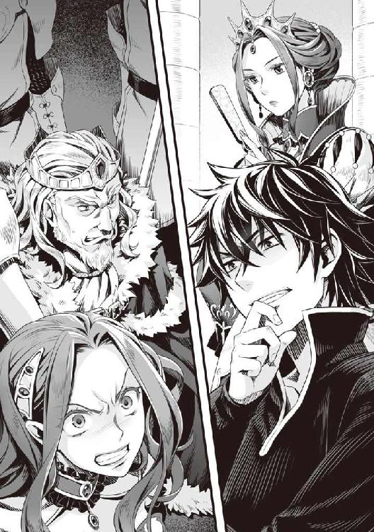
「なんてことをしてくれたのよ！ この悪魔！」
ビッチの顔が怒りにものすごく歪む。
これからこいつ等は一生国民に、ビッチ姫がさーとか、クズ王がーとか言われ続けるのだ。
いやぁ爽快。まさかこんな瞬間に立ち会えるとは思いもしなかった。
「自業自得だろ......」
「僕もそう思いますよ。確かに酷い罰ですが、良い落としどころだと思います」
錬と樹が呆れを通り越して呟いた。
「貴様──────────！」
クズが真っ赤な顔を更に赤く染めて怒鳴った。
「ハッハッハ！ その顔が見たかったんだよ！」
クズもこれで公私共にクズという名前が定着したな。
「復讐は復讐を生むだけ......我慢すれば良い。とても素晴らしい言葉ですね。アナタが実践しなさいマル......いえ、ビッチ」
「うるさい！ 絶対許さないわ！」
今にも殴りかかろうとするが女王の側近がそれを許さない。
「ああ、ビッチには冒険者としての偽名がありましたね。そちらはどうしましょうか？」
「アバズレ」
「アバズレって......」
錬と樹はなんか黙りこんでいる。かなり引いたような顔つきだ。わからなくもない。
「ではこれからその名前を冒険者名として登録しておきます。前の名前では施設も何も使えませんのであしからず」
「殺す！ 隙あらば殺してやるわ！」
すげぇ殺意の篭った発言だけど爽快以外の感情が出てこないな。
ざまぁ！
「やれるものならやってみろ。俺に手を出したらそれこそ死刑だがな！」
「ええ、ですから権利を剥奪したのですよ。そんな真似をすれば奴隷紋で死にますよ」
なるほど、仮にも王族が女王によって処刑されるというのは威信にも響く、だから王族籍を一度剥奪したという事実を周知のものにして、問題を起こしたら殺す。何とも効率的だ。好きだぞ、そういうのは。
しかもビッチは俺を直接攻撃できない制約付きだ。攻撃力の無い俺の気持ちを味わわせるとは考えたな。
「いやいや、さすがにそれはやりすぎかと」
樹が意見しているが、そんなことは知らん。
「いやぁ爽快！」
「さて、後はイワタニ様に協力してもらうための願いを叶えませんとね」
「何の話だ？」
「騒動の前にイワタニ様はこのクズに土下座をして懇願しろと言ったそうじゃないですか」
女王が手を叩くと影や騎士がクズとビッチを拘束して無理やり跪かせる。
「ちょっとやめなさいよ！ 私を誰だと思っているの──」
「そうじゃ！ ワシは──」
「冒険者と将軍ではありませんか」
押さえつけられて文句を言う二人に女王は立場を理解させる。
「土下座させなさい。ビッチは言うまでもありませんね。従わないと奴隷紋が作動しますよ」
「な、女王よ！ それは──やめ──ワシは下げん！ 下げんぞ、ぬおおおおおおおお！」
「冗談じゃない。なんで私がコイツに土下座なんて、いやああああああ！ イタタ！」
数名で取り囲むようにして無理やりクズとビッチを土下座させて頭を地面にこすり付けさせる。
嫌がるビッチは奴隷紋が作動しても尚、堪えて抵抗する。
そして影がそれぞれの隣でうつぶせになり声を出す。
「どうか──」
「ぬおおおおおおおおおおおおおお！」
「あああああああああああああああああああ！」
クズとビッチが大声で妨害を始めた。
「黙らせなさい！」
女王の指示でクズとビッチの口に布が巻かれる。
「ふむうううううううう！」
「むううううううううう！」
全力で暴れる二人だったが多勢に無勢で抵抗ができないようだ。
「どうか、盾の勇者様よ。力を貸してくれ！ この通りだ」
「盾の勇者様、この国のために戦ってください」
すげー似た二人の声真似で言葉が紡がれる。
「これでどうでしょうか」
「どうでしょうかってお前な......」
無理やり土下座させて頼ませるって......見ている側は爽快だけど......。
すげえ爽快だけど、何か俺が求めていたものとちょっと違うんだよな。
「まあ、反省していないようですし、しょうがないのかもしれませんね」
「ちょっとやりすぎじゃないか？」
樹の呟きに錬が答える。
横やりを入れない限りは見させてやろうじゃないか。誰が悪人かをその目で見るが良い。
クズとビッチが押さえられているにもかかわらず屈辱で狂い死ぬんじゃないかってくらい叫ぶ。
しばらくしてクズは大人しくなったので拘束が解かれる。
なんか......強姦された女みたいに放心して、どこを見ているのかわからない瞳からツーッと一筋の涙を流している。
そんなに俺に頭を下げることが屈辱だったのか？
あ、錬がクズに近づいて顔の前で手を振る。何も見えていないのを確認してから元居た場所に戻った。尚、ビッチはまだ抵抗している。
「まあ、二人の拷問はこれくらいにしておきますか」
女王が手を上げて指示をする。
「玉座の間からつまみ出しなさい」
「「「は！」」」
二人をそのまま玉座の間から追い出す。
振り返ると微妙な顔をしたラフタリアとこれまた渋い顔をしたメルティ、なんか楽しそうなフィーロと......若干俺の評価が低下するのが目に見えてわかる面々がいる。
文句は言わないが、やりすぎだと思っているっぽい。
「それでは此度の罰はひとまず終了となります。アマキ様とカワスミ様とその仲間達は城内でごゆっくりしていてください。イワタニ様はまだお話がありますので残ってください」
「あ、ああ......」
「どうも、こんなことをする方々を信頼はしたくないのですが......」
「待て、国内をめちゃくちゃにした責任としては甘いかもしれないぞ。近くで見ていたから厳しく見えるだけで」
「......かもしれませんね」
と話し合いをしながら錬と樹とその仲間は玉座の間を後にした。
「とまあ、これだけの罰を与えたところでイワタニ様に協力を要請したいのです」
「まあ......」
これだけの事をしてくれたのなら断るという理由があまり無い。
家族を蔑ろにする奴は信用が置けないと断ることもできなくはないが、先にやったのはあいつ等だし。自業自得だろ。
「まず何を話しましょうかね。そうですね。では伝説の勇者に関する話をしましょうか」
女王は語り始めた。
「私は四聖勇者の伝承は割と好きですよ。この国の伝説とは異なりますが」
「どう異なるんだ？」
「イワタニ様もメルティと話して、薄々理解しているかと思いますが？」
女王に聞かれて俺もなんとなく頷く。
「おわかりの通り、というよりもこの国の勇者の伝説に盾はございません。厳密には抹消されて、悪魔として語られています」
「......そうか」
この世界に召喚される時に読んでいた四聖武器書、あの本には盾の記述が無かった。
俺がこの世界に来ることによって刻まれる物語かと思っていたが、おそらく......あの本はこの国の伝承をそのまま記載していた......のか？
どこかおかしい。俺の推理は間違っているような気がするが、ひとまず納得しよう。
「盾の勇者が行った偉業は人間と亜人の仲を取り持ったとあります。その最中、他の勇者と敵対関係にもなりましたが結果的には和解しています」
なるほど、亜人に味方したという伝承があるから亜人には無条件で信頼されるわけなのか。
「おわかりの通り、我が国は人間絶対主義、保護区はありましたが亜人の生活は厳しいものであります」
「......ああ」
亜人は奴隷層だというのもこの国に三ヶ月以上居るから知っている。
「そういった事情があるからシルトヴェルトとは非常に仲が悪く、長い間戦争を繰り返してきた国なのです」
亜人絶対主義で人間を奴隷として扱う国、シルトヴェルト。その国とはまさしく水と油か。
確かに思想的に仲良くなんてなれないだろうなぁ。
「さて、イワタニ様ならおわかりでしょうがシルトヴェルトの国教は四聖教から分派し、盾の勇者だけを信仰する盾教です」
「なんとなくは察していたが、やはりそうか」
「ええ......さて、三勇教とはどのように生まれたのか......イワタニ様ならわかるかと思われます」
メルロマルクとシルトヴェルト、それぞれが四聖教から分派し、三勇教と盾教とに分かれた。
女王の話では長いこと戦争をしている。ということは......。
「俺は敵地真っ只中に召喚されたんだよな」
敵の聖人を勇者として丁重に扱うということは、相当、人間ができていないとできることじゃない。
三勇教の聖典辺りには盾の勇者が行ったとされる悪逆非道の行いが書かれているのだろう。
俺の世界の宗教だって似たようなものだ。敵対する宗教の神は悪魔。
よくある話だな。
クズが俺を目の敵にしているのは実際の戦場でシルトヴェルトと争っていた所為か......？
「調査の結果、全ては三勇教の暴走だというのが明らかになりましたが、それまでの私の奮闘は割愛しましょう」
「同情だけはしてやる」
「ありがとうございます」
「ええ......メルティはこの辺りはわかりますよね」
「は、はい！」
「そして大事な問題なのですが、四聖勇者の召喚によって、事態の重大さを測るという儀式があるのです」
「......一度に四人召喚されたぞ？」
「ええ......ですから問題は最重要項目となったのです」
「それだけの大問題なのに、何で他の国はこの国を攻めなかったんだ？」
「私の交渉の末......だけではありませんね。これはイワタニ様や他の勇者の方々が大きく関わってきます」
「母上はとても頑張っていました。本当に、熱を出すくらいだったんです」
「メルティ」
「な、なに？」
「なんで敬語なんだよ。もっとピーチクしゃべろ、気持ち悪い」
「なんですって！」
「ふふ、メルティも年相応の面をやっと見せてくれましたか。母としては嬉しい限りですよ。姉のようにとは言いませんが、メルティは幼いころから公を重視していて自分を出せていませんでしたからね」
「ち、違います母上！」
「できれば、大人になるまでイワタニ様と仲良くして自身を理解するのですよ」
「母上！」
メルティがぷりぷりと怒りだした。まあ、これでは話が進まないな。
「何で三勇教は潰される直前まで俺を殺さなかったんだ？」
「盾の悪魔は三人の神によって滅ぼされる、そう踏んでいたのでしょうね」
「他の勇者が育つのを待っていた？」
「勇者様達は少々......言っては何ですが後先考えないところがありますので、上手く操れると思っていたのでしょう」
「まあ、そうだろうな」
未だにゲーム感覚が抜けない連中だ。騙されていたという目に見える悪しか断罪しようとしないし、味方を疑わない。
「もちろん、こちらも行動に出たのですよ。特にイワタニ様には各国から勧誘が大量に舞い込みました」
「それは......」
前にメルティが言っていたのを思い出した。俺が荒れていた時に近寄るなと命じていたという話を。女王も俺に心当たりがあるのを察して頷く。
「まあ、お陰で私も嘘八百で乗り越えられた局面もありましたが」
「......なんだ？」
「勇者は我が国の膿を取り去るために活動中です、とね」
こんな状況で戦争にならなかったということは、相当頑張ったんだろうな。
俺もネットゲームのギルドを管理していたからメンバーの暴走というのを経験したことがある。
火消しをするのはとても骨が折れた。普通だったら解雇すればいいのだろうが、これができないのならどれだけ大変なんだろうか。
「イワタニ様が国内で他の勇者が起こした問題を解決したのが決定的でした」
他の勇者が問題を起こし、その火消しを俺がしたとなれば国中の信仰は揺らぐ。
「他の勇者は何で盾の勇者だけ差別されることを知らなかったんだ？」
「キタムラ様はビッチが近くにいますし、アマキ様、カワスミ様はギルド経由で偽情報を掴まされていたようですね。人間、親しい者から教わった情報を信じます」
親しい者から教わった情報......か。判断材料が少なければそうなるよな。
偽者の情報だと知っていたら断るだろうし、俺の肩を持つだろう。
知らないから、あんなに考えなしなんだ。うん。やはり錬や樹は話が通じたんだ。
「やがて包囲網も整い国に戻ろうとしたところで、この事件です。三勇教が四聖武器の複製品を所持しているとは思いませんでした」
あの武器を持っているかもしれないなんて、事前に察知していたとしても......難しいだろう。
「教皇も愚かな男です......イワタニ様の攻撃を受けた時、複製品を盾に変えれば命だけは助かったかもしれないものを......」
「やはり盾にも変えることができるのか」
「はい。但し、本来の勇者の力の四分の一出たら良い方だという話も聞きます」
「あれで四分の一なのか？」
俺達が成長するとあれの四倍になる......盛りすぎだろう。
どうせ、失われた伝承が一人歩きしているとか、そんなところだ......いや、フィトリアの強さを考えるにあり得る。
正直に言えば俺達はあまりにも弱すぎるのかもしれない。
一秒でも早く強くならねばこれからの波に対抗できない。
「クズも長い平和で腑抜けてしまいましてね。有能でしたが、今は人が嫌がることだけに知恵が回るのですよ」
ああ......やっぱり俺にシルトヴェルトに行って欲しくないからあんな警備網を張っていたのか。
「後は......そうですね。私はできる限りの範囲でイワタニ様を援助していきたいと思っております。それでもシルトヴェルトへ行って真実を告げ、戦争を起こしたいですか？」
「うーむ......」
女王が俺を何と思っていても、擁護しなくてはいけないということか。
だがな......正直に言えば、ここでサヨナラしたいと思う。だけどフィトリアとの約束がある。
カースシリーズの事を思えばフィトリアの話は無視できない。
「ちなみにシルトヴェルトにしろシルドフリーデンにしろ、イワタニ様が行った場合はどうなるか、一応お教えしましょう」
「ん？」
女王の奴、何を話すつもりだ。
「まず、イワタニ様に姫、貴族の令嬢、様々な種族の亜人女性が関係を迫り、ハーレムが形成されるでしょう」
「気色悪い！」
盾の勇者の子供が欲しいとかで押し倒される？ ビッチの所為でそういうのは吐き気がする。
下心満載の女なんて近寄りたくもない。
「望むものなら何でも手に入るでしょう。我が国を攻め落とせと指示すれば国民は喜んで死地へと赴くでしょうね」
うむ......それは良いかもしれない。だけどハーレムはなぁ......。
我慢すれば......良いのか？ でも......この先を生き残るのに勇者との協力は不可欠らしいから、奴らも一緒に行くべきだろう。付いてくるかわからないけど。
「ここまでは良いでしょう。ですが、どの国も権力者と信仰は黒く染まるものです」
「は？」
「原因不明の病に冒され......哀れにもイワタニ様は」
「......よくわかるな」
「過去に呼び出された盾の勇者の末路ですよ」
これは聞きたくなかった。
国民は盾の勇者を信仰しているが、上層部は盾の勇者に好き勝手されるのは嫌ということか。
そりゃあ何も知らない異世界人に国を滅茶苦茶にされるのは面白くないだろう。
まあ相手の考えることもわかるが、俺も死にたくはない。どうしたものか。
「ちなみに、イワタニ様に嘘の勧誘を迫った冒険者がいましたよね」
「......ああ」
この世界に来て数日の事だったな。仲間になるから金寄越せって言った奴だ。バルーンの刑に処してやった。
「その冒険者は数日後に無残な死体で発見されています」
「ゲ!?」
イヤな話を聞いてしまった。
「そして、騎士団長は数日前、何者かに襲われ死にました。犯人はまだ捕まっていません。おそらくは......」
シルトヴェルトって過激な国なんだな。
なんていうか......シルトヴェルトに行ったら天国と地獄が同時にやってくるわけか。
無論、女王の話が全て正しいとも限らないが。
「それよりも、自身で信頼を築いたこの国に留まることの方が安全な策だと思いますが」
「............」
だが、協力したくない理由もある。
今まで受けてきた苦痛はこの程度で消えるものではないし、幾ら女王が権力を使って言い繕ったところで、納得もできない。
女王が先ほどまでしていた懲罰と説明は間接的に関わっているとはいえ、国の権力者として当たり前の事をしただけだ。
それなのにまるで恩情を与えたと言わんばかりで、だから手伝え、というのは虫が良すぎる。
何より俺はコイツの能力は認めているが信用はしていない。
言葉では何とでも言える。
俺に別の国に行かれるのが困るから、ここまでしたに過ぎない。
それにコイツの理屈が正しいのなら、シルトヴェルトやシルドフリーデンにかかわらず、どの国でも厚待遇は受けられる。
メルロマルクだけ特別なわけじゃない。
「............」
これからの事を考え込んでいると女王は俺の目の前で正座した。
「これまでイワタニ様が受けた被害の責任は全て私にあります。虫の良い話だとは重々承知しております」
そして女王は深く頭を下げた。
この光景にメルティは完全に絶句し、それに続いてラフタリアも目を丸くしている。
フィーロも、さすがに周りの空気から何か凄いことが起こったのを察知したみたいだ。
「ですが、私には......いえ、この国には貴方に頼る以外の道がもう何も残っていないのです。私の首を差し出せば怒りを収めてくれると仰るのなら、喜んで差し出しましょう。名を改めよと言うのなら改めましょう」
「母上......」
「ですから、どうか猶予をお与えください。これまでのような不遇な扱いはミレリア＝Ｑ＝メルロマルクの名に掛けて必ず阻止し、魔法契約を致した上で更に優遇すると誓います」
コイツは......。
クズとビッチは強権を使ってでも生かしておきながら、自分は死んでも良いとほざく。
クズやビッチの首が取れるのなら頷きたくもなるが別に女王の首なんて欲しくない。
それだけメルロマルクは世界的に危うい状況にいるということか。
つまりこの国の命運は俺の手に委ねられている。
やろうと思えば世界中を嗾けて、メルロマルクを滅ぼすことも可能だろう。
しかし──
「一度だけだ」
「と仰いますと？」
「前にお前の所の影が俺達を救っている。それに教皇にトドメを刺すのも手伝ってくれたからな」
「ということは」
「お前を一度だけ信じる。だが、どんな理由があろうとも、次は無いからな」
「ありがとうございます」
俺の言葉にもう一度深く頭を下げた女王は感謝の言葉を紡いだ。
この対応は甘いのかもしれない。
それでも全てを疑っているだけでは前に進めない。
フィトリアが俺に注意したことが思い出される。
勇者同士で争っている暇はない。じゃなきゃ、あの巨大な伝説のフィロリアルが俺や勇者を殺しに来る。
勇者の敵は国ではなく、波なんだ。
国同士が争っている間に波で横から攻撃を受けてやられた、では話にならない。
何より前回の波で、勇者三人が事実上敗北したということを忘れてはいけない。
無駄に敵を増やす必要はないだろう。
今まで前からも後ろからも攻撃を受けていた状況が、変わるんだ。
この世界がどうなろうと知ったことではないが、波を倒せれば俺は元の世界に帰れる。
これからは集中して波......グラスとの戦いに備えられる。
それだけでも大きく前進したと考えれば、上出来だろう。
女王は立ちあがって扇を広げて口元を隠しながら話す。
「この話は勇者である三方には秘密にしてもらえますか？ 勇者も人の子です。優遇していると感じられてしまえばどうなるか......」
確かにこれまでの話には勇者三人には話せない内容が多く含まれていた。
錬と元康はわからないが、樹辺りが知ったら暴走しそうなこともある。
何より、少なくとも大きく状況が変わらない限り、俺を取り巻く環境は良くなるだろう。
「わかった。あいつ等の方は......」
「はい。以降、私が責任を持って管理させていただきます」
「そうか、これでやっと敵が一人消えたな......」
「本当にすみません......無関係の方を勝手に呼び出し、戦いを強要しておきながら、この程度の事しかできない私をお許しください」
「それはもう良い。これからどうするか、だ。あの三人にも何か話すと言っていただろう？」
「ええ、その件はイワタニ様も参加していただく晩餐の際にお話しします」
「わかった」
エピローグ ずっと友達
女王は部下に指示を出し、玉座の間の裏にある階段を上っていく。
「メルティ......行きますよ」
「あ......はい」
メルティは最初に俺の顔を見る。
「守ってくれてありがとう......」
他に、メルティが小さく呟いている。言葉の意味は『素直になれなくてごめんなさい』か？
俺は難聴じゃない。だがもっと大声で言え。だから聞き返す。
「あ？ なんだって？」
「......ふん。ナオフミと一緒にいたら命がいくつあっても足りないからせいせいするわ」
「なんだと？」
ここで俺に嫌味を言うとか何様だ！ って姫か。
そのままメルティはラフタリアの方を向いた。
「おい、無視するな！」
「ラフタリアさん、守ってくれてありがとうございます。できる限りラフタリアさんが住んでいた保護区の復興が進むように母上に頼みますから待っていてください」
「はい。お願いしますね」
「この国を、亜人と人間が仲良くできる場所にしたいと今回の旅で痛感したの。絶対に変えてみせるわ」
「まだ俺の話は終わってないぞ！ メルティ！」
「ナオフミ、うるさい」
なんだと！ そのままメルティが次にフィーロの方を向いた時、俺は黙りこんでしまった。
あの気の強いメルティが涙を流していたからだ。
「どうしたのメルちゃん!? どこか痛いの？」
「ううん。違うの......大丈夫だから気にしないでフィーロちゃん。あのねフィーロちゃん、わたしね、もうフィーロちゃんと一緒に居られないの」
「メルちゃんどっか行くの？」
さすがに空気を読んだのか、フィーロが困った顔で聞いてくる。
「メルティはな、俺達と住む世界が違うんだ。もう前のように一緒に旅はできないだろうな」
次期女王を連れまわすというのはさすがに難しいだろう。
「そうなの？」
泣きそうな顔でフィーロはメルティに顔を向ける。
「......うん」
「もう会えないの？」
「......ううん。また会えるよ。何度だって。でも一緒に旅はきっとできないと思う」
メルティが女王に顔を向ける。
女王も肯定するかのように頷いた。
「でも......お別れしちゃうんだよね」
「うん。だけど、フィーロちゃんが来ればいつだって会えるから」
メルティの奴、涙声でフィーロに話をしている。
俺達の旅路がメルティに大きな影響を与えたのも事実だ。
「やだー！ フィーロ、メルちゃんと一緒に居たい！ ごしゅじんさまー」
「お前が当初願った通り、メルティを助けたんだ。ワガママを言うんじゃない」
「でもー！」
「フィーロちゃん。ワガママを言っちゃダメだよ」
「うー......」
メルティは駄々をこねるフィーロの手を握る。
「まだそんなに時間は経っていないのに......何だろう。小さな頃からずっと仲良しだって思える」
「メルちゃん......」
「わたしだってフィーロちゃんと別れるのは悲しい。だけどフィーロちゃんはフィーロちゃんにしかできないことがいっぱいあるの。同じようにわたしもわたしにしかできないことをするわ」
「でも、メルちゃんと離れ離れになるのは、いやー」
「フィーロちゃん」
メルティは泣き始めるフィーロの頬に手をかざす。
「大丈夫、わたしとフィーロちゃんは会いたいと思えばいつだって会える所にいるわ。だって、フィーロちゃんはずっと友達だもん。一番の友達！」
「お別れしても、メルちゃんはずっとフィーロの友達だよね!?」
「うん！ わたしはどこにいてもフィーロちゃんの友達だよ！」
「約束ー」
「約束ね！」
短い間だったけど、フィーロはメルティとずいぶん仲良くなっていたもんな。そのお陰でフィーロも自分勝手な食いしん坊だったのが、友達のために一歩も引かないことを学んだ。
フィーロは良い友達を手に入れた。この出会いはとても重要なことだと思う。
波が終結したその時、俺はメルティにフィーロを預けようと心に決めた。
メルティならフィーロの事を大切にしてくれるだろう、同様にフィーロもメルティを大切にしているみたいだし。
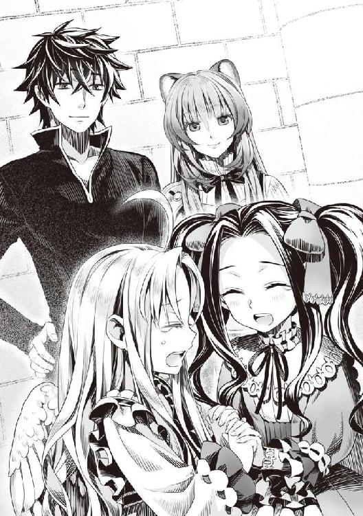
良い友人を持ったな、二人とも。
その会話を見ているとラフタリアが俺の手を握る。
俺は黙ってその手を握り返した。俺は俺を取り巻く環境を覆した。
こうして俺はやっとスタートラインに立ったような気持ちになった。
思えば冤罪を掛けられ、無一文で追い出されて差別された挙句、碌なことがなかった。
だが、これからは違う。
他の勇者と同等に......いや、それ以上の環境を手に入れることができたんだ。
......まだ敵が一つ減っただけだ。波という根本的な問題は何一つ解決していない。
だけど、前よりは遥かに良くなっていると、信じたい。
「いや......」
──信じることができる。
仲間達を見ていると、そう思えるんだ。
短編 恐怖のフィロリアル
「く......なんて強さを持った化け物なんだ！」
「......」
波から現れた化け物を相手にフィトリアは善戦した。
「ここは......撤退するべきか!?」
「逃げられると思う？」
フィトリアは思いっきり力を込めて、波から出現した化け物を蹴り飛ばした。
「ぐあああああああ──」
......強く蹴りすぎた。だけど相手も相当タフ......倒した手ごたえがないまま、波へ消え去った。
普通の人間だったら即死していたはず。だけど相手は耐えきった......と思う。
まるでエネルギーの塊みたいなのだった。フィトリアの武器を使うか悩んだけど、正真正銘、本気で挑むには強さが足りない。
波が静まって、亀裂が収まる。
ここはフィトリアが管理している龍刻の砂時計の波。
人間が立ち入らない世界の波を鎮めるのがフィトリアの役目。
これは......過去の勇者に頼まれたこと。
「ふう......」
「フィトリアさまー！ 魔物退治、おわりましたー！」
配下のフィロリアル達が敬礼して、波から出現した魔物達を殲滅したのを伝えてくる。
「御苦労」
フィトリアは波のあった場所を見つめる。
......なんで四聖勇者は世界中の波に挑むために出て来ない？
いい加減、フィトリアが調べるべきかもしれない。じゃないと世界を守る事ができない。
配下の者に聞いた話だと勇者召喚は行われたはず。なのに、まったく動きがない。
今はまだ、フィトリアがフィトリアの管轄区域を頑張って収めれば良いけれど、人間の管轄区域は勇者なしじゃ厳しくなっていく。
召喚されたにもかかわらず、何をしているの？
わからない。
「「「たいへーん！」」」
「んー？」
そこに、姿を隠して世界巡りをしていた時、フィトリアを守ろうとした奇特な女の子を送り届けるように命じた配下がやってきた。
「ちゃんとあの子を送り届けた？」
フィトリアと友達になりたいと、ドラゴンの巣にまで来てしまったフィトリアを守ろうと戦った子だった。
いまどきすごく珍しい。人間はなんだかんだで相手を従属させたがる生き物だもの。
フィロリアルを都合のいい労働力としてコキ使い、自分よりも強い存在がいると排斥する。
フィトリアも昔、人間共を相手にしていてその部分はウンザリしてる。
勇者が残した遺言だから、みんなと一緒に世界を守ろうと思ってたのに、過去の約束を忘れてフィトリア達を排除しようとした......。
勇者がいないのなら、守る価値なんて全くない。
「「「あ、わすれちゃったー」」」
......ふう。なんでフィトリアの配下はこうも記憶力ないのかなー。
フィトリア自身も額に手を当てる。
「あなた達、何のために出かけたの？」
「で、でもー」
「でもも何もない。あんまり失礼な事をするなら追放する」
フィトリアの眷属から追放されるってのはフィロリアルにとって、死と同意語......なの。
野良フィロリアルは全部フィトリアの管轄。
その管轄から逸れたフィロリアルはもうフィロリアルじゃない。
野たれ死にするのが関の山。それほど、フィトリアの加護は強い。
「そ、そんな！ やーです！ どうかゆうよをちょうだいー」
「......で？ 何が大変なの？」
「そうそう。あのですね。フィトリアさまのーおすがたに似たのを見ましたー」
ピクッと頭の毛が動くのを感じた。
フィトリアがクイーンの姿になった時と同じ姿......それは四聖勇者がフィロリアルを育てた証。
つまりフィトリアの後継者にして新たな女王候補が産まれた何よりの証拠。
そして......四聖勇者が居る証明。
「どんな姿、色合いをしていた？」
まずは外見がどんなのかを聞かなきゃ始まらない。だから配下に聞く。
「えっとー、白かったよ。で、水を口からだらだら垂らしてた」
「違うよー赤っぽかったー、手がばさばさ沢山あったよ」
「ピンク色だったよー。で、頭がにょきにょき何個もあったよ」
「それは本当にフィロリアルなの？」
フィトリアの頭の中に、新たな女王候補の姿が浮かぶ......羽毛の色が白と赤とピンクのまだら柄で頭が何個も生えてて、手が何本もある。
しゃげぇええ......とか唸って襲い掛かって来そう。
「うう......」
ぶるぶるとフィトリアは頭を抱えて蹲る。
だってそんなのフィロリアルじゃない。
でも、勇者が育てたならありうるかもしれない。だってフィトリアの親は勇者だったし......フィトリアの本当の姿も何だかんだで普通のフィロリアルとは違う。
勇者が望んだ結果？ それとも何かの混血種なの？
頭が何個もあって手がいっぱいのフィロリアル・クイーンなんて会いたくない。
そんなの次期女王にしたくない。フィトリア、後継者にしたくない。
それに、フィトリアはそんな怖い姿はしてない。
フィトリアに似ているのに、フィトリアと違うなんておかしい。
「じょおうさまーどうするのー？」
配下達が尋ねてくる。
ここで震えてたら示しが付かない。
「んー......」
ちょうど勇者が何をしているか気になってきたところだし、確認のために行ってみようと思う。
「じゃあ新たな女王候補に会いにいく。みんな準備ー」
「「「らじゃー」」」
こうしてフィトリアは普通のフィロリアルの姿に変装して、配下達が新たな女王候補を見たと言う、メルロマルクって国へ辿りついた。
「「「どうするのー？」」」
「あんまり集まっていると人間に見つかるからバラバラになって、それから勇者がどこに居るかを調べてきて」
「「「はーい」」」
配下達に指示を出し、フィトリアも調査を始めた。
こういう時は......やっぱり飼いフィロリアルに聞くのが一番。
常日頃から人間の傍にいるんだから、人間達がどんなことをしているのかわかる。
これはフィトリア達みたいな野性のフィロリアルと違うところ。
だからフィロリアル牧場の端っこに顔を出して、近くにいるフィロリアルに尋ねる。
何か目つきが凶悪そうな真っ黒なフィロリアル。
えっと、胸には名札かな？ 人間の文字で『ぶらっくさんだー』って書いてある。
「ねえ」
「あ!? なんだてめぇ！ このぶらっくさんだー様に何の用だ。お？」
黒いフィロリアルが暴言を吐きながらフィトリアをじろじろと見つめる。
「可愛い嬢ちゃんじゃねえか。どうだ？ 俺のモノになるんだったら飼い主に命じて俺の妾にしてやろうか？」
......どうやらフィトリアの事をなーんにもわかってない若造みたい。
後方を見ると年老いたフィロリアルが血相を変えて走ってくる。
でも、ここはしつけが必要。
フィトリアは思いっきり足を振り上げ、一部分だけ変装を解除する。
「ふべ──」
「相手が誰かちゃんと見て、そういう事を言うべき。じゃないと命を粗末にする」
あ、何か良い音させちゃった。一応、回復魔法を唱える。
「ひぃいいいいいいいいい！」
尻尾を巻いてぶらっくさんだーは逃げてった。
「これは女王様！ どうかお怒りをお収めください」
年老いたフィロリアルが頭を垂れて懇願してくる。
「......良い。そこまで怒ってない。でもフィロリアルの教育が足りないのは注意する」
「女王様のしつけにあの者も反省すると思います」
「そう......」
年老いたフィロリアルからフィトリアはご飯をもらった。あんまり良い物を置いてない。
でも普段は食べられない味だから懐かしい。
人の作る食べ物は凄くおいしいのがあって忘れられない。
フィトリアと約束した勇者はよくご飯を作ってくれた。すごくおいしかった。
「この辺りで、四聖勇者と新しい女王候補を見たと聞いた。どこにいるか知らない？」
「その事なのですが......」
年老いたフィロリアルはフィトリアにこの国に召喚された勇者の噂を話した。
盾の勇者が犯罪を犯して追われている？ 藍色の髪をした女の子を連れて？
だけど、どうも陰謀らしい。
んー......。
「それと女王候補に何の関わりがあるの？」
「現在、フィロリアルを育てているのは盾の勇者だけです。自分も見ました。良い人そうでしたよ」
「そう......どんなの？」
「桜色のフィロリアルでした」
「頭や手は何個もある？」
「いえ、普通ですけど」
あの配下共ー......やっぱり間違ってたー。
「どこへ行ったかわかる？」
「さあ......そこまでは」
「そう......お邪魔した」
「またのおこしをお待ちしています！」
敬礼する年老いたフィロリアルを置いてフィトリアは配下と合流する。
配下も情報を集めてた。なんでも、南西の方へ逃げていくのを見たという話だった。
だからフィトリアもメルロマルクの南西に向かう。
......どこにいるんだろう。
そう思っていると......。
「ＧＹＡＯＯＯＯＯＯＯＯＯＯＯＯＯＯＯＯＯＯＯＯＯＯＯＯ！」
背筋がゾクッとした。ドラゴンの遠吠えだと本能が囁きかける。
見ると、竜帝の欠片を所持した凶悪な魔物が、人間の町の塀を壊して走っている。
その先に、桜色のフィロリアル・クイーンがいた。その背中に盾を持った人間がいる。
見つけた。フィトリアは盾の勇者一行目掛けて走っていく。
よーく目を凝らした時、フィトリアは懐かしい感覚を覚えた。
そう、アレはフィトリアが生まれた日のこと......勇者はフィトリアを見て微笑んでくれた。
温かな、全てを包み込むような温もりを一目見ただけで感じる。
うん。あの盾を持った勇者は間違いなく勇者だ。
だけど、とても深い、悲しみに似た怒りを感じる。たぶん、カースシリーズを所持している。
勇者が持つ武器の呪いは凄い力をくれる。フィトリアは何度も見たことがある。
でも、それだけ代償も酷いし、本当に痛いのは傷ついた心。
きっとあの盾を持った勇者の深く傷ついた心がカースシリーズを目覚めさせてしまった。
傷ついた心を癒してあげたい。助けてあげたい。
そんな風に心が乱れたけど、すぐに正常に戻して、氷みたいに冷たくする。
この世界にそんな余裕はない。
竜帝の欠片を所持する恐竜と戦い始めた盾の勇者一行と桜色のフィロリアルを眺める。
きっと桜色のあの子が女王候補のフィロリアル。
やっぱり頭は一つだし、大きさや色は違うけどフィトリアに似てる。
ただ、戦いを見る限りあんまり強そうに見えない。
......正直、不安。
「サンクチュアリ」
フィトリアも戦闘のため、何者も逃げることができない聖域を創造する魔法を唱える。
色々と聞きたいことが沢山ある。
なんで世界中の波に参加しないのか、他の勇者はどうしたのか。
世界は勇者を望んでいる。こんな国だけで活動する暇なんてない。
最悪の場合......それが世界のためになるのならフィトリアは手を汚す覚悟を持つ。
それが遠い日にフィトリアがフィトリアの勇者とした──約束だから......。
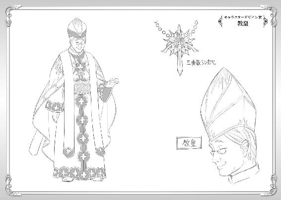
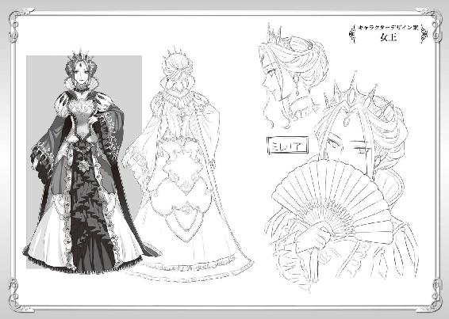
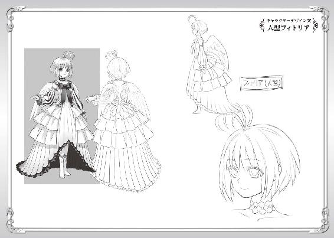
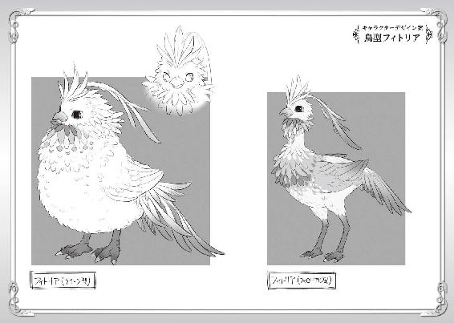
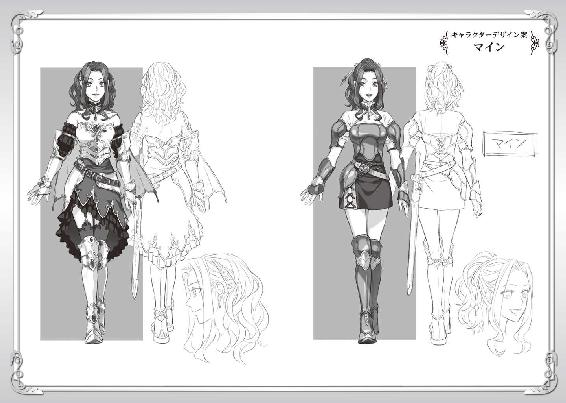
著者プロフィール
アネコユサギ
Aneko Yusagi
神奈川県出身。ゲームと読書好きが高じて、小説を書き始める。
『盾の勇者の成り上がり』を執筆し、ネット上に作品を公開。
作品発表後、連日欠かすことなく更新することで病み付きとなる読者が続出し話題となる。２０１３年８月ＭＦブックスから商業デビュー。
「どん底からどこまでも出世して行きます」と語る。
企画
株式会社フロンティアワークス メディアファクトリー
担当編集
堤 由惟／大原康平（株式会社フロンティアワークス）
ブックデザイン
ragtime
イラスト
弥南せいら
本書は小説投稿サイト「小説家になろう」（http://syosetu.com/）初出の作品を加筆の上書籍化したものです。
盾の勇者の成り上がり４
2014年2月28日発行 ver.1.0
著者 アネコユサギ
発行者 三坂泰二
編集長 金田一健
発行所 株式会社ＫＡＤＯＫＡＷＡ
〒102-8177
東京都千代田区富士見2-13-3
03-3238-8745（営業）
編集 メディアファクトリー
0570-002-001（カスタマーサポートセンター）
年末年始を除く平日10:00～18:00まで
©Aneko Yusagi 2014
※無断で複製・複写・データ配信などをすることは、かたくお断りいたします。
本電子書籍は下記にもとづいて制作しました
ＭＦブックス
盾の勇者の成り上がり４
発行日 2014年2月28日 初版第一刷発行

本作品の全部または一部を無断で複製、転載、配信、送信したり、ホームページ上に転載することを禁止します。また、本作品の内容を無断で改変、改ざん等を行うことも禁止します。
本作品購入時にご承諾いただいた規約により、有償・無償にかかわらず本作品を第三者に譲渡することはできません。
本作品を示すサムネイルなどのイメージ画像は、再ダウンロード時に予告なく変更される場合があります。
本作品は縦書きでレイアウトされています。
また、ご覧になるリーディングシステムにより、表示の差が認められることがあります。